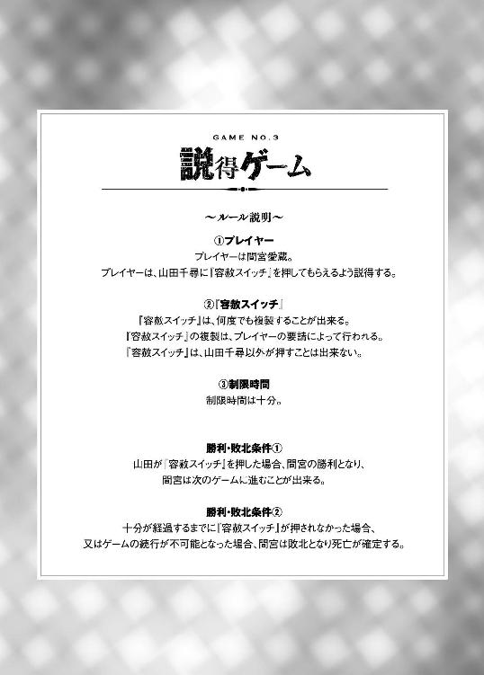
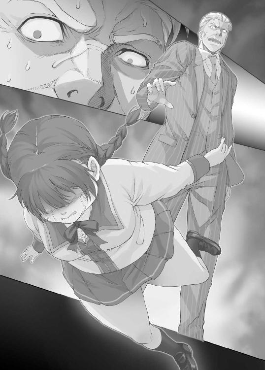

| 命がけのゲームに巻き込まれたので嫌いな奴をノリノリで片っ端から殺してやることにした1 (ＨＪ文庫) | |
| 中田かなた | |
| (2015) | |


第一章 残り九十人
０
トンネルを抜けると、根の国だった。
１
このバス事故らないかな？
そんなことを考えながら、修学旅行へと向かうバスの中で俺は外の景色に神経を集中させていた。というのも、特に見たいものがあったわけではない。バスの中の光景から目をそらしたかったからだ。
トランプをしてはしゃいでいる奴ら。
スマホを片手に何かを語り合っている奴ら。
わけのわからない話題で盛り上がっている奴ら。
青春を謳歌し、この一瞬を満喫しているリア充共と同じ空間にいるという不愉快極まりない事実から目をそらすため、俺は窓から外を見ていた。かといって、景色自体にはさほどの興味もない。
では、俺が何をしていたかといえば、三十分ほど前からずっとガードレールの上を脳内マリオに走らせていたのだ。ガードレールの上をひたすら走らせ、途切れるタイミングで大ジャンプ。次のガードレールに着地したらまた走らせる。親しい友達がいない人間ならば誰もが一度はやったことがあるであろうこのゲームを極めるべく、俺は研鑽を積んでいた。
だが、それも中止せざるを得ない状況がある。
バスがトンネルに入ると、脇に歩道がなくなった。つまり、ガードレールもなくなってしまい、マリオの足場もなくなるのだ。仕方がないので一時ゲームを中断し、意識をバスの中に戻す。バスの中は全体的に暗くなり、窓からは橙色の光が差し込んでいる。それ以外は全く変わらない。俺以外の人間が俺抜きで楽しく過ごしている。それだけだ。
だから、俺は考えた。いや、希望した。
このバス事故らないかな、と。
勿論、願っただけで本当にバスが事故にあうなんて考えていたわけではないし、実際にバスが事故にあったのも俺の祈りとは何の因果も関係もない。そもそも、俺が祈っただけで何かが実現するならば、世界の人口は現在の百分の一以下になっているだろう。それほどまでに、俺の振りまく嫉妬や恨みは無差別で無慈悲で適当なものなのだ。
だから、俺が現在おかれている状況。
白と黒に分けられた空間への監禁という現状が俺のせいであるはずがないのだ。
２
目が覚めて、最初に気がついたのは左腕についている異物だった。
デジタル式の腕時計のようだが、そこに表示されているのは現時刻ではない。
『残り時間 三十分』
残り時間。
三十分間で何かをしろということなのだろう。そして、この表示に変化がないのだから、それはまだ始まっていないということになる。
次に目に付いたのは、白と黒に塗り分けられた空間。ドア一つない密閉空間だ。直方体となっているこの部屋は、その真ん中で白のスペースと黒のスペースに分けられていて、俺は白のスペースにいる。黒のスペースに目を向けると、三人の人影が確認できた。
「どういう状況だ？」
周囲を見回す。
すると、俺のすぐそばに一人の男が倒れているのを見つけた。同じ制服を着ていることから考えれば、俺と同じ高校の生徒であることは間違いないようだ。派手な金髪、腰につけたチェーン、自分が今風のはっちゃけた高校生であることを全力でアピールするようなその服装から、大体どういう人間なのかは予想が付いた。
俺の嫌いなタイプだ。
チャラチャラしていて、仲間とつるみ、人数が揃うと他人を見下しレッテルを貼り付けようとする軽薄で関わるだけで損をしてしまうような人間。それがコイツだ。
というわけで、俺は金髪を放置して黒のスペースへと向かった。
黒のスペースにいる三人も目を覚ましたようで、辺りを見回して――
「むあっ？」
突然、顔面に衝撃が走った。
白のスペースから黒のスペースへと足を踏み出そうとした瞬間、見えない壁のようなものに衝突してしまったらしい。俺は立ち上がると、一見何もない、二つのスペースの区切りとなっている空間に手をかざす。すると、やはり冷たく無機質で、視認することが出来ない仕切りの存在が確認できた。
俺がその仕切りに触れていると、左腕の腕時計モドキが音を発した。
腕時計モドキには、先ほどまでは映っていなかった文字が表示されている。
『黒チームに移籍するためには、黒チームの承認を得ましょう。
黒チームへの移籍を申請しますか？
はい・いいえ』
黒チーム。
おそらく、黒いスペースにいる三人が所属していることになるのだろう。
俺は黒チームの三人に目をやる。
三人とも完全に目を覚ましたようで、既に立ち上がって辺りを見回している。そして、その中の一人が俺に話しかけてきた。
「あ、えっと......」
俺に話しかけてきた奴は、俺の顔を見ながら意識を別のところに集中させ始めた。よくあるリアクションだ。こういう場合、たいてい相手は俺がどこの誰なのかが分かっていない。『コイツ、クラスで見覚えがあるけど名前は知らないな。でも、ここで名前を聞くのも感じが悪くて嫌だな』という思惑が奴の中に渦巻いているに違いない。
こういう場合は、こちらから助け船を出すに限る。
そうでないと、気まずい時間が延々と続くことになるからな。
「新井だけど」
「ああ、そうだ。ごめん、まだ頭が働いてないみたいで思い出せなかったよ」
うん、そうだね。そういうことにしておこうか。
「それで、新井。これがどういう状況なのか分かるかい？」
「分かってたら顔をぶつけたりはしない」
「ん、ああ、そうだね」
「......」
「......」
いや、俺が名乗ったんだからお前も名乗れよ。
実は俺、同級生の名前をほとんど覚えてないんだよ。どうせ話すこともないだろうから必要性を感じなかったし、高校に入ると名札がなくて、ちょっとしたきっかけで名前を確認したり出来ないから名前を覚えられないんだよ。
そもそも、最初から名前を覚えるのは苦手だしな。世界史とか日本史に出てくる奴ら、全員死ねばいいのに。いや、死んでるのが大半なんだけどさ。
「ねぇ、飯田君」
はい、お名前いただきました。
目の前の男子生徒、飯田に話しかけてきた女子生徒は、不安そうにこちらに近づいてくる。その後ろから、表情の暗い無表情な女子生徒も付いてきている。
「牛尾さんに鉄山さん。体は大丈夫？」
「うん」
「大丈夫」
飯田の問いに二人が答える。
後ろの女子二人は牛尾と鉄山という名前らしい。正直、牛尾とかいう人物に聞き覚えはないが、鉄山という名前はよく耳にするし目にする。演劇部のエースにして、外部の有名劇団にも所属している演劇のプロ。その演技力たるや、変身とさえ言われるほどの有名人だ。世が世なら『超高校級の演劇部』とかいう肩書きつきで殺し合いをさせられるかもしれない逸材だ。
というわけで、消去法で残りの女子生徒が牛尾ということになる。こちらはごく普通のどこにでもいる女子高生そのものだ。他と同じように髪を茶色く染め、他と同じような化粧をし、他と同じようなアクセサリーをつけながらそれを自分の個性だと言い張ってしまうようなある意味痛々しい人間。
「それと、相沢も大丈夫か？」
「ああ」
声のした方向、つまりは俺の後ろに目をやると、いつの間にかさっきの金髪が立っていた。
何故だかわからないが、金髪は俺に敵意のこもった視線を向けている。
俺に対して何か思うところがあるのかもしれないが、今はそんなものはどうでもいい。これで、この密室にいる全員が意識を取り戻したことになる。
新井和馬。
飯田某。
牛尾某。
鉄山徹子。
相沢某。
この五人がこの白と黒の空間にいる全ての人間だ。
だが、それが分かったところで何の前進にもならない。
それに、俺はたった今、おかしな点に気がついてしまった。この空間、どこにもドアがないのだ。それどころか、外と中を行き来するための通路が全く存在しないのだ。じゃあ、一体俺たちはどうやってここに連れてこられたんだ？
俺が思案にふけっている最中、飯田がリア充特有のリーダーシップを発揮し、こんな状況であるにもかかわらず、俺たち五人をまとめようとしていた。いや、もしかしたらアイツ、この状況、この空間の異常さに気づいていないのかもしれないな。
「とりあえず、分かっていることを整理してみよう。新井、君は一番早く目を覚ましていたようだけど、何か分かったこととかはないのかい？」
「ほとんどないぞ。俺が気が付いた時間もお前たちと大して変わらないからな」
「そうなのか......」
「ああ。せいぜい、白スペースと黒スペースの間に見えない壁があるくらいのことしか分かってない」
俺はそう言って、見えない壁を指差した。
「ああ、本当だ！」
牛尾は透明な壁をぺたぺたと触った。
すると、牛尾の腕時計モドキから電子音が発せられた。おそらく、俺が壁を触ったときと同じような表示が現れているのだろう。
「ただ、これから何かをさせられることになるんだとは思う」
「根拠は？」
「これだよ」
俺は腕時計モドキを指差す。
「ここに出ている表示。『残り時間三十分』という何かの制限時間がまだ動き出していないのだから、これから何かが始まると考えるべきだ」
「成程」
「ま、誰のどんな企みがあるのかは分からないが、俺たちでは現状の打破は出来ないだろう。大人しくここで――」
「ん、どうした？」
「いや、あれ？」
微かな違和感、というよりは異物感。それがこの一瞬で肥大化したかのように感じる。
なにかあるはずのないものがそこにあるという不思議な感覚。
さっきまで何もなかった場所に、さも当たり前のように何かが存在するという現実。
その正体は堂々と俺たちの前に現れた。
『いや、別に企みってほど強い意思があるわけじゃあないし、かといって何も考えていないわけでもないんだよ。ただ、そういう仕組みだってだけだよ』
その言葉を誰が言ったのか、数秒間は誰も気づくことが出来なかった。
その声の主は、いつの間にか俺たちの目の前にいた。
ずっと前からそこにいたかのような感覚。
ずっと視界に入っていたにもかかわらず脳が認識できていなかったかのような、唐突さ。
そういった異質さにまみれた女は、俺たち五人の姿を確認し、見えない壁が存在するはずの白のスペースと黒のスペースの境目の上に立っていた。
『ああ、そうか。まだ名乗っていなかったね。私の名前は『管理者７７４』だ。個性も何もない、酷い名前だから気に入っていないし、その名前で呼ばれてやるつもりもない。ただ最初は本名を名乗るというルールだったから名乗っただけだ。私には自分でつけた名前がある。君たちは私のことを『ナナシ』と読んでくれ』
３
『さてと、それじゃあ、説明を始めよう。まず、君たちの腕についているソレ。とりあえずデバイスとでも呼んでおこう。君たちには、これからそのデバイスを使ってあるゲームを行ってもらう。そのゲームの名前は――特にない。ああ、勘違いしないでほしいんだけど、これはゲームに名前が付いていないということであって、『特にない』という名前のゲームが行われるわけじゃないんだ。以前、疑い深い人に聞かれたことがあるから先に言っておく。大したゲームじゃないからね。わざわざ名前をつけるほどのものじゃないから名前をつけていないだけだよ』
突如現れた人物、正体不明のナナシは、両腕を高く上げ大げさな動作を取りながら説明を始めた。どうやら、コイツがこの空間を、そしてこれから始まるであろうイベントを取り仕切っているようだ。
それにしても、ゲームか。
こういうクローズドサークル内で行われるゲームといえば、小説や漫画ならばほぼ確実に殺し合いということになる。『皆さんにはこれから殺し合いをしてもらいます』というやつだ。
「ゲームの内容は？」
『簡単だよ。白チームと黒チームに分かれて、人数が少ないチームの方が勝ち。これで六割以上が死ぬことになるね。制限時間は三十分。別チームへの移籍は腕についてるデバイスを使って行うこと。移籍をするためには移籍先チームの過半数の同意が必要。それだけだ。それで、今度は君たちから私に聞きたいことはあるかい？ ゲームが始まるまでの少ない時間だけなら、答えられるものについては答えてやるぜ』
成程。ゲームの内容は大体分かった。このルールならば、何もしなければほぼ確実に俺は勝てるだろう。俺がそう考えていると、今度は飯田が質問を始めた。
「アンタは何者なんだ？」
『私のことをどう定義付けるかは君たち次第だよ。天使でも死神でも神様でも女神様でも仏様でも何でもいい。その全てが不正解だ。正直言えば、私自身、自分が何なのか分かっていない。人間ではないし、かといって他の何者でもない。ま、強いて言うならば、ただの『仕組み』の一部のようなものだ』
「仕組みというのは？」
『それについては、この先嫌でも理解してもらうことになるから、ここでの説明は省略させてもらうよ。ほかに聞きたいことはないかい？』
「私たちは、どうなったの？」
今度は牛尾だ。
『君たちはバスの事故で谷底にまっさかさまだったんだけど、おぼえているかな？ その事故の結果、君たちは半死半生の状態にあるんだ。まだ、死ぬか生きるかが確定していない状態。生と死が同時に存在する不安定極まりない状態とでも言ったほうがいいのか。ま、ほぼ死んでいると考えてくれて構わないよ。ああ、体に傷がないとかそういう細かいことは気にしないでくれ。ここは君たちで言うところの精神世界のようなものなのだからね』
バスの事故。その言葉に、俺は心当たりがあった。
だが、これは起こるべくして起きたものであって、別に俺がついうっかり願ってしまったことは関係ないはずだ。そもそも、俺に願いを実現させるような能力があったら、俺の周りの人間は大体死んでいるはずだ。うん、そうだ。
「私たちはこれからどうなるの？」
『勿論、生き返らせてあげるに決まっているじゃないか。未来ある若者たちが突然の事故で命を失う。悲しくセンセーショナルな出来事だ。あってはいけない事件だ。だから、私は君たちを生き残らせてあげようと思っているんだ。正確に言うならば、生と死の混在状態から死を取り除くわけだけど、それはこちらの作業なのでどうでもいいさ。ただ、非常に残念なことに、君たち全員を助けてあげることは出来ないんだ。だって、そんな都合のいい話はないだろう？ バスが谷底に落ちたにもかかわらず、九十人全員が生き残るだなんて、そんな奇跡の安売りがあっていい訳がない。奇跡というのは、そう簡単に起きないからこそ価値があるんだぜ』
ナナシがそう言い終わると同時に、全員のデバイスから電子音が鳴り出した。
デバイスを見ると、残り時間が減り始めていることが確認できた。
『おっと、ゲームが始まったようだね。このゲームの概要についてはさっき言ったとおりだ。これ以上については、一人一回だけ質問を受けつけてやろう。それじゃあ、私は別室で待ってるから、質問を決めたら入って来なさい。勿論、質問をしないという選択肢もありだから、よく考えるように』
そう言って立ち去ろうとするナナシを牛尾が呼び止める。
「ちょっと待って。ねぇ、私たちは何でこんなゲームに参加させられるの？」
『何のために、ねぇ。さっき言ったとおりだよ。選別でも間引きでも何でもいいけれど、生き返らせる人間の数を減らすため。ところで、君、名前は何だったかな？』
「......牛尾花子」
『そうか、花子ちゃん。君はとてもいい人だね。いや、人がいいと言ったほうがいいのだろうね。他の人間を出し抜いて生き残るためには、情報は出来る限り独占すべきなのに、優しくも愚かな君は全員の前でルールについての質問をしてしまった。さっきも言ったけれど、ルールについて私に質問できるのは一人につき一回のみだ。つまり、花子ちゃん。君はそのたった一度きりのチャンスを捨ててしまったんだよ』
「でも、他の人にルールを聞かれると困るようなこともないんじゃないの？」
『本当にそう思う？ 思っちゃう？ あはは、バーカ』
「えっ？」
『協力しようが対立しようが、それは私が関知することじゃないよ。与らないし知りもしない話だ。だから、そこらへんは君たちの自由にやるといい。私は別室で待っているよ』
次の瞬間には、ナナシの姿は白のスペースからも黒のスペースからも消えていた。
ただ、両方のスペースに、今まで存在しなかったはずのドアが現れていた。
取り残された俺たちは、しばらくの間呆然としていた。突然突きつけられた現実を受け止め切れていない人間がほとんどなのだろう。自分が死に掛けていて、生き返るためにはゲームに勝たなければならない。そんな非現実的な現実を即座に受け入れられる人間は多くはないはずだ。
そんな中、俺はというと――。
４
何てことだ。
最高の！ イベントが！ 降臨してきたじゃないか！
何だこれは！
俺が上手く振舞うことで、こいつらを殺すことができる。正確には死亡を確定させるということらしいが、そんな細かいことはどうでもいい。
今こそ、復讐の時！
いや、彼らに悪意はなかったのだろうから、復讐というのはおかしい。彼らは俺に対して悪意を向けることすらしなかった。俺はクラスの中で存在しないものとして扱われてきた。その環境は気楽ではあったが、周囲の奴らが必死にリア充アピールをしているさなかにいるのは流石に辛かった。それに、妬ましかった。
だからこそ！
今日、俺は全ての障害を排除する。
俺の中のもう一人の俺が囁きかける。
リア充は殺せ！
間違っていたのはお前たちだということを教えてやる！
これは俺からお前たちに対する逆襲だ！
「おい、新井」
「ん？」
ああ、危なかった。
この状況に浮かれすぎてしまって、周りに気を配るのを忘れていた。
「おいおい、動揺するのは分かるけどしっかりしろよな」
「ああ、悪い」
「それじゃあ、もう一度最初から言うぞ。とにかく、この状況は不公平だと思うんだ。だから、とりあえず全員こっちの黒チームに入って、話し合いで白チームに入る人間を選びたいと思う。だから、新井と相沢はひとまず黒チームに入ってくれないか？」
バ・カ・め！
そんな言葉に騙されるほど俺は馬鹿じゃない！
これは、飯田による罠だ。
俺と相沢が黒チームに移籍すれば、白チームには誰もいなくなり、承認抜きで白チームへの移籍が出来ることになる。そうなれば、白チームへの移籍は話し合いをするまでもなく、ただの早い者勝ちになる。
「少し考える時間が欲しいんだが、待ってもらえないか」
「出来れば早くして欲しいんだけど......。相沢はどうなんだ？」
「いや、俺はそういうの微妙なんだけどさ、どっちにしろ新井が行かないって言うなら、意味ないだろ」
相沢は曖昧な答え方をする。黒チームに移る気はないが、黒チームの人間に敵意を向けられるのも嫌だということなのだろう。派手な見た目に反して、みみっちい奴だ。仕方がないから、ここは俺が口ぞえをしてやることにしよう。
「そんなことはないぞ」
「え？」
「相沢とやら。お前が黒チームに移れば、今黒チームにいる奴らのうち一人を白チームは受け入れることが出来る。つまり、お前が犠牲になることで他の一人が助かることが出来るんだ」
「いや、でも......」
相沢はうろたえている。俺が黒チームに行かないのを言い訳にしていたが、俺自身によってその言い訳を潰されてしまったのだ。
チャンスとみたか、飯田が畳み掛ける。
「どうする、相沢？」
「俺も少し考えさせてくれ」
それが妥当なところだろう。誰だって、自分の命を危険にさらしたくはない。
だが、飯田はまだ粘る。今度は再び俺に対して説得を始めた。
「なぁ、新井。とりあえずこっちに来てくれないか？ お前がこっちに来てくれれば、相沢だって来る。そして、全員で助かる方法を探そう」
「全員で助かる方法？ そんなものあるわけがない」
「何でそう言い切れるんだ？」
「さぁね。とにかく、俺は動く気はないからな」
俺は床に寝転がって動きませんアピールを始めた。
さて、これで奴らはどんな手段をとるかな？
５
それから五分が経っても、黒チームの三人に動きはなかった。
当たり前の話だ。彼らが少数派になるためには、大きなハードルが二つある。
まず、このゲームにおいて助かることが出来るのは二人が限度であり、彼らは三人組だということだ。誰か一人は犠牲にならなくてはならないのだけど、どちらにしても死亡が確定する役目を引き受けてくれるようなお人よしが存在するわけがない。
そして第二に、仮に誰か一人、白チームへの移籍の意思を示す奴が出たところで、俺は絶対に承認したりはしない。さっきナナシは、移籍には移籍先のチームの過半数の同意が必要だと言っていた。つまり、相沢が血迷って承認したところで、俺が承認しなければ白チームへの移籍は不可能ということになる。
このままなら、俺は確実にこのゲームに勝利することが出来る。
だが、問題が一つ、あると言えばある。
この相沢とかいうエセ金髪野郎。チャラい癖に人を見下すような態度ばかりとっているこの人間を俺は生き残らせたくない。端的に言えば嫌いだから死んでほしい。
そして今は、コイツを殺すための千載一遇のチャンスを手に入れている。
ならば、やらない理由はないだろう。
たとえ、俺の命が危機にさらされるとしても、気に入らないやつを殺せるのなら俺の命程度は安いものだ。
「なぁ、飯田」
「何だよ？」
「このゲーム、不自然だと思わないか？」
「どういうことだ？」
「最初から二人と三人に分けられていて、人数が少ないほうが勝つことになる。どう考えても、最初から二人いるチームの方が有利だ。それも、三人チームのほうが挽回することはほぼ不可能な状態でのスタート。はっきり言って、ゲームとして不自然だ」
「成程。それで、何か分かったのか？」
「いいや。ただ、判断材料が欲しい。とりあえずさ、そこの牛尾花子以外もさっきの変質者の所に行ってルールでも何でも聞いてくればいいんじゃないか？ 五人全員が生き残ることは出来ないにしても、現状をひっくりかえすためのきっかけをつかむことくらいは出来るかもしれないだろ」
「......それもそうだな。ここで言い争っていても仕方がない。なぁ、相沢。質問をしてその質問に対する回答を俺たちに教えるくらいのことはしてくれるよな」
「あ、ああ。勿論だ」
相沢はすんなりと了承した。
「でも、何を聞けばいいんだ？」
相沢が飯田に尋ねる。
「それは、これから話し合って決めよう。それと、知らなかったとはいえ牛尾は自分の権利を使って聞いたルールを全員に公表した形になるから、他の人も自分が聞き出したルールを公表してほしい。新井。お前も協力してくれ」
「え、嫌だけど」
俺は即答した。
頼まれごとには、とりあえず「ＮＯ」を突きつける。そうでなければ段々と要求はエスカレートしていくものだ。
「相沢だって協力してくれようとしているんだ」
「協力？ ああ、協力ね。そういう言い方も出来るかもしれないな」
「何が言いたいんだ？」
「いや、別に。ただ、そこの相沢とかいう奴はお前らを助けるために協力をするわけじゃあないということだけは分かっておいてほしいというだけだ。奴は黒チームの人間に少しでも協力的な姿勢を見せることで、自分が安全圏にいることへの罪悪感を薄めようとしているだけ。少しだけ手を貸しました。だから、見殺しにしたわけじゃありませんってな。コイツはお前たちの死亡が確定した後に、自分は出来ることはしたから罪悪感を感じる必要はないと信じ込む気でいるんだよ。なんとも卑怯で意地汚い行動じゃないか。少なくとも、俺はそんなことをする気にはなれないね」
「そんなことは......」
「あるだろ？ 自覚はなかったかもしれないけどな」
さぁ、どうする相沢？ このままだと、お前は自分が助かるために言い訳ばかりしているだけの情けない人間、俺以下の人間ということになる。それが嫌なら、さっさと黒チームに移るといい。もっとも、命の保証はしないけどな。
こんなことを考えていると、何故か黒チームから相沢に対するフォローがあった。
「とにかく、協力してくれるならいいんだ」
飯田。お前はまだ黒チームにいるんだろ。だったら、ここは乗ってこいよ。
「良くないだろ？ コイツが死なない限り、お前たちは確実に死ぬんだぞ。こんなチャラいだけのクズを生き残らせるために貴重で尊いお前たちの命が浪費されるんだ。それこそ、死・ぬ・ほ・ど、悔しいよなぁ」
「今は全員で生き残る方法を探すのが最優先だ。仲間割れをしている場合じゃないだろ」
仲間割れ！
驚いた。この飯田とか言う男、この状況に置かれてもなお、ここにいる五人を仲間だと思っているのか。もしかしたら適当に言っただけなのかもしれないが、それにしたってこいつの頭の中は平和すぎる。
そんな俺たちの会話を尻目に、行動に出る人間がいた。
「じゃあ、私から行ってくる」
そう言って面接室のドアに手をかけたのは鉄山だった。
鉄山徹子。
他人に興味がない俺でも知っている演劇部のエース。その実力たるや、演じるという枠を飛びぬけて『変身する』という表現が使われるほどらしいが、俺は彼女の演技を見たことがないので良く分からない。
「なんて聞くつもりなんだ？」
飯田が尋ねる。
「勝利条件の確認。人数の少ないチームが生き残れるというのなら、全員が黒のチームに入った場合、誰もいなくなった白チームはチームとして認められるのか、ということ」
その言葉を聞き、飯田と牛尾の表情に希望がともった。
「成程。もしかしたら、それなら五人全員で生き残ることが出来るのかもしれないな」
「それじゃあ、私たちも助かる！」
確かに、定義の確認は重要だ。
鉄山徹子という演劇部員、中々鋭い直感を持っているようだ。
鉄山は五分もしないうちに戻ってきた。
「どうだった？」
「......駄目だった」
飯田の質問に対して、鉄山は沈痛な表情で答えた。
「少数派チームはたとえゼロ人になったとしてもチームとして認める。この場合、五人が黒チームに所属したとしても、黒チームが多数派であることに変わりはなく、黒チームの人間は全て死亡が確定する。それがナナシさんの回答だったよ」
「......そうか。鉄山さん、ありがとう。皆で生き残るための方法を探ってくれて」
「いえ、別に......」
鉄山は黒いスペースの端っこに行ってしまった。期待させるだけさせておいて『やっぱり駄目だった』ということになったため、彼女にしてみても肩身が狭い思いなのだろう。
「じゃあ、次は俺が行くよ」
今度は飯田が言い出した。いや、別に洒落とかじゃないし。
「質問の内容はどうするつもりだ？」
「このゲームで三人以上が生き残ることは可能か」
成程。まずは、今の試みが完全に無駄になってしまう可能性を潰すつもりか。しかし、これで不可能だと言われてしまったら奴はどうするつもりなんだろうな。生き残ることが不可能だということを知ったら、俺と相沢に対してどんな態度をとることになるんだろう。
三人以上の生き残りはどうせ不可能だろうが、それだけは、少しだけ期待しておこう。
五分後、飯田は予想外の回答を持って戻ってきた。
「可能と言えないこともない、と言われた」
「......どういうことだ？」
「分からない。だが、完全に不可能だというわけじゃないんだ。皆で力を合わせて、生き残ろう！」
俺を除く三人が、飯田の言葉に呼応した。
しかし、どういうことだ？
五人中三人以上が生き残ることが可能？
これは少数派が生き残るゲームであるはず。五人組である以上、助かるのは最大でも二人であるはずだ。それなのに、五人中三人が生き残れる？
ハッタリか？ それとも――何か、俺は勘違いをしているのか？
いや、まず最初に疑うべきは前提か――。
「相沢」
「あ？ 何だよ？」
「俺の代わりに聞いてほしい質問がある」
「ふざけんな！ 言いたい放題文句を言っておきながら、俺に命令すんな！ 質問をしたいなら自分でしろ！」
「俺がしてほしい質問の内容は『このゲームで六人以上の死亡を確定させることは可能か』ということだ」
「......は？ 意味が分からねぇよ。ここには五人しかいないんだ。六人以上の死亡が確定するわけがないだろ！」
「その前提が正しいのかを確認したいんだ」
「はぁ？ 意味が分かんねぇよ」
ああ、もう面倒くさい。どうせろくなことを質問しないんだから、素直に俺の言うことを聞いておけよ。もっとも、素直に従ったところで悪いようにはしてやるつもりだけどな。
「相沢。全員で助かりたいのなら、俺に従え」
相沢は答えない。その代わりに、飯田に視線をやって助けを求めている。
「新井」
今度はその飯田から話しかけてくる。
「何か考えがあるんだな？ だったら先にその考えを教えてくれないか？」
「まだ纏まらないんだ。だから、相沢が持ってくる回答を待って、考えを固めたいんだ」
「......分かった。相沢。新井の言うとおりの質問をしてくれないか？」
「でも――」
「このゲームで三人以上が生き残ることが出来る。俺たちにとっては都合のいい情報だけど、これをどう扱っていいのか見当がつかない。残り時間もあまりないようだし、新井には考えがあるらしい。ここは彼に賭けて見てほしいんだ」
相沢は何も言わず『ナナシさんルーム』へと向かった。
本当に俺の指定した質問をするかは分からない。だが、もしもその質問をしたとして、それに対する答えによっては、俺たちが参加しているゲームの全体図が、俺たちが考えているものとは大きく異なっていることになる。
「六人以上の死亡は確実に確定する、だってさ」
「「「えええええええっ！」」」
戻ってきた相沢の言葉に、俺以外が声を上げた。
ここにいる人間は五人。それにもかかわらず、六人以上の死亡が確定する。
この二つが矛盾しなくなるような前提がやはり存在することになる。
「新井。もういいだろう？ お前の考えを教えてくれ」
「......もう少し待ってくれ。これから俺が質問をしにいく。戻ってきたら話すから」
俺はそういって『ナナシさんルーム』へと向かった。
扉の向こうには短い廊下があり、そこを抜けた先が『ナナシさんルーム』となっていた。その真っ白な部屋にはモニターが付いていて、そこからナナシはゲームを見ているらしい。机の上には紅茶とお菓子がおかれているが、匂いは一切しなかった。
『やはり、君は最後に来るものだと思っていたよ』
「そうかい」
『それで、君は私に何を聞きたいんだい？ ま、さっきの彼からの質問で大体の予想は付くけどね』
「多分、予想通りだ。俺の質問は『このゲームは何人で行われているのか』ということだ」
『成程ね。いいよ、答えよう。その答えは――』
６
白と黒の空間に戻ると、全員の視線が俺に向けられた。何だか、微妙に緊張する。かつて俺に対してここまでの注意が向けられたことってないんじゃないか？
「それで、君は、どんなルールを聞いたんだい？」
飯田が尋ねる。
「......他の生徒たちはどうなったのか」
「え......、あ――」
俺の発言で、奴らはようやく他の生徒たちの存在を思い出したらしい。
薄情な奴らめ。
「それで、他の人たちはどうしている？」
「俺たちと同じ状況らしい。白と黒に分けられて、少数派が生き残るゲームをさせられている。ちなみに、一つ重要な情報を得ることが出来たが、聞きたいか？」
「聞かせてほしい。というより、分かった情報は包み隠さず教えあう約束のはずだ」
いや、俺は拒否したからね。その上で相沢の態度を大いに批判したんだけれど、忘れられちゃったのか？ まぁ、自分の意見や意思を無視されることなんて日常茶飯事だから別に気にはしないけれども。
「ああ、そうだな。だけど、その前にもう一つだけ約束してほしいんだ。俺が説明を終えたら、俺を黒のチームに入れてくれ」
「黒チームに？ 何故だ？」
「約束してくれるなら話すよ。お前たちにとって都合のいい情報だということは保証するし、上手くやれば、いや、上手くやらなくても俺たち五人全員が生き残ることができるようになる」
「分かった」
所詮は口約束。
これは、白のチームを一度空にするための罠でしかないのだ。
「それで、情報というのは？」
「俺たちはルールを誤解していた、という話だ。このゲームは、白と黒に分かれて、数が小さいほうが生き残ることができるというゲームだ。だから、現時点では黒チームが三人、白チームが二人で白チームが有利ということになる。俺たちは最初、そう考えた」
「そう考えたも何も、それが正しいルールだ。ナナシにも確認しただろう」
「だから、そこに誤解があるんだ。いいか、よく聞け。これは黒チームと白チームの戦いだ。そして、白チームと黒チームはここ以外にも存在する」
「......どういうことだ？」
「他のグループについても考えないといけないということだ。現在、黒チームの人数は四十一人、白チームの人数は四十九人。つまり、全体で考えれば、今勝っているのは黒チームということになる。そして、白チームから黒チームに二人移動したところで、未だに黒チームの優位は変わらない」
「ああ、そう考えれば、俺と相沢の質問に対する答えにも説明が付く」
「え、どういうことなの？」
納得した飯田に牛尾が尋ねる。
「そもそも、これは総勢九十名でやっているゲームだということだ。だから、このゲームで五人が生き残ることも可能だし、六人以上の死亡は確実に確定する。つまり、俺と相沢の質問には何の意味もなかったんだよ」
「いや、意味ならあったぞ」
「俺はお前の質問に対するナナシの回答のおかげで、この事実に気が付くことが出来た。お前たちの協力がなければ、俺は白チームにいたまま死んでいただろう」
「新井......」
「じゃあ、改めて、俺を黒チームに入れてくれ」
そう言って、俺は白と黒のスペースを遮る空間に触れた。
デバイスには、先ほど同様に、移籍の申請をするかを問う文言が現れる。
これで申請をして、黒チームの過半数の承認が得られれば俺は黒チームに移籍ということになる。だが、それを快く思わない人間もいるわけだ。
「断る」
その言葉を発したのは、飯田だった。
先ほどまでのおだやかな雰囲気はどこかに消え去ってしまっている。やはり、アレは自分が不利な状況にあったから下手に出ていただけらしい。黒チームと白チームの優劣が逆転してしまい、絶対的に有利な状況に今、その本性が現れたのだろう。
「土下座しろよ」
「土下座？ 何故？」
「お前は、自分だけ生き残ろうとした。俺たちを見殺しにしようとしたんだ。だったら、土下座くらいはしてもらわないと割に合わないさ。ここままだと、牛尾さんも鉄山さんもお前の移籍を承認しないからな」
「......分かったよ」
俺はその場に膝を突く。そして、額を地面につけた。
いいぜ、土下座でも何でもしてやるよ。それでお前のどうしようもないプライドが満たされるというのなら、何度でもしてやる。こんな状況下で土下座をしたところで失うものは何もないんだ。
それに――。
飯田を始めとしたここにいる四人は全員、俺に騙されているんだからなぁ！
この土下座は、俺が黒チームへ移籍するためのものではない！
相沢を黒チームに移籍させるためのものなんだよ！
「もういいんじゃない？」
鉄山が飯田に言った。
「......そうだな。新井、承認をしてやるから、デバイスを操作しろ」
「ああ」
俺はデバイスを操作して、移籍の申請を行った。
すると、黒チームにいる人間のデバイスが電子音を発し、黒チームの面々はそれぞれデバイスを操作し始めた。おそらく、俺の移籍を承認するか拒否するかが選べるようになっているのだろう。
そして数秒後、白いスペースの壁に、申請の結果が現れた。
『承認 ３
拒否 ０
移籍は承認されました』
満場一致で、俺の移籍は許可された。
気がつくと、俺の足元には黒い円が現れていた。まるで俺の影のように、俺の動きに合わせて移動してくる円。おそらく、これで黒いスペースへ移動することが出来るようになったのだろう。
俺は二つのスペースの区切りまで歩き、手を前に出した。
予想通り、俺の手は何にも遮られることなく、黒のスペースへと入ることが出来た。俺は歩いて黒のスペースに入り、振り向いてこちらを見ている相沢と向かい合った。
「相沢。お前はどうするんだ？」
「俺は、お前を信用できない。俺に黒チームに移籍してほしいなら、俺を納得させてみろ」
「......お前はこの状況で、どうして上から目線でいられるんだ？」
「何だと？」
「言っておくが、お前は黒チームに来なくても別に構わない。お前が黒チームに来る必要はない。むしろ、そのままでいてくれるほうが助かる」
「どういうことだよ？」
「言っただろ。黒チームの人数は四十一人、白チームの人数は四十九人。俺とお前が黒チームに移籍することで、黒チームの人数は四十三人、白チームの人数は四十七人になる。もしも他のグループでも俺と同じ発想をする人間がいたら、全体で考えても白チームの方が少数派になってしまう可能性がある。だから、そのままでいてくれるならそのほうが助かるんだよ」
「いや、でも......」
相沢は飯田に視線を向ける。
コイツ、ただ優柔不断なだけなんじゃないか？
「相沢。こっちに来い。全員で生き残ろう」
飯田は相沢に手を差し伸べた。勿論、移籍が承認されるまではその手に触れることは出来ないのだが、相沢はその行動に感動してしまったのか、即座に移籍を申請してきた。
『相沢秀樹の移籍を承認しますか？
承認
拒否』
デバイスに現れた内容を確認し、俺は『拒否』を選択した。
数秒後、俺のときと同様に壁に結果が表示される。
『承認 ３
拒否 １
移籍は承認されました』
「拒否――１？」
その場にいた全員が、一斉に俺を見る。
おいおい、何で俺が拒否を選択したって思うんだよ。まぁ、俺なんだけどな！
飯田が詰め寄ってくる。
「新井。お前、恥ずかしくないのか？」
「全然」
恥も何も、これから死ぬ奴がどう思おうが関係ないんだよ！
お前たちは黒チームが勝つと思っているようだが、実際は違う！
勝つのは白チームだ！
俺はさっき、ナナシにそれを確認してきた！
お前たちは俺に騙されているんだよ！
そして、訳も分からないまま死んでいくがいい！
さぁて、白チームが空になったところで、一人で白チームに戻ることにしよう。
俺は小型デバイスを操作して、白チームへの移籍を申請した。
現在、白チームには誰もいないからこれで俺は白チームに問題なく入れるはずだ。
そのはずだったのだが――
『現在、承認待ちです』
小型デバイスに表示された文字。
これが意味することはただ一つ。
誰かが俺よりも先に白チームへの移籍を行ったということだ。しかも、俺の嘘に騙されることなく。一体誰が――。
そう考えていると、一人の女子生徒が、ごく自然に、当たり前のように白チームの領域へと向かった。
鉄山徹子。
超高校級の役者。
「鉄山さん。君は何をやっているんだい？」
飯田が詰問する。その声は少し震えていた。
俺と相沢が黒チームに移籍したことで、ここにいる五人全員が生き残ることが出来る。そう考えていたのだ。それなのに、突然白チームに移籍する人間が現れたのだから動揺するのも当然だ。
「何って勿論、白チームへの移籍だよ」
「いや、だから何でそんなことを？」
「だって、新井君は私のためにわざわざ黒チームに行ってくれたんでしょ？ 相沢君を排除して私を白チームに入れるために、態々自分も黒チームに入るという危険を冒してくれた」
何を言っているんだ、この女は？
いや、ここは話をあわせておいたほうがいいのか？
しかし、話をあわせようにも鉄山徹子の発想が全く理解できない。何故、俺が白チームを空にしたことが鉄山のためだということになるんだ？ アレは相沢を排除するためのものであって、他の誰のためというわけでもなかった。それが純然たる事実だ。
「鉄山さん。ソイツがそんなことを考えているはずないだろ」
飯田、ナイス助け船！
当の本人が何のことだか分かっていないことを、ここにいる連中に悟られるのは何だかまずいような気がする。特に、鉄山徹子に知られるのが一番まずい。俺が白チームに戻れるかどうかは、彼女の選択にかかっているのだ。
「じゃあ、何故新井君は黒のチームに入ったと思うの？」
「それは、黒のチームに入れば勝てると考えたからだろう？」
「ああ、うん。そうだね。でも、それは本当なのかな？ 本当に黒チームに入れば、私たちは生き残れるのかな？ どうして貴方たちは、新井君が嘘をついていると思わないのかな？ どうして君たちは、新井君の言葉を、人間性を信じちゃったのかな？」
随分と核心を突いてくれる。
「新井は土下座までしたんだ。土下座をするくらいだから、どうしても黒チームに入る必要があったんだ」
「ええ、そうね。やりたくもない土下座をするにはそれなりの必要性がある。それには同意できるよ。問題は、その必要性が何なのかということなんだ」
「だから、それはソイツが生き残りたいからだろ！ 白チームに入ったままだと死ぬから、土下座をして黒チームに入ったんだ！ いい加減にしろよお前！ こんなことを言って、何が目的なんだよ！」
おいおい、飯田よ。化けの皮が剥がれているぞ。
「ただ、確認したかっただけだよ」
その言葉を発したのが彼女だということに俺が気づくまでに数秒の時間を要した。
信じられないくらいに冷たく無機質な声。
その場にいた誰もが、その豹変に息を呑んだ。
「確かめたかったって、何のことだ？」
「貴方たちの新井君に対する反応だよ。でも、これで分かった。貴方たちは不合格」
「不合格？」
「貴方たちはぁ、新井君検定五級に落ちてしまいました。だから、死んでもらうことにしたよ」
「だから、このままだとお前が死ぬことに――」
「気づかなかったの？」
「は？」
「さっき、私のデバイスが鳴ったの、気がつかなかった？」
そう言うと、鉄山は壁を指差した。
すると、鉄山が指差した方向とは逆の壁に文字が現れた。
『承認 １
拒否 ０
移籍は承認されました』
「新井君の白チームへの入場を承認したよ」
「......ああ」
俺は再び、白いスペースへと移動した。その様子を黒いスペースにいる三人は唖然としながら見ていた。
「これで再び白チーム二人、黒チーム三人。そして、勝つのは俺たち白チームだ」
「待てよ！ このゲームは九十人でやっているはずだろ！ そして黒チームが――。まさか、今勝っているのは白チームなのか？」
「いや、知らん。そもそも、そんなことは重要じゃないんだよ。重要なのは、このゲームの全体像を掴むことだ。そのために俺たちは質問権を与えられていた。そして、全体像を把握できた者がゲームを優位に進めることができる」
「それで、お前は出来たのか？」
「ああ、出来た。このゲームは全部で九十人で行われているゲームだ。そして、九十人は五人ずつ十八組に分けられ、『それぞれの組で』勝敗が決まることになるんだ」
「......それぞれの組で？」
「そうだ。勝敗はここの五人で決まる。九十人で決まるわけじゃないんだよ。それはかなり早い段階で分かっていたはずだぞ」
「どういうことだ？」
「あのナナシとかいう女。最初に『これで六割以上が死ぬことになる』と言っていただろ。六割といえば、五分の三だ。つまり五人中三人だ。もしも勝敗が九十人で決まるのであれば、四十四対四十六くらいの結果となる可能性が出てくるけれど、この場合、精々死ぬのは五割程度のものだ。だから、勝敗がここの五人で決まるということは最初から疑っていなかった。もっとも、お前の質問に対するナナシの答えには少し驚かされたけどな」
「......三人以上の生き残りは可能と言えないこともない、というやつか」
「そうだ。これは、全員が同じゲームを同時に行っているから、全体で見れば三人以上の生き残りは可能だという意味だった。つまり、五人中三人なのではなく、九十人中三人というわけだ」
「何でそんな分かりにくい仕組みを......」
「俺の個人的な考えなんだが、おそらく、三人のチームに対する救済策だったんだろう。通常ならこのゲームはチームの移籍なんて一度も起きずに終わる。だけど、この一見矛盾した状況を上手く使えば、二人のチームから三人のチームにプレイヤーを移動させることができる。丁度、俺が相沢を黒チームに移籍するよう誘導したようにな。このひねくれた全体像は、多数派のチームに与えられた武器だったんだと俺は考えている」
「......成程な。つまり、お前は俺たちを騙したんだな？」
「ああ、そうだよ。ようやく気づいたか、馬鹿どもめぇ！ お前たちはここで死ぬ！ 飯田ぁ！ 勝利を確信して俺に土下座までさせておいて、自分が死んでしまうなんて情けないにもほどがあるよなぁ！ おい、相沢！ お前は何もしなければ生き残っていたんだよ！ ああ、そうだ。恨むなら飯田を恨めよ。俺が散々『お前が黒のチームに来る必要はない』って言って止めてやったのに、飯田が勧めたことでお前は黒チームに入ったんだ。牛尾！ お前には特にない」
黒チームの三人は反論する気にもなれないのか、立ったままこちらを見ていた。その視線は焦点が合っていない。ただ、飯田だけが、腹から声をひねり出しているかのように、苦しげな声で俺に問いかけてきた。
「なぁ、新井」
「何だ？」
「お前は本当に、鉄山さんを助けたかったのか？」
「......ああ、そうだよ」
嘘だけどな。
あの変質者は奇跡の安売りをしないために、選別やら間引きやらをすると言っていた。そして、転落事故にあった人間の四割も生き残ってしまったら、それは奇跡が起きたというよりは、ただ死んだ人間の運が悪かっただけだということになる。
だから、間引きはまだ続く。
そう考えると、味方は増やしておいたほうがいいはずだ。
鉄山徹子。
超高校級の演劇部。
こういう特殊技能を持った人間は、味方につけておくに越したことはない。
「鉄山さん。これからよろしくね」
「うん、こちらこそ末永くよろしくお願いするね」
こうして、俺と鉄山徹子は堅い握手をした。
欺瞞に満ちた握手だが、生存率を上げるためには必要なことだ。
「これで分かったでしょ？ 新井君は私を助けるために黒のチームに移ったの。命がけで私を助けようとしてくれたの。土下座までしてくれたの」
鉄山は、その確信を持った思い込みを言い放った。
「......俺たちは見殺しか？」
当然だろう。
一人でもこちらに来たら、白チームが多数派になってしまう。そして、少数派になることが出来た人間が自分の身を危険にさらしてまで、どうでもいいクラスメイトを助ける理由なんてものは存在しない。
だけど、鉄山徹子の答えは違った。
「嫌だな。見殺しになんてしないよ」
何だコイツ。
一体、何を考えている？
「よく考えてみて。これは少数派が勝つんだよ。今は三対二で私たち白チームが有利。これを二対三にすることは私が阻止するから出来ない。でも、貴方たちは自分の力で少数派を作り出せるはずだよ」
「どういうことだよ」
飯田よ。お前も鈍いな。
俺にはわかってしまったよ。この俺よりもイカれた思想の持ち主が、どんな異常な方法を思いついたのかを。
「簡単な話だよ。貴方たちは、三対二を二対二や一対二にすることが出来るじゃない」
「え？」
「死んだ人間は人間じゃないでしょ？」
「あ......」
最初に行動に出たのは相沢だった。
相沢は突然飯田の顔面めがけて拳を振るったが、ギリギリのところで飯田はそれをかわした。そして、飯田は不安定な体勢の中、相沢の顔を蹴り上げた。相沢は蹴られた鼻を押さえながらうめき声を出し、その場に崩れ落ちてしまった。
おそらく、鉄山徹子の言葉を聞いた瞬間から、飯田も他の二人を殺す気になっていたのだろう。そうでもなければ、相沢の攻撃をかわしてから反撃するまでの一連の自然な動作の説明が付かない。ただ、先に行動に出たのが相沢だっただけのことだ。
ちなみに、牛尾は黒チームの端っこで手を口に当てながら、いかにも『私、ショックを受けています』というリアクションを取っていた。何せ、暴力によって生死が決まるのであれば、最初に脱落することになるのは力のない女性である牛尾なのだ。彼女が生き残る可能性があるとすれば、相沢と飯田が相打ちになって死んでしまうという奇跡が必要となる。だから、彼女は攻勢に出た飯田を止め、相沢を立ちあがらせる必要があるのだ。全ては、自分が生き残るために。
だから、飯田に対して、牛尾は叫ぶ。
表情を崩し、涙を流しながら叫ぶ。
「飯田君！ もう、止めて！」
勿論、飯田は攻撃を止めない。そもそも、相沢が死んだら次は牛尾を殺すつもりなのだ。ここで牛尾の言葉に耳を貸す必要はない。
残り時間はあと十分。
飯田は十分もあれば、相沢に止めを刺し、牛尾を殺すことが出来るだろう。
俺と鉄山徹子は、それを白チームの領域から俯瞰する。
まるで、テレビを見ているかのように。
彼らの争いが、自分たちには何の影響も及ぼさないということが分かっているかのように。
７
決着は五分でついた。
飯田は相沢を四分かけて殺し、牛尾を一分で殺した。
飯田は血だらけになった手で、二つのスペースを遮る透明な壁に触れた。
「新井！ 鉄山！ 俺の勝ちだ！ これで一対二！ 本気で仲間を殺すだなんて思わなかっただろ！ 俺の勝ちだあああああああああぁぁぁ！」
飯田の叫びが部屋に響く。
だが、俺も鉄山も、そんな飯田の姿を見ても何の反応も示さなかった。
「ねぇ、飯田君」
「何だよ？」
「正直なところ、飯田君が本当に黒チームの人たちを殺すだなんて思っていなかったわ。これだけは計算外。あの二人に苦痛を与えてしまったことに対しては、本当に申し訳ないという気持ちで一杯よ」
「そうかよ！ じゃあ、死後の世界とやらで謝っておけ！」
「死後の世界か。まぁ、私が死んだら考えてみるわ」
「今からでもいいんじゃないかぁ？ どうせお前は死ぬんだからな！」
「え、何で？」
「何でって、これは少数派が生き残るゲームだ！ そして、今は一対二でお前たちが多数派！ 生き残るのは俺で、死ぬのはお前たちだ！」
「ああ、あの説明ね。死んだ人間は人間じゃないっていうやつ。そんなの、嘘に決まってるじゃない」
「......え？」
「貴方は死ぬわ」
「嘘だろ」
「うん、嘘だよ。私も嘘をついていたんだ。勝利条件を聞いたって言うのは嘘。もしかしたら白チームに誰もいなければ、五人全員で生き残れたのかもしれないね」
いや、それはないだろう。それではナナシが言った六割死亡が確実ではなくなる。
鉄山も分かっているが、飯田を追い詰めるために敢えてこんなでたらめを言っているのだ。
「じゃあ、本当は何を聞いたんだよ！」
「『死体は人数に含まれますか』って聞いたよ」
「......それで、答えは？」
「この状況を私が容認していることを考えれば聞くまでもないことだろうけれど、勿論、死体も人数に含まれるって答えてもらったよ。死のうが生きようが、デバイスがついている人間は人数に含めるってね。嘘だと思うならナナシさんに聞いてみるといいよ。多分、後十秒くらいでここに来ることになるから」
鉄山はデバイスを見ながら行った。俺もデバイスを確認してみると、残り時間が五秒となっていた。五・四・三・二・一――。
『はいは～い。ゲーム終了。うわ～、何だか随分と派手にやってくれたものだね。この死体の後片付け、誰がやると思っているんだい？ ま、私じゃないからいいのだけれどね。不思議な力でパパッとやっちゃうからどうでもいいのだけれどね。さて、それじゃあ、ゲームの結果の発表だ。結果は二対三で白チームの勝ち。というわけで、新井君、鉄山さん。次のステージへ向かおうか』
「ちょっと待て！」
『どうしたんだい、飯田君？ 君は死亡が確定したから、もう何をやっても悪あがきにしかならないわけだけれど、それでも何か聞いたり言ったりしておきたいことでもあるのかい？』
「それは......、ああ、ある」
『そうかい。それじゃあ、手短に頼むよ』
「ああ」
飯田は鉄山を睨みつける。
「お前、何であんなことを言ったんだよ？」
「あんなこと？」
「殺せば少数派になれるってことだよ！ あんなことを言う必要はなかっただろ！ お前のせいで、俺は二人をこの手で殺してしまったんだ！」
「......何だ、そんなこと」
「そんなこと？ そんなことだって！」
「いいわ。説明してあげる。貴方たちは、新井君を侮辱した。土下座までさせた。だから、その償いをさせようと思ったのよ。二人には暴力を。生き残った、いや、これから死んでしまうのだから、生き残ったというのは妥当じゃないのかもしれないけれど、とにかく一番マシな状態の貴方には、絶望を送ろうかと思っただけのことじゃない」
やっべー。コイツ、マジ怖い。
コイツ、本物だ。本当に頭のネジが外れてどこかに消え去ってしまっている。
「さぁ、新井君。行こうか」
「お、おう」
『おや、もう移動してくれるのか。飯田君の無様な姿でも観察していかなくていいのかい？』
「別にいい」
『それじゃあ、行こうか』
ナナシは俺と鉄山を連れて、突如現れた扉から隣の部屋へと移動した。
それにしても、さっき扉が現れた位置はナナシの個人面談部屋につながっているはず――いや、考えても仕方がない。ここはそういう空間。そう割り切ってしまったほうがいい。
俺たちが通された隣の部屋は、またしても白と黒の空間だった。
ただし、今度は部屋の半分で白と黒に分けられているわけではなく、白い部屋の中央が、幅五メートルほどの真っ黒な直線で分けられていた。
『ああ、説明しておくと、今度はその黒の上には行かないほうがいいよ』
「何かあるのか？」
『いいや、何もないよ。そこには何もない。つまり、床がないんだ』
「床が？」
俺は制服のボタンを一つ取り、黒い線の上に投げ捨てた。
すると、ボタンは吸い込まれるように黒い線の中に消えていった。
「へぇ」
『ちなみに、人間も普通に落ちるからね』
「何でこんなものがあるんだ？」
『それには色々と理由があるのだよ。まずは暴力行為の防止だね。第一のゲームでは、暴力行為が横行してしまったからね。それに、これは第二のゲームの罰ゲームでも非常に大きな意味を持つんだ』
「罰ゲーム？」
『おおっと、聞かれてしまったか。聞かれてしまったものは仕方がないから話してあげよう。実は、ゲームの敗者には死ぬほど苦しい罰ゲームが用意されているんだ。もうそろそろ、さっき君たちがいた空間の黒チームの生き残りが、その罰ゲームを受ける頃だと思うから、少し静かにしてくれるかな？』
「ああ、そういう趣向か。分かったよ」
俺たち三人は口を閉ざした。
そして、数秒がたった後、耳を劈くような叫び声が俺たちのいる空間に響いた。
壁一枚隔てた隣の空間にいるはずなのに、異常なほどの音量が俺たちのいる空間を支配する。隣の部屋では、この音量に見合った『罰ゲーム』とやらが起きているというのは間違いないらしい。
そして、一分が経過したころ、ようやく叫び声が消え去り、静寂が再び白と黒の空間を包みこんだ。
さすがの俺も、この状況に何も感じないというわけにはいかなかった。
俺は飯田という男をよく知らないが、先ほどまでのゲームでの印象からすれば、あの男がこれほどの叫び声をあげるような状況を想像できそうにない。一体どんな『罰ゲーム』があの男に科せられたのか――それは知らないほうがいいのかもしれない。
一方で、鉄山はというと、顔色を変えるどころか、満足そうな微笑を終始絶やすことなく叫び声を聞いていた。そして、声が聞こえなくなると、そのままの不気味な笑顔で俺に話しかけてきた。
「ねぇ、新井君。素敵な叫び声だったと思わない？」
「叫び声に素敵かどうかなんてあるのか？」
「勿論だよ。絶望を完璧に音で表現したかのような、聞き心地のいい叫び声だったよ。聞き惚れるとは正にこのこと。飯田君には、こんな素敵な才能があったんだね」
「ああ、そうだな」
俺はそう返事をすることしか出来なかった。
鉄山徹子。この女に対してどんな対応をするのが正解なのか、俺には分かりそうにない。
だが、一つだけ言えることがある。
この異常さは、この異質な空間の中では強力な武器となる。
だから、今度こそ心の底からこの言葉を言うことができる。
「鉄山さん」
「何かな？」
「改めて、これからよろしくお願いするよ」
「うん、こちらこそ」
第二章 残り三十六人
１
『さて、君たちも分かっているだろうが、ゲームはこれで終わりというわけにはいかない。君たちにはこの後もいくつかのゲームに参加してもらい、生存者の数を減らしていってもらうわけだが、何か言いたいことはあるかい？』
「残りのゲームの数は？」
『いや、そういうことじゃなくってさ。ここは『殺し合いなんて真っ平御免だ』とか『もう嫌だ。誰か私を助けて』みたいな寒い台詞を言うべきところだろう。いや、君たちにそういう常識を期待するべきでないことはさっきのゲームで分かったから、もういいや』
「それで、第二のゲームはいつ始まるんだ？」
『もうすぐ始まるよ。もうすぐ第二のゲームの対戦相手がこちらに来ることになっている。相手がつき次第、ゲームを始めさせてもらうよ』
ナナシは反対側の壁に視線を向けた。その視線の先には、いつの間にかモノトーンの扉が現れていた。
『おや、ご到着のようだね』
反対側に現れた扉からは、二人の人間が出てきた。
一人は四十代後半の男性。多分、修学旅行に同行していた教師だろう。
もう一人は、地味でやや太っている女子生徒。
そして、二人の後ろからは見覚えのある姿が続いた。他でもない、さっきまで俺の隣にいたはずのナナシだ。俺のそばにいたナナシの姿は影も形もなくなっていた。
『さて、早速だけど第二のゲームを始めさせてもらうよ。君たちの組はごちゃごちゃとやっていたから他の組と比べて進行が遅れているんだ。こちらの都合で申し訳ないが、君たちには迅速な決着を望むよ。おっと、その前にお楽しみの時間だ』
ナナシがそう言うと、この空間に再び絶叫が響いた。
今度は、男女両方の声だ。
『間宮・山田の二人が生き残った組では、多数派だった三人は全員生存していたからね。この叫び声は三人分のものだ。さっきのとは迫力が違っただろう？ さて、それじゃあいい感じで緊張感をもてたところで、第二のゲームを開始しよう。これはチーム戦でやってもらう。新井・鉄山ペア対間宮・山田ペアの戦いだな。まぁ、チーム戦と言っても、協力をしたりする必要はない。チームのうち一人が代表としてゲームに参加することになるだけだ』
「代表が負けた場合はどうなる？」
『勿論、代表とその仲間が罰ゲームだ』
「つまり、代表以外は指をくわえて結果を待っているしかないということだな」
『その通りだ。それで、代表はどちらにするか決まったのかい？』
鉄山徹子と視線を交わす。
さっきのゲームで、彼女がゲームのプレイヤーとして有能であることは確認できた。だが、それと同時に彼女の不安定さも露見していた。何故かは分からないが、鉄山徹子は俺が彼女に対して好意を持っていると勘違いしているらしい。そういう誤解に基づいた行動を第二のゲームでも起こさないとは限らないだろう。
「鉄山さん。代表は俺でもいいか？」
「うん、勿論だよ」
鉄山は迷うことなく答えた。
『新井・鉄山ペアは新井君が代表ということでいいんだね？』
「ああ、それでいい」
『それじゃあ、間宮・山田ペアはどうするんだい？』
「では、私が代表をしましょう」
間宮は、山田と相談することなく自分を代表にした。まぁ、あちらのペアは教師と生徒である以上、汚れ仕事になるであろう役割を教師が務めるというのは妥当なのかもしれない。だが、決める前に山田と全く言葉を交わさないということに、俺は違和感を持った。
『では、代表者が決まったところで第二のゲームの内容を紹介しよう。その名も――あれ、何だっけ？ コインの表と裏を当てるやつ』
「コイントス？」
『ああ、それそれ。コイントス。というわけで、ルールは腕についている小型デバイスに入れておくから、各自確認してくれ』
言われて、デバイスに表示されたルールを確認する。
先ほどのゲームとは違って、今度は最初からルールが開示されているらしい。
『さて、それではゲーム開始だ。まず、どちらがコインを投げ、どちらが当てるかを決めよう。私が適当に決めてやってもいいが、とりあえずは話し合いだ。五分間時間を与えるから、どちらにするのかを決めておいてくれ』
ナナシの言葉を聞いた教師は、俺に語りかける。
「さて、新井君。君には非常に申し訳ないけれど、こういう状況になってしまいましたからね。私も命が惜しい。これから、無数の生徒を導いていかなければなりませんし、家に帰れば妻と娘が私の帰りを待っているのです」
「それが何か？」
同情を引こうとでもしているのか？
いや、同情を引くにしては、態度が堂々としすぎている。
「申し訳ありませんが、君たちにはこのゲームを棄権してもらいたいのです。私には導かなければならない生徒たちがいます。私がいなくなったら、彼らはどうやって人生を学んでいけばいいのでしょう？ 私には養わなければいけない家族がいます。私が突然いなくなったら、彼女たちはどうやって暮らせばいいのでしょう？ 君たちには本当に申し訳なく思っていますが、ここは君たちが犠牲になってはくれないでしょうか？」
「......アンタ、本気でそんなことを言っているのか？」
「勿論です」
何なんだ、この馬鹿は。いきなり『自分のために死んでくれ』と赤の他人に言われて、それに素直に応じる人間なんているわけがないだろう。どうやら、同情を引こうとしているわけではなく、本当に俺が応じると思っている、ただの異常者らしい。
俺が怪しんでいると、後ろから服を引っ張られた。
「何だい、鉄山さん」
「あの人、教祖様だよ」
「教祖様？」
「八組の担任。アメとムチを完全に使い分けて、生徒の心をわしづかみにしているとかいう噂のある先生だよ。あの人が担任を務めるクラスは異常なくらいに纏まりを持っていて、成績もどんどん上がっているらしいわ。あと、ボランティア活動とかにもクラス全員が参加させられているみたい。あまりに凄いから、いつしか教師を超えた存在という意味を込めて『教祖』という呼び名がついたの」
「そんなのがいたのか、うちの学校」
「結構、有名だよ。この前、うちの学校の男子生徒が線路のホームに落ちた酔っ払いを助けようとして死んじゃった事故があったでしょ？」
言われてみれば、いた気がする。
ここ最近、何故かマスコミが校門の前で生徒にインタビューをしている光景が多く目に付いた。あれはその関係で、生徒の悲しみのコメントを集めていたのだろう。
「あの事故で死んじゃった生徒。あれも八組の生徒なんだよ」
「随分と馬鹿な秀才もいたものだな」
八組といえば、特別進学クラスだ。
難関国立大学を目指す、将来のエリート候補たちが集まっているはずなのに、酔っ払いごときのために自分の命を犠牲にするなんて、どう考えても割に合わない。美談として色々と騒がれてはいたようだが、所詮は一時的なものに過ぎない。はっきり言ってしまえば、助けるという行動に出たこと自体が判断ミスだ。
だが、この状況においては、少しは役に立つかもしれない。
その話を利用して揺さぶりをかけてみよう。
「なぁ、先生。アンタ、八組の担任なんだろ？」
「そうですよ」
「じゃあ、生徒のために死んでやろうっていう気はないのか？ この前死んだ、アンタの生徒のように、他人のために自らの命を犠牲にしてみる気はないか？」
「ありますよ。ですが、助ける相手が君である必要性はありません。このゲームで君が生き残ったからといって、次のゲームで生き残れる保証はありません。だから、私は少しでも価値のある生徒を助けようと思うのです」
「価値のある生徒？」
「例えば、そこの鉄山徹子さん。彼女は類まれなる才能をもって、社会に対して大きな貢献を果たしている。私は、彼女のような生徒を助けるために、生きていかなければならないのです。君は確か、一組の新井和馬君でしたね。部活に所属せず、成績も中の下。特筆する点のない、ごく普通の生徒です。生き残れる数が一定であるなら、君のような生徒は残念ながら排除するしかありません」
ああ、成程ね。そういう思想の持ち主か。
間宮某。やはり、教師という枠よりも教祖という枠の方が似合う人間だ。
俺の嫌いなタイプ。正しさを武器にする人間だ。
凝り固まった常識や世間が掲げる正しさという反撃不可能な武器を振り回して自分の思い通りに周囲を従わせようとする人間。そういう奴に対して唯一有効な対処方法は関わりを持たないことだ。でも、そういう奴に限って、向こうから関わろうとする。そこから離れようとすれば、敵として認定され更に粘着してこようとする。
俺が思うに、正しさというものは使っても良心が痛まない大量破壊兵器なのだ。間違っているものだけでなく、そこそこ正しいものまで攻撃し、最後には人間関係の焦土だけを残す危険な代物なのだ。
「今度はこちらから聞きましょう。新井君、私や私が過去から未来にかけて指導していく生徒たちや私の家族のために、ここで死んでもらえませんか？」
「......確かに、俺はアンタみたいに立派な人間じゃない。性格は悪いし、友達はいないし、協調性は皆無だし、世の中全てを否定的に見ているし、誰も信用していないし、する気もない。アンタみたいな人間が死ぬことに比べたら、俺が死んだことで社会に与える影響も、家族に与える影響も少ないと思う」
「じゃあ――」
「だ～か～ら～、断る！」
「は？」
「そもそも、俺は他人の幸せなんてものは全く考えていない。むしろ、見ていてイライラするから幸せな人間なんて片っ端から死ねばいいと思っている。よって、俺は絶対にアンタにゲームを譲らない！」
「......そういう考えの生徒がこの学校にいたなんて、非常に残念です。ですが、おかげで決心がつきました。君のような人には、ここで脱落していただきます」
「どちらにしろ負ける気はなかったんだろ？ だったら無駄なことはせずにさっさと進めようぜ。どうも、俺たちの組は他と比べて遅れているらしいからな。無駄話に花を咲かせても仕方がないだろう」
「そうですね。では、コインを投げるほうか、当てるほうか。君は希望はありますか？」
「いいや、ない。どちらを選んだところで勝つのは俺だ」
「どういうことです？」
「どうでもいいだろ。さっさと好きなほうを選べ。お前が何をしようと、俺はお前もお前が過去から未来にかけて指導していく生徒もお前の家族も、全て踏みにじってやる」
「......では、私がコインを投げましょう。君は当てる役をお願いします」
「ああ、いいだろう」
『さてさて、決まったようだね。それじゃあ、適当に始めてくれ。ルールのことで確認したいことがあったら、私は例のごとく『ナナシさんルーム』にいるから聞きに来るといい。ただし、質問はさっきと同様に一人一つまでだ。それと、質問が出来るのは代表者のみだ。ペアの相手は昼寝でもしながら果報を待っていたまえ』
そういった次の瞬間には、ナナシは消えていた。背後の壁を見ると、予想通り、気づかぬ間に『ナナシさんルーム』と書かれたモノトーンの扉が現れていた。ナナシにルールを聞く部屋は、いつの間にかナナシさんルームという名前がついていたようだ。
「それじゃあ、俺は早速ナナシさんルームに行こうと思うんだが、それは俺が先でいいよな？ コインを投げる役目を譲ってやったんだから、それくらいは譲ってくれるよな？」
「......いいでしょう。行ってきてください」
俺は扉から『ナナシさんルーム』に入った。
『おや、随分と早いじゃないか』
「無駄な時間は使いたくないからね。それじゃあ、早速だけど質問、いいかな？」
『ああ、勿論だよ』
「それじゃあ、言うよ。俺の質問は――」
２
俺が『ナナシさんルーム』から戻ると、今度は間宮が『ナナシさんルーム』に行った。
間宮は三分も経たないうちに『ナナシさんルーム』から出てくると、落ち着いた声で俺に語りかける。
「さて、それでは新井君。準備はいいですか？」
「ああ、いいぜ。ゲームを始めよう。コインを投げるのはアンタの役割だ。さっさと投げろ」
間宮はコインを投げ、それを左手の手の甲と右手の手のひらでキャッチした。コインは間宮がキャッチする瞬間まである程度の速さで回転していたから、現時点では間宮もコインの表が出ているのか裏が出ているのかは分からないはずだ。
「さて、新井君。今度は君が当てる番です。『表』か『裏』か、選んでください」
「『裏』だ」
俺は迷わずに答えた。
ここで迷う必要はない。
すると、間宮は右手と左手を少しだけ離し、その隙間からコインを見た。そして、右手と左手を再び元に戻し、百八十度回転させた。
「は？ いや、何やってるんだ？」
「新井君。残念でしたね。君の負けです」
「いや、だから、何で裏返してるんだよ？」
「よくルールを読んでください。裏返してはいけないなんてルールは存在しないんですよ。ルールでは『コインの表裏は、コインを投げた人間がオープンを宣言し、左手の手の甲と右手の手のひらを離したときに確定する』ということになっています。だから、君の答えを聞いた後に、こうやって裏表をひっくり返すことも出来るのです」
「そんな滅茶苦茶な――」
「これは、ナナシさんに確認済の事実です。そうですよね、ナナシさん」
『ああ、その通りだ。何一つ間違っていないよ』
「さて、新井君。これで、私がオープンを宣言して手を離せばゲームの決着がついてしまいます。ですが、その前にどうしても、看過しがたい事態があるのです」
「......何だ？」
「ナナシさん。ルールの追加をお願いしたいのですが」
『何だい？』
「このゲームで、生き残ることができる人間を一人増やしていただきたいのです。そこにいる鉄山徹子さん。彼女は超高校級の役者と言われて、日本中から期待されている人間なのです。ここで死なれるのは、日本という国、演劇という芸術分野にとって大きな損失となります」
『嫌だ』
「そうですか......」
『でも、面白いから別のルールを追加してあげよう。『ゲームに勝利した代表は、自分のペアを犠牲にすることで、別の一人を生き残らせることが出来る』。まぁ、簡潔に言えば、ゲームの勝者は、鉄山さんか山田さんのどちらを生き残らせるのかを選ぶことが出来るということだね』
「おお、それはありがたい。それでは、私が勝った場合、鉄山さんを生き残らせることにしましょう。山田さん。残念ですが、君とはここでお別れということになりますが、ご了承いただけますね？」
「え、あ......」
「山田さん。君は八組の中でも、とりわけ高い奉仕の心を持っている人です。ですから、君なら快く了承していただけると思いますが、いかがですか？」
間宮は執拗に山田に呼びかける。
だが、山田は答えようとはしない。
はっきり言って、普段なら全く興味がわかない状況だ。所詮は他人事。いちいち首を突っ込んでいたらきりがない。だが、今日この場所この時でだけは、これを放置しておくわけには行かないだろう。
「山田」
「え？」
「取引をしよう。もし、コインが裏だったら、お前を生き残らせてやる」
「でも......」
「今、そいつはお前を見捨てるという宣言をしたも同然だ。お前が生き残るためには、俺を生き残らせるしかないんだ！」
「無駄ですよ。山田さんは、八組の中でも他人のためにわが身を顧みず働くことが出来る人です。今回のゲーム、彼女は鉄山さんのために犠牲になることを受け入れてくれているのです。ですから、最初のゲームで彼女と同じチームに所属できたのは喜ばしいことでした」
五人中三人を犠牲にするゲーム。
そういえば、コイツも他の生徒たちを犠牲にして生き残ってきたのだ。
「アンタに聞きたいことがある」
「ほう。何でしょう？」
「さっきの一回戦。俺が戦った相手は、同じクラスの生徒だった。おそらく、一回戦は同じクラスの人間が集められているのだと考えているんだが、アンタは誰を相手にしていたんだ？」
「お察しの通り、八組の生徒ですよ。彼らは快く、私にゲームの勝利を譲ってくれました。自分で言うのもなんですが、八組の生徒たちは私の教育によって、慈愛に満ちた清らかな心を持っているのです」
「清らかな心。そうだろうなぁ。担任を生き残らせるためにわが身を犠牲にする。八組っていうのは、そういう異常な奴らが集まっているらしいな」
「異常ではありません。それが人間のあるべき姿なのです。彼らは自分の意思で私を生き残らせてくれたのです。そんな彼らのためにも、私はここで死ぬわけにはいかないのです」
「いいや、異常だね。アンタのクラスの奴らは、頭のおかしい教祖様に洗脳された哀れでみじめな人間だ。いいか、よく聞け。アンタのクラスは国立や高難度の私大の受験を予定している所謂特別進学クラスだ。文化祭にも体育祭にも参加しない、閉鎖的なクラスだ。そんな閉鎖的な環境で、彼らは朝から晩まで勉強をしている。いや、していた。そして、そんな閉鎖的な環境に身をおいていたからこそ、彼らはアンタの言うことを妄信して、アンタに対して信仰にも似た感情をもってしまった。アンタの言うことを無条件に信じて、アンタの教えを無条件に実行した」
「くだらない想像です。それに、仮にそれが事実だとしても、ゲームには何ら関係がないことでしょう？」
「関係なくはないさ。アンタのローカル宗教は、特別進学クラスという閉ざされた環境にいたから信仰されてしまっただけだ。だから、価値観が一度壊れるような衝撃的な出来事に遭遇してしまえば、その洗脳を解くことも出来る」
そう。環境を変えれば、衝撃的な出来事に身をおけば、洗脳は解ける。そのタイミングとしてふさわしいのは、今をおいて他にはないだろう。
俺は山田に語りかける。
「山田。お前はそれでいいのか？」
「え？」
「お前は、間宮のために死ぬことに満足できるのか？ お前はここで間宮を生き残らせるために生きてきたのか？」
「それは......」
「他人の踏み台になってきたんだろ？ それにずっと耐えてきたんだろ？ 自分の価値の低さに、色々なことを諦めていたんだろ？ 誰からもそういう扱いを受けてきたんだろ？ お前の人生はそんな終わり方でいいのか？ お前が死んだところで『アイツなら死んでもいいや』としか思われないんだぞ！ お前が生まれてきたことには、その程度の意味しかなかったのか？ 違うだろ！ お前はどうしたいのか、今ここで答えろ！」
「私は......、私はのろまなブスだけど、取り柄もないけど、やっぱり生きていたい！ 間宮先生！ それじゃあ、駄目なんですか！」
山田は涙をこぼしながら叫んだ。間宮はそれを冷ややかな目で見ている。
おいおい教祖様よ。それは自分の生徒に対して向けていいような視線じゃないだろう。そんな汚いものを見るかのような視線は、教師が生徒に向けていいものじゃない。向けられ慣れている俺が言うのだから間違いない。
「駄目じゃない。全然駄目じゃないよ、山田」
「......新井君？」
「な～にが『犠牲になってくれ』だぁ！ 馬鹿も休み休み言え！ 自己犠牲なんてものは人の命令や圧力に逆らえない人間の言い訳だ！ 他人のために時間を犠牲にする。労力を犠牲にする。金銭を犠牲にする。精神的安定を、そして命を犠牲にする」
「それは尊いことですよ」
「ああ、そうだな。じゃあ、遺族に言ってみろよ。この前死んだ生徒の親に、『アナタの息子さん、他人のために死ねてよかったですね』って。本当に尊く推奨すべきことであるなら、勿論言えるよなぁ！」
「それは......」
「断言してやる！ 誰もが他人の幸せのために自己犠牲をいとわない世界では、誰一人幸せにはなれない！ 人はまず、自分が幸せになることを考えなければならない。幸せで幸せで幸せで、その幸せを誰かに分けてあげたくなって初めて他人の幸せのことを考えればいい！ 自分が幸せでもないのに他人の幸せを願う人間なんて、頭がおかしいか、自分が幸せになる努力をしない怠け者のどちらかだ！ どうせ大半は後者なんだろうさ！ 自分で自分の幸せを掴むのが大変だから、他人に幸せをつかませて、それを自分のことのように喜びたいだけの寄生虫だ！ そりゃあ、寄生していれば楽だろうさ！ 判断も思考も全部他人任せなんだ！ 自分を犠牲にして他人の利益を生み出しているんだから、感謝もされるだろう！ 感謝されてさぞかしいい気分になれるんだろう！ でも、そんな生き方じゃ何も残らないんだ！ 何者にもなれず、ただ他人の踏み台でしかない人生を送ることになるんだ！ 山田！ お前は、どうしたい！ 自分の夢や希望を鉄山徹子に押し付けて、何かをやり遂げた気分になったまま、傍から見れば惨めそのものの散り様をさらしたいのか！ それとも、生き残って自分の手で何かを掴み取る努力をするのか！ もしも、自分で何かをしたいなら、チャンスは今しかない！ お前は、お前の意思で立ち上がり、間宮の手にあるコインを力ずくで裏にするんだ！」
洗脳は解くことが出来る。
その証拠に、山田はよろよろと立ち上がると、涙と鼻水でぐちゃぐちゃになった顔を拭きもせず、間宮に向かって走り出したのだ。山田は間宮に体当たりを仕掛けるが、間宮はそれをあっさりとかわした。そして、山田に対してもゴミでも見るかのような視線を向け、体勢を崩した彼女の腹を思いっきり蹴り上げた。山田のうめき声が部屋に響く。
「山田さん。まさか君がここまで低俗な人間だったとは思いませんでした。君は、奉仕の心以外にこれと言って取り得のない人間ですが、身の程だけは心得ていたはずなのに。こんなことになってしまって、本当に残念です」
「私は、諦めない！」
山田は間宮の足にしがみついた。しかし、間宮は動じない。両手でしっかりとコインを確保しながら、体勢を崩さないように冷静に山田の体を蹴り続ける。それでも山田は諦めない。間宮のズボンのすそに指を食い込ませ、必死に間宮に食らいついている。
「仕方がありません。山田さん。その執念にだけ敬意を表するということで、このまま決着をつけて差し上げましょう。ナナシさん。オープンを宣言します」
そう言って、間宮は両手を離し、右手に持ったコインを俺に見せ付けた。
コインは――『表』。
間宮は今度は山田に対して表側になっているコインを見せ付ける。
そして次の瞬間、間宮は豹変した。
「表ですよ、表！ 私の勝ちです！ 私だけの勝ちです！ この平凡なブスめ！ 死ね！ 死ね！ 君はここで捨ててってやりますよ、この役立たずの低脳の豚がぁ！」
山田を罵る声が部屋に響き渡る。
「どうです、新井君！ 表ですよ！ 君は負けてここで死ぬ！ そこまで必死の演説をしたのに何の意味もなかったわけですが、今どんな気分ですかぁ？」
いや、キャラ変わりすぎだろ。
いくら教祖様といえども、命を危険にさらし続けているこの状況では、性格が捻じ曲がってしまうのだろうか。いや、おそらく、あれが間宮の本性だ。ここにきて、それが表に出てきただけのことなのだろう。
ま、何にせよ俺が言うべきことは唯一つ。
「助かるよ」
「......何ですって？」
「これで罪悪感を持たなくて済む」
俺がそういうと、鉄山がツッコミを入れてきた。
「新井君はそんなもの、最初から持ち合わせてないでしょう？」
「お前が言うなよ！ さっきのゲームで黒チームに殺し合いをさせたの、忘れてないからな！ むしろ、これ以上ないってくらいに印象に残っているからな！」
「うん、覚えてて」
何だろう、このずれた感じは。
鉄山徹子との会話では、何かが大きくずれている気がして仕方がない。まるで、立たされている立場や、前提が大きく異なっているような違和感。
いや、それを考えるのは後でいい。
今は、間宮を潰すことを最優先しようじゃないか。
とはいっても、既に勝負は決している。これ以上、すべきことは存在しない。間宮も痺れを切らしたらしく、ナナシに向かって催促を始めた。
「ナナシさん！ 早く結果を発表して、新井君に罰を受けさせてください。彼はどうやっても反省をしないようです。残念ながら、処分するしかありません」
『ん、ああ、もういいのかい？ 何だか盛り上がってて、間に入りにくい雰囲気だったから遠慮していたんだけれど』
「ええ、もう十分です」
『新井君も大丈夫かい？』
「ああ、大丈夫だよ」
『そうか。じゃあ、結果発表。結果が表で、賭けられたのも表だから、新井・鉄山ペアの勝利ということになるね。それで、新井君。さっき間宮先生によって追加されたルールに関連した質問なんだが、生き残るペアの相手は鉄山さんでいいのかい？』
「ああ、そのままでいい」
『そうかい。それじゃあ、新井君・鉄山さん、次のステージへ向かおうか』
「ああ、そうだな」
ナナシの先導で俺と鉄山は、次の空間へと向かおうとした。
すると、間宮が焦ってナナシに向かって叫びだした。
「待て待て待て待て！ おかしいでしょう！ 彼は、裏って宣言したはずです！」
『ああ、したね』
「だったら、そいつは裏に賭けた事になるはず！ それなのに、何でそいつが表に賭けた事になってるんですか！」
『別に、大した理由はないさ。ルールどおりだ。新井君はルール通りに『表』を宣言した。そして、間宮先生はルール通りにオープンを宣言し、表であることが確定された。というわけで、ルール通りに新井君の勝利が確定。ルール通りに君たちは死ぬ。何か文句でもあるのかい？』
「あるに決まっています！ 新井君は確かに『裏』と宣言していました！ 彼が賭けたのは『裏』です！ 表が出たんだから、私の勝ちのはずです！」
あーあ。
ここまで予定通りにことが進むとは思わなかった。
「まんまと騙されたんだよ、お前」
「何だと？」
「このゲーム、いつ始まったと思っているんだ？」
「は？」
「このゲームが始まったのはいつだと思っているのか、と聞いているんだ」
「それは、お前が――」
間宮の顔に驚愕の表情が浮かぶ。
そう、奴は取り返しのつかない勘違いをしていたのだ。
「気づいたみたいだな。そうだ。このゲームはナナシさんがルールを説明し終わった瞬間から始まっていたんだよ。だから、俺はルールの確認に行ったとき、ナナシさんに対して表と宣言していたんだ」
「あああ......」
「そして、その後に俺はお前に対して『ゲームを始めよう』と言った。でも、この時点で、ゲームはとっくに始まっていて、既に俺は宣言を済ませていたんだ」
「それじゃあ、確実に私が負けるじゃないですか！ イカサマです！ ナナシさん！ この勝負は無効にしてください！」
「見苦しいぞ教祖様。そもそも、今俺が話した計画は、お前が俺を確実に殺そうとした場合にだけ効果が出るものだ。結局、最後に判断したのはアンタなんだよ」
「うう......」
「もっとも、お前が俺のことを路肩のゴミ程度にしか思っていないことを俺は知っていたから、お前がこういう姑息な方法を使うであろう事は確信していたけどな」
「く......、何を根拠に――」
「根拠なんか必要ないさ。大体、俺に向けられる視線なんて『コイツ誰？』とか『コイツ邪魔だな』とか、『コイツ死ねばいいのに』とか、そういうものばかりなんだから、お前がどこの誰だろうが関係ねぇよ。どうせお前も『そいつらの中の一人』なんだろ。それに、念のために俺がどれだけ生きる価値のないクズであるのかを徹底的にお前に教えてやったからな。お前は何としても確実に生き残ろうとするだろう。教祖とか言われて調子に乗っている勘違い教師をそういう思考に誘導するなんて、簡単なことなんだよ」
「い、いや。でも、おかしい。君が私を誘導していたという点については同意してもいいですが、君は山田さんにコインの表と裏を逆にさせるために説得をしていたでしょう！ もしも山田さんが成功していたら、君が死んでいたはずですよ！」
「成功していたらもなにも、あの状況で山田の行動が成功する可能性なんて欠片ほども存在しなかっただろ？ 山田が何か行動を起こしたところで、アンタがすべきことは右手と左手を離すというたった一つの単純な動作だ。アンタのことは信用していないが、そこまで無能だとは思っていないぞ」
「じゃあ、あの説得は何だったのですか！」
「あれは、俺が本当にあせっているとお前に誤認させるための演技だ。あの場で俺が何もしなかったら、お前は何か罠が仕掛けられているのではないかと警戒していたはずだ。だから、山田をけしかけて、そちらに注意を向けさせた。ついでに、山田にアンタを裏切らせることで、アンタの思想も主義も主張も実績も、全て生徒たちへの洗脳によるものだということを証明したかったんだ。もっとも、俺個人の本音もかなり混ざっていたけどな」
「ぬぅぅぅぅううううう！」
間宮はうずくまり、うめき声を上げた。山田はそんな間宮の姿を見ながら、淡々とした口調で俺に話しかけた。
「新井君」
「何だ？」
「コインが裏だったら、私を生き残らせてくれるって言っていたよね？ でも、新井君は表に賭けていたんだよね？ 新井君は、私を生き残らせる気はなかったの？」
「うん、ないよ」
「鉄山さんはそれに気づいていたの？」
「むしろ、素人の演技にこの私が、超高校級の役者であるこの私が騙されるとでも思ったの？」
当然のことのように、鉄山は答えた。
「ああ、そうか」
山田は腰が抜けたかのように、その場に崩れ落ちる。結局、彼女だけは最初から最後まで、全く期待されていなかった。間宮に捨てられ、俺にいいように利用されて、事態に翻弄されていただけだ。
だからせめて、間宮に対する復讐だけは代わりに俺がやっておいてやろう。
俺はうなだれている間宮に向かって語りかけた。
「なぁ、間宮大先生。ところで、ゴミ程度の価値しかない俺が生き残って自分が死ぬことが確定した気分はどうだ？ お前の人生はゴミに終わらせられてしまう程度のものだったわけだけど、今どんな気持ちだ？」
顔面蒼白とはまさにこのこと。間宮の顔には、恐怖の感情がこれでもかというくらい、くっきりと貼り付いていた。どうやら、他人に死を強要していたくせに、自分が死ぬという選択肢は最初から用意していなかったようだ。
その証拠に、間宮は見苦しい懇願を始めた。
「嫌だ！ 死にたくない！ ナナシさん、何とかしてください！ 私には、生徒と家族が待っているんです！」
そんなものが認められるわけがない。
そう思っていたのだが、ナナシを見ると、少し事情が違うようだった。
おい、まさか――。
『そうだな。思いのほか、ゲームがあっさりと終わってしまって時間も余ったことだし、君には特別に敗者復活戦をしてやろう。これがラストチャンスだ』
「あ、ありがとう、ございます！」
間宮は喜びのあまり涙を流した。だが、ナナシは一体何を考えているんだ？ 奇跡の価値のために生き残る人数を減らしていっているのに、敗者復活戦のようなものを行うなんて、どうかんがえてもゲームの趣旨に反している。
『しかし、ゲーム内容が思いつかないな。何かいいアイデアはないものだろうか？ なぁ、鉄山徹子。君の発想力には、私も期待しているんだぜ』
ああ、そういうことか。
結局、ナナシは間宮を生き残らせる気はないのだ。先ほどのゲームで鉄山徹子が行わせた殺し合い。あれを気に入ったナナシは、鉄山徹子プロデュースの残酷喜劇の新作を鑑賞するつもりなのだ。
「それなら――」
鉄山はナナシに対して耳打ちした。内容は聞こえなかったが、少なくとも、肉弾戦の殺し合いで生き残る以上には過酷で実現不可能なものなのだろう。
『おお、そりゃいい！ ナウでヤングでクールなチョイスだ。というわけで、ゲーム内容が決まった。心して聞くように』
「はい」
間宮はひれ伏しながら返事をした。
『ゲームの名前は『交渉ゲーム』だ』
ナナシがそう言うと、間宮がつけている小型デバイスが一度だけ光った。間宮は必死になってナナシを拝んでいて気づいていないようだが、おそらく、新しいゲームの内容にデバイスが対応したという合図だろう。
『君には、一時間の猶予を与える。その間に、君が次のステージに進めるように説得するんだ。勿論、暴力行為は固く禁ずる。これはかなり難易度が高いと思うぜ』
「は、はい。ありがとうございます、ナナシさん。あの、私は、私には家族がいまして、これから受け持つであろう生徒たちの将来を考えると、私が生き残ることは――」
『おいおい、君はどっちを向いて交渉を始めようとしているんだい？ 交渉をするときは、相手の顔を見ながら、誠意を見せながらやらなきゃいけないよ』
「だから、ナナシさんを――」
『おいおいおい、誰が交渉の相手が私だって言ったんだよ？ ルールは小型デバイスに送っておいてやったから、よく読んでみなさい』
「これは......」
『そう。君が交渉をすべき相手は、君が許しを請うべき相手は、そこで倒れている山田千尋さんだよ。君が暴力を加え、息も絶え絶えになっている山田千尋さん。君の事を恨んでやまない山田千尋さんだよ』
「や、山田......さん」
『さてと、それじゃあ、間宮先生もまだ内容を確認していないようだし、全員に見えるようにルールを表示してやろう』
ナナシが指を鳴らすと、俺の背後の壁に文字が現れた。
『これが、容赦スイッチだ。ルールにも書いてある通り、山田千尋以外には絶対に押すことが出来ないスイッチだから、奪い取っても無駄だぜ。というより、最初から間宮先生に渡しておくから、その気があるなら試してみても構わない。無理矢理力を入れても壊れる心配をする必要はないし、万が一、壊すことが出来たとしても複製はいくらでも可能だ』
ナナシは『容赦スイッチ』を間宮に投げ渡した。何の変哲もない、直方体の上に丸ボタンがついているだけのスイッチだ。間宮はそれを両手で丁寧にキャッチした。山田は倒れながら、その姿を横目で見ている。
「あの、山田さん」
間宮は少しずつ、山田に近づく。
「山田さん。とりあえず、このスイッチを受け取ってはもらえませんか？」
山田は答えない。すると、間宮は山田の目の前にスイッチを置き、山田と距離をとった。
しばらくの間、山田は動かなかったが、やがて彼女はゆっくりと体を起こすと、目の前に置かれていたスイッチを手に取った。そして、そのスイッチを見つめたまま、彼女はナナシに話しかけた。

「ナナシさん。伺いたいことがあります」
『何だい？』
「このゲーム、どう転んでも私が生き残ることは出来ませんよね？」
『そりゃそうだ。これは君のゲームじゃない。あくまでも、間宮先生のゲームだ。だから、君の死は既に確定している。君にはもう、苦しみのなかで魂を消滅させるという選択肢しか残されていない』
「......間宮先生」
「な、何だい？」
「私はもう、どうやっても生き残れないそうです」
「そう......ですね」
「先生。やはり、私は生きていても死んでいても変わらない、無価値な人間なのでしょうか？」
「そんなことはありません」
「平凡なブスだって言いました」
「それは......」
「死ねと言いました」
「それはですね、つい、勢いで言ってしまっただけなのです。人は思ってもいないことを口にしてしまうことがあります。私もこのような状況におかれて混乱してしまい、つい君を陥れるような言葉を吐いてしまいました」
「その言葉こそが、思ってもいないことなんじゃないですか？」
「そんなことは――」
「でも――」
「え？」
「でも、人を憎んでばかりじゃ駄目だと思うんです。人を憎んでも、憎しみの連鎖が始まるだけ。だから、どこかで誰かが我慢して、我慢し続けて、死ぬまで我慢しないといけないんだと思います」
「それじゃあ――」
「先生。私は先生を許します」
山田はゆがんだ笑顔を間宮に向けた。そして、スイッチを黒い穴に投げ捨てた。
「あ、すみません。スイッチ、落としちゃいました」
山田の笑顔が更にゆがむ。
『あ～あ、落としちゃったんなら仕方がない。スイッチの複製くらいいくらでも出来るけど、いるかい？ おっとこれは間宮先生に対する質問だよ。複製を要請できるのはプレイヤーだけだからね』
「......お願いします」
間宮は消え入るような声で答えた。
先ほど山田がスイッチを投げ捨てた行為。あれは、どう考えても、故意によるものだ。この先、どうあがいたところで山田がスイッチを押すことはないだろう。今まで痛めつけられた分、精神的にいたぶろうとしているのだ。
間宮は山田の足元に『容赦スイッチ』を置き、再び山田から距離をとった。まるで、人間嫌いの野良猫に接するかのような姿勢だ。
「山田さん。お願いします。どうか、そのスイッチを押してください」
間宮はそう言って、土下座をした。
山田は間宮の前でしゃがみ、間宮の肩に手を置いた。
「ほら、ニュースとかでよく聞くじゃないですか。殺人犯が『殺した相手の分まで生きて罪を償いたい』とか裁判で言っちゃうの。あれって、殺された人に対してとても失礼だと思うんですよ。殺された人が聞いたら、とても怒ると思います。でも、殺されたら怒れないから、殺されたら何も言えないから、殺されたら何も伝えることが出来ないから、犯人は平気でそういうことを言ってしまうんだと思うんです」
「そ、そうですね」
「そういうのって、死人に口なしって言うんですよね？」
「は、はい」
「でも、この状況は何なんでしょうね？ 死亡が確定した死人なのに口があります。怒れます。恨めます。憎めます。殺したいと思えます。だから、間宮先生――」
「何でしょう？」
「これが私の答えです」
山田はそう言って、再びスイッチを谷へと投げ捨てた。
「この――」
間宮は山田に殴りかかろうと身を乗り出したが、そこでピタリと動きを止めた。そして、怯えたような表情でナナシを見た。
『ああ、分かっているよ。そんな顔をしなくても君の言いたいことくらい私はよく分かっているさ。さっきも言っただろう。スイッチの複製はいくらでも出来るって。ほら、新しいスイッチだ』
ナナシはスイッチを間宮へと投げ捨てる。
間宮はそのスイッチを拾い、山田におずおずと差し出す。
山田はそれを受け取ると、再び谷底へと投げ捨てた。
「ナナシさん。もう一つ、伺いたいことがあります」
『何だい？』
「これから私が、いえ、私たちが受ける罰ゲーム、苦しんで死ぬタイプのものですか？」
『あー、君には内容については言えないんだ。ルールとして、その罰ゲームを受ける可能性のある人間には罰ゲームの内容を明かせないことになっている。ただ、罰ゲームは全て死ぬほど辛い感覚に襲われるものばかりだ。楽しみにしていてくれ』
「分かりました」
そう言うと、山田は白いエリアと黒いエリアの境界線まで歩み寄った。その顔には涙と鼻水だらけの醜い笑顔が貼り付いていた。
「間宮先生。どうか、苦しんでください」
山田は黒いエリアに向けて体を倒す。すると、山田の体は黒という色に吸い込まれていくかのように消え去ってしまった。どれくらいの高さがあるのかは分からないが、数秒後、俺たちのいる狭い空間に、何か重いものが地面に落ちた音が響いた。

そう。数秒後。
数秒もあれば落下運動によってかなりの位置の移動が起きる。
つまり、人が死ぬために十分すぎるほどの高さがあったということになる。
しばしの静寂がこの空間を支配する。今まで目の前にいた人間が、この暗い場所に身投げをした。その事実は、あまりにショックが大きかったのだろう。そう思ったのも束の間、この静寂は鉄山徹子によってたやすく破られてしまう。
「ナナシさん。これでゲーム続行は不可能だよね？ これ以上は時間の無駄じゃないかな？」
『ああ、そうだね。急ごうか』
ナナシが壁に触れると、そこに新たな扉が開いた。
「待ってくれ！」
『お断りだよ』
間宮の請願をナナシはきっぱりと断った。
『君は『これがラストチャンスだ』という私の言葉に同意した。だから、私はもう助けない。面白いゲームを思いついたって助けない。どうあがいても、君は助からない。君は百パーセント、ここで死ぬ。ああ、そうだ。山田さんが飛び降りで死んでしまったから、間宮先生にはきっちりと罰ゲームを受けてもらうことにしよう。そうでなくては、罰ゲームを用意した私の苦労が水の泡になってしまうからね』
ナナシがパチリと指を鳴らす。
すると、間宮の目の前に真っ白な柵が現れた。
『その柵はどうやっても壊せないし、曲げることも出来ない。素材がどうとかそういう問題ではなく、ただそういう事実があるという意味での宣言だ。だから、無駄な足掻きをしてくれても構わないよ』
ナナシはそう言い捨てると、扉から通路へと移動した。俺と鉄山もそれに続いた。
通路に入るとすぐに、俺たちが入ってきた扉はどこかへ消え去った。
「ところで、間宮はどうやって殺されるんだ？」
『ああ、吊り天井が落ちてきて圧死だよ』
「そうか。思ったよりも、あっさり死ねたんだな」
『ん、ああ。いや、まだ死にきってはいないんじゃないかな？ あの天井、途中まではかなりのスピードで落ちてくるけど、途中からスピードダウンするからね。確か、残り三十センチになると鈍くなるはずだよ』
「鈍くなるって、どれくらい？」
『時速五センチメートル。キリがよくて分かりやすいだろう？』
ナナシはどこか誇らしげに言った。
時速五センチメートルで残り三十センチ。間宮は六時間かけてじっくりと押しつぶされることになる。どの時点で絶命するのかは分からないが、ゆっくりと時間をかけて念入りに押しつぶされていくのだろう。段々と肉と骨が押しつぶされる感触は、想像したくもない。
「ま、いいや。それより、このゲーム、全部で何回あるんだ？」
『さぁ、何回だろうね？』
「ナナシさんも知らないのか？」
『知らないというより、決まっていないというのが正確だね。要は、生き残れる人間を厳選していくことが目的なんだ。だから、最後のゲームに参加できる六人まで絞られたら、次が最後のゲームということになるね。ちなみに、今のところ君たちを合わせて十八人が生き残っているから、あと十二人ほど最終ゲームの前に殺しておかないといけないんだよ。だけど、君たちは実にいい。新井和馬、君の他人を信用しないという短所は、このゲームにおいては何にもかえがたい長所となってしまっている。鉄山徹子、君の冷静で残酷な発想力と判断力はこのゲームを盛り上げるためには必要不可欠だ。君たち二人がこのゲームに参加してくれて、本当に嬉しいよ』
「そりゃどうも」
俺は気の抜けた返事をする。
そんなところを褒められても、嬉しくはない。
『鉄山さん。確か君は演劇をやっていたんだったね。君の冷徹さは地のものなのかい？ それとも、ただ演じているだけなのかな？』
「さぁ？」
鉄山は曖昧な笑顔で答えた。
『普段の様子はどうなんだい？ 同じクラスの新井君なら知っているだろう？』
「知ら――ないこともない」
危ない危ない。ここで俺が鉄山に興味がなかったことを知られたら、協力関係にひびがはいるところだった。
「良くも悪くも、鉄山さんは有名人だからな。普段から冷徹な態度はとれないだろ」
『ああ、それもそうだね。それじゃあ、新井君は鉄山さんの素敵な本性に今初めて触れているんだね』
「......ああ、そうだな」
『それはよかった。死にかけている甲斐があったというものだね。それじゃあ、次は新井君の本性について話そうか』
「俺の？」
『鉄山さん。新井君に対する印象っていうのは、どんな感じだい？ ここまでの新井君を見て、君は何を思う？』
「うーん」
鉄山は腕を組んで考え始める。
俺のクラスでの立ち位置を考えると、どうあがいたところでプラス評価にはならないだろう。俺はこのゲームに巻き込まれて初めて活躍らしい活躍をすることが出来たのだ。それまでの俺は、死んでいたも同然だった。
だが、鉄山は予想外の言葉を口にする。
「そうだね。詐欺師としてのテクニックには本当に惚れ惚れするよ。人を人とも思わずに操り陥れる流れは、見ていて気持ちがいいくらいだったよ」
「そうか？」
「そうだよ。新井君がこういうことを出来る人間だということは話には聞いていたけれど、実際に見てみるのはまた格別だね」
「話に聞いていた？」
「うん。去年の文化祭で、卑怯な手を使ってセミプロレベルの将棋部員に将棋で勝っちゃったんでしょ？ 友達に聞いたよ」
「ああ、あれか」
「それがなくても、新井君は悪い意味で有名人だからね。皆で同じ方向を目指しているときに、一人だけ別方向に歩き出すような感じ。我侭で自分勝手で傍若無人でずる賢い。そんな人だからこそ、私は尊敬しているんだよ」
尊敬？ 今、鉄山徹子の口からとんでもない単語が飛び出てきたぞ。
「他人の意見に縛られず、自分の意思を貫く。それが原因で孤立することをためらわない。そんな無謀なまでの勇気を持った人を私は新井君以外には知らないよ。人はそのことを非難するんだろうけれど、私はそこを尊敬する」
まさか、そんなことを思ってくれている人間がいるとは思わなかった。
俺は他人に嫌われるどころか、認識すらされていない存在だ。こんなゲームに巻き込まれなければ、誰も俺のことを見ようとはしなかっただろう。そんな枯れ草のような人生を送ってきた俺にとって、鉄山の言葉は不気味なほどに心にしみこんだ。
「だから、新井君。出来れば、私のことを裏切らないでね。私は新井君と協力していきたいし、一緒に生きていきたい。多分、私達二人が手を組めば、この学校に勝てない相手はいない。最強の二人だと思ってる」
「あ、うん」
「あれ？ リアクションが薄いね。ああ、そうか。新井君は好意を向けられることに慣れていないから、そういうリアクションになっちゃうのか」
「......好意？」
「そうだよ。好きな意思と書いて好意。私は新井君に対して好意を向けている。さぁ、それじゃ、新井君。それに対する正しいリアクションをどうぞ」
正しいリアクション。
突然言われたところで、そんなものは分かるわけがない。俺に向けられていたのは、ずっと敵意だけだった。最後に好意を向けられたのはいつだったか――少なくとも、覚えている範囲では一度も好意を向けられたことなんてなかった。
ならば、新規で考えるしかない。
好意を向けられること。それは、通常嬉しいことだ。感謝すべきことだ。
ということは、返すべき言葉はただ一つ。
「......ありがとう？」
「はい、合格」
鉄山は両腕を掲げて大きな丸印を作った。
その光景は、俺にとってはとても新鮮なものだった。
「鉄山さん」
「何かな？」
「ありがとう」
「いや、もうそれはいいよ」
「ああ、そうだな」
そう、二度言う必要はなかった。
だけど、何故か二度目を言いたくなった。
それはおそらく、考察の上で言った一度目では不満が残ったからだろう。
では、二度目は何を元にして言ったのか。その答えを考え、結論が出たとき――すぐには無理だろうが、もしかしたら、俺はほんの少しだけ生き方を変えることになるのかもしれない。
第三章 残り十八人
１
『さて、ついたよ。ここが第三のゲーム会場だ』
新しい空間には、既に四人の生徒がいた。そのうち三人は一箇所に固まっていて、手に手を取り合いながら再会を喜んでいた。仲良し女子三人組というやつだろう。ただし、ここまで生き残っているということは、これまでのゲームで勝ってきたということだ。甘く見ていると、面倒なことになるはずだ。
『ん？ どうしたんだい、新井君。そんな真剣な顔でかしまし娘たちを見つめて。君は鉄山さん一筋じゃなかったのかい？』
「いや、ただ、あの三人組、良くここまで生き残ってこられたなって思っただけだ」
『そりゃあ、運がよければ生き残れるさ。最初のゲームは、最初から人数の少ないほうにいるプレイヤーが君みたいに余計なことをしようとしなければ簡単に勝てたわけだし、次のゲームも生き残れる確率は二分の一だ』
「ああ、そうだね。それに、あの状況に説明をつける方法もあった」
『何だい、それは？』
「あの仲良し三人組は、実は仲良し十人組だった。ここにいない七人は、まぁ、お察しくださいっていうところだな」
『そういう邪推は悪趣味だと思うよ』
ナナシはそう言って、六人全員の前に出る。
これから第三のゲームが始まるのだろう。
『それじゃあ、第三のゲームを始めようと思うんだが、何かゲームのアイデアはないかい？ ルールはこちらで適当に調整するから、思いついたのを適当に言ってくれて構わないのだけど』
ナナシは俺たち六人に言った。
ゲームの内容をプレイヤーに任せる。ということは、あらかじめルールを知っているゲームが採用されれば、圧倒的に自分に有利になるということだ。ましてや、必勝法のあるゲームならば採用された時点で勝利が確定したようなものになる。
ここは、何としても自分の知っているゲームを採用してもらう必要がある。
そう考えていると、いつの間にか、仲良し三人組の中の一人が、控えめに手を上げていた。
『おお、そこの君。高橋さん、何かいいアイデアでもあるのかい？』
「......たけのこニョッキ」
『......たけのこ――ニョッキ？』
おお、あのナナシが黙ってしまった。
たけのこニョッキ。俺は初めて聞くゲームだが、おそらくあの高橋とかいう女、仲良し三人組全員が知っているゲームを提案したのだろう。三人娘は全員得心したかのように笑顔を浮かべていた。
まずい。これで、俺はゲームが始まる前に、不利になってしまった。
それにしても、たけのこニョッキ。
どういうゲームなんだ？
『ああ、悪かった。それで、その頭の悪そうな名前のゲームはどんなゲームなんだい？』
「順番に一にょきとか、二にょきとか言っていって、被ったら負けっていうやつだよ」
『あー。分かった分かった。大体理解したよ。それじゃあ、そのたけのこゲームを基にしたゲームを今適当に考えてやったから、そのゲームでとりあえず、二人に死んでもらうことにした。というわけで、ルール公表だ』
ナナシが指を鳴らすと、壁にルールが表示された。
『さて、とりあえずこんなところでどうだい？』
ナナシは壁を見ながら言った。
『異論がないようなら、すぐにゲームを始めるよ。とりあえず、事前準備の時間として一時間だ。こそこそ作戦を立てるなり、残り少ない余生を楽しむなり、適当に過ごしてくれ。ちなみに、他のプレイヤーとの連絡は小型デバイスを使ってすることになるよ』
ナナシがそう言うと、次の瞬間、俺は真っ白な個室に移動させられていた。まるで、自分ではなく周囲が勝手に変わったかのように一瞬の出来事だ。
「さて、それじゃあ、作戦開始といくか」
一見したところ、このゲームに必勝法はないようだ。だが、勝率を上げることは出来るし、上手くやれば絶対に負けない手段もあるかもしれない。あの仲良し三人組はこのゲームについてあまり深く考えてはいないだろうが、今俺が考えた程度の作戦は立てられるはずだ。ならば、それを利用する方法をとればいい。
まずは、その作戦を実行するための連絡だ。
俺はデバイスを操作して、通話を選択した。
通話相手は――とりあえず、鉄山徹子だ。
狭い部屋の壁に、鉄山の姿が映る。
「やぁ、新井君。連絡してくれると思っていたよ」
「やぁ、鉄山さん。早速だけど、作戦を立てたから聞いてくれ」
「ええ、勿論聞くわ。何せ新井君が立てた作戦だもの。絶対に上手くいくに決まっているわ。本当に楽しみ」
やはり、こいつはどこかずれている。頭のネジがとんでいる。天才というものはえてしてそういうものなのかもしれない。もしくは、これが超高校級の演技力のなせるわざだとでも言うのだろうか。
いや、考えるのは後だ。
今はこの限られた時間を精一杯有効に使わなければならない。
「とりあえず、チームを組む」
「チーム？」
「このゲームの本質は二つ。一つは自分が宣言をするときに、他の人間が宣言をしないようにすること。もう一つは、このゲームで生き残れるのは四人以下ということになるから、四回目以内に必ず宣言をすることだ」
「つまり、生き残ることが出来る四人でチームを組むっていうことなんだね？」
鉄山は試すような目で俺を見る。コイツ、分かってて言っているな。
「いや、違う。チームを組むのは五人だ」
「五人？ でも、それじゃあ、チームの中の一人を犠牲にすることになるよ」
「四人のチームを作ったら四人中一人が死ぬことになるだけだ。それよりは五人中一人が死んだほうがいいだろう？」
「四人全員が生き残ることは出来ない？」
「出来ない。二つのチームが出来た場合、片方のチームから一人、もう片方のチームからも一人、必ず死ぬことになる。だったら、自分の所属するチームの人数を出来る限り多くし、相手のチームの人数を出来る限り少なくするというのがこのゲームにおける定石だ」
「じゃあ、五人でチームを作るとどうなるの？」
「例えば、お前以外の人間が全員一つのチームになり、被らないように宣言をする順番、一番から五番までの順番を決めたとする。そうなった場合、お前はどうなる？」
「どうやっても死ぬわ」
「そうだ。そして、俺たちのチームの中で死ぬのは五人中一人。その一人については、チームから除外された人間が選ぶことになる」
「でも、誰を除外するの？」
「あの太った男子生徒ということになるだろうな。あの三人組のうち一人でも別のチームになったら、残りも離反しかねない。それを避けるためにも、あの三人組は全員俺たちのチームに入れておく必要がある」
「うん、分かったよ。じゃあ、私はあの男子生徒以外の全員を勧誘しておくね。じゃあ、また本番で――」
「ちょっと待て」
「どうしたの？」
「ここまでは、死ぬ確率を二十％まで下げるための作戦だ」
「もしかして、まだあるの？」
「勿論あるさ。二十％まで下げた可能性を、ゼロまで下げる作戦が」
２
事前準備の時間が終わると、俺たちはさっきまでいた空間に戻された。
この準備時間で、俺と鉄山は仲良し女子三人組をチームに引き入れることに成功した。交渉は鉄山に全て任せ、チームから外すことになっていた太った男子生徒については、他のプレイヤーの動きを察知して変な動きをしないよう、俺が適当に相手をしていた。
そして、事前準備は全て万端。
チームを組んだ俺たち五人が集まり、太った男子生徒だけが仲間はずれにされているというのが現在の状況だ。
『おやおや、事前準備の時間に色々とあったようだね。真庭君だけ仲間はずれだ。ま、そういう状況を作り出すための事前準備なんだから仕方がない。それじゃあ、そろそろゲームを開始しよう』
「ねぇ、何で皆集まっているの？」
真庭が尋ねる。
「ああ、気にするなよ。別に何かがあるっていうわけじゃないんだ」
「いや、でも......」
動揺する真庭を見ながら、三人組が下品な笑い声を上げる。五人組のチームでこのゲームに挑めば、真庭は確実に死ぬ。すでに死亡が確定している人間に対する絶対的に有利な状況がそうさせるのだろう。
正直、俺も笑い出したいくらいだ。
そう考えていると、突然背後から突き飛ばされてしまった。
「ん、何だ？」
「新井君。ここで、私たちは別れることにしましょう」
「は？」
俺を突き飛ばしたのは、鉄山徹子だった。彼女は冷徹な視線を俺に向ける。
「新井君、残念だったね。新井君は騙されちゃったんだよ。貴方は作戦の重要部分を私に任せすぎた。私は三人に作戦を説明するとともに、新井君をこの作戦から外すための別の作戦を組み込んでいたんだ」
「どういうことだ？」
「貴方のとろうとした作戦は、私たち四人で実行させてもらう。そういうことだよ。私たち四人は、一番目から四番目まで、それぞれ一人ずつ宣言をする。だから、貴方と真庭君は宣言をしようとしたら、必ず死ぬことになる。もっとも、四人全員が無事に宣言を済ませたら、どちらにせよ貴方たちは死ぬんだけどね」
「何が目的だ？」
「貴方が言ったとおり。死ぬ確率を三分の一から四分の一に下げたんだよ。それに、真庭君。貴方がこちら側にきてくれれば、私たちが死ぬ確率は四分の一から五分の一に下がり、貴方が死ぬ確率は二分の一から五分の一に下がるよ。ただ、新井君が死ぬ確率は百パーセントになるけどね」
鉄山の話を聞いた真庭は、一歩前に出た。誰だって死にたくはないのだから、この行動は当然のもののように思えるだろう。だが、そうはさせない。
「真庭」
「何？」
「寝返ったら、アレをばらすぞ」
「ん......」
真庭はピタリと足を止める。
一時間の準備時間、動いていたのは鉄山だけではない。俺だって、真庭と一時間話をしつづけていたのだ。万が一のことくらいは考えている。
「何か弱みを握っているんだね。他人に興味がないくせに」
鉄山が非難する。
まぁ、今となってはこんな非難の言葉など痛くもかゆくもないけどな。
「そんなことはどうでもいい。それよりも、何故俺を裏切ったのかを聞いているんだ！」
「そんなことはどうでもいい。そんな考え方をしているから貴方には人望がないんだよ。どうして私は裏切らないと思っちゃったの？ まさか、本当に自分は魅力的な人間だ何て思ってはいないよね？ はっきり言って、新井君は酷過ぎた。さっきまでのゲーム、貴方は必要以上に間宮先生を傷つけて楽しんでいた。そんな人を生き残らせたくはない」
それはお前だろ。
そう言ったところで水掛け論になるのは目に見えている。おそらく、鉄山は一時間かけて三人の信頼を完璧に勝ち取っているのだろうから、水掛け論になったら負けるのは俺だ。
「......そっちの三人も同じか？」
俺が尋ねると、三人のうち一人が一歩前に出た。
「鉄山さんから聞いたよ。君はこれまでのゲームでかなり酷いことをしてきたみたいだね。そして、その結果、かなり強引に勝利を収めてきた」
「そうだ！ その俺が考えた作戦を無視する必要がどこにある！ 俺を仲間にしておいたほうが、このゲームでお前たちが死ぬ可能性は低くなるんだ！ それなのに、何故俺を裏切ったというんだ！」
「怖いから」
「......怖い？」
「確かに、このゲームはアンタのいうとおりにしていれば勝てる可能性は高くなると思う。でも、その後のゲームでアンタが味方のままでいる確証はない。いえ、この先生き残れる人数がどんどん減ってくるはずだから、アンタはかなり高い確率で敵になると思う。だから、アンタにはここでリタイアして欲しいんだ」
成程。納得できる理由だ。鉄山徹子はそう言って三人を味方につけたのだろう。何か反論したところで超高校級の演技力を持つ鉄山徹子が一時間かけて説得した相手を翻意させるのは難しいはずだ。
「私が一回目に宣言する。新井君、私と一緒に死にたいのなら、一回目に宣言をしてくれてかまわないよ。もっとも、自分が世界で一番大事で他人が世界で一番嫌いな貴方のことだから、絶対に宣言をしたりはしないだろうけどね」
鉄山は自信満々に言った。
彼女の俺に対する評価は何一つ間違っていない。俺は他人が大嫌いだから、自分が犠牲になることで他人が生き残るだなんて選択は絶対にしない。
鉄山以外の女子三人も、俺が絶対に宣言をしないと思って高をくくっているようだ。
だが、あっま～い！
甘すぎる！ この俺も随分と安く見られたものだ。
まぁ、鉄山以外は初対面だから当然だけど。
「......してやるよ」
「はぁ？」
「宣言してやる！ 俺は一回目に宣言をする！ そして、勝者になる！ 譲るのはお前の方だ、鉄山徹子ぉ！」
俺は鉄山に向かって叫ぶ。これは、本気の叫びだ。鉄山なら本当に俺が宣言をすると見抜くことが出来るだろう。俺はデバイスを操作して『宣言』を選択した。
『さて、これで六人全員の選択が出揃った。それじゃあ、結果発表といこうか』
ナナシが壁をコツンと叩く。すると、壁には第一回の宣言者の名前が現れた。
第一回 宣言者
新井 和馬
「「「はぁぁぁぁぁ！」」」
結局、鉄山徹子は宣言をしなかった。よって、宣言をしたのは俺一人。これで俺の勝ち抜けは決定した。
「ふはっ」
我慢しきれず、笑いが漏れる。
俺の勝ちだ！ 俺の、勝ちだ！ 馬鹿な女どもめ！ これから、俺を敵に回すとどうなるのかをじっくりと教えてやる！
「さぁ、次は真庭が宣言をするぞ！ 真庭と一緒に死にたいやつは宣言をするがいい。もっとも、真庭にしてみればお前たちみたいなブスと心中なんて死んでもご免こうむりたいだろうけどな！ はっはっはー！」
女どもが動揺している。
「アンタ、目的は何なんだよ！」
「目的ぃ～？ そんなものは決まっているだろう！ お前たち全員の不幸だよ！ 普段見下している人間に追い詰められているのはどんな気分だ？ ええ？」
「アンタ、最低だな。そんなんだから、鉄山さんに愛想つかされるんだよ」
「最低で結構。コケコッコー！ ちなみに、それがお前の最後の言葉になるかもしれないけど、それでも構わないのかな～？」
女どもは押しだまった。
『それじゃあ、早速だけど第二回の宣言を始めてもらおう。新井君以外は、デバイスを操作して宣言するか否かを選択してくれ』
「どうするの、鉄山さん」
「......駄目ね。真庭君がどうこうとかではなく、新井君なら絶対に真庭君に宣言をさせる。ここで宣言をしたら真庭君と心中することになるわ」
「でも......」
「また新しい作戦を考えるから――」
「作戦を考えるって言っても、もうここで真庭君に宣言されたら、私たちのうち二人が死んじゃうんだよ！ ここで何とかしないと......」
少しは状況を考えているやつがいたようだ。
その言葉を聞いた鉄山は、決意を新たにしたかのように三人の前に立った。
「......皆、ここは私に任せてくれる？」
「任せるって......」
「私が宣言をする」
「ちょっと待って！ それじゃあ、鉄山さんが――」
「貴女たちを巻き込んだのは私だから、私が死んでも新井君を止める」
「鉄山さん！」
「時間がない。私はもう『宣言』を選択した」
鉄山はまっすぐに俺を見据える。
「......皆、ゴメン。でも、後は私に任せて」
「鉄山さん......」
『さぁさ。第二回の結果を発表することにしよう。二人以上が宣言をしていたら、これでゲームは終了だ。というわけで、ほい』
第二回 宣言者
鉄山 徹子
「「「えええええぇぇぇぇぇ」」」
三人娘どもが驚愕の声を上げる。
さて、ここまで全て俺の作戦通りだ。
「だから言ったじゃない。『ゴメン』って」
鉄山徹子が嘲笑を浮かべる。
馬鹿な女どもめ。
ここまでは全て俺の作戦通り！
二十％まで下げた死亡の可能性をゼロに下げるための作戦通りなのだ！
「ふっはっはっはっ！ 馬～鹿～ど～も～め～！ 誰が鉄山徹子に愛想をつかされたって？ 誰が最低だってぇ？」
「それは......」
「お前たちは最初から見捨てられていたんだよ！ 最初から、俺と鉄山徹子はグルだった！ そんなことにも気づかずに、お前たちはまんまと騙されたんだよ！」
「どういうことなの？」
「お前たちは、お前たち仲良し三人組と鉄山徹子がチームを組んでいると思っていたようだが、そのチームは俺の作戦を実行に移すために俺が作らせたものだ。実際は、俺と鉄山と真庭の三人でチームを組んでいたんだよ！」
「でも、チームを作ってもこっちは三人いるんだから、意味はないんじゃないの？」
「俺たちは俺たちで宣言をする順番を決めていた。一回目は俺、二回目は鉄山、三回目は真庭だ。そちらのチームでは、一回目の選択時間においては、鉄山徹子が宣言をすることになっていた。だから、お前たち三人はそれを黙ってみていた。その隙に俺が宣言をする。ここまでが作戦の第一段階だ。さて、ここからの説明は鉄山にやってもらおう」
俺は一歩下がり、入れ替わるように鉄山が三人組の前に立った。
「作戦の第二段階が始まった時点、つまり新井君の勝ち上がりが決定した時点では、貴女たちはまだ私のことを信用していた。新井君の迫力に負けてしまっただけで、しかも新井君は宣言を行っているのだから鉄山徹子は正しい判断をした。そう考えていたはずよ。だから、第二段階ではその状況を利用することになっていたの。今度は真庭君が宣言をすると言って貴女たちを脅して、私だけが宣言をする。一回目で新井君が宣言をしたおかげで、新井君の仲間である真庭君も本当に宣言する可能性が高いと貴女たちに思わせることが出来たわ」
「鉄山さん！ 何で私たちを裏切ったの？ 何でこんなやつと組んだの？」
「ああ、駄目ね。貴女は完全に駄目駄目。新井君の魅力に気づかないなんて、やっぱり生きている価値がないよ。本当に、裏切って――いえ、最初から仲間になろうだなんて考えもしないでよかった」
鉄山はあきれたように言う。
ここからは俺の出番だ。
「さて、これでそちらは残り三人。こちらは一人。生き残れるのはあと二人。それでは、君たち三人の中から一人、彼と一緒に心中したい人を募集しようと思う」
「心中？」
「三番目の宣言者として真庭は宣言する。だから、君たち三人のうち、一人が三番目として宣言をすれば、そいつは犠牲になるけど、他の二人は助かるんだ。だから、三人で話し合って誰が犠牲になるのかを決めてほしい。早くしないと、真庭が生き残ることになって、君たち三人の中の二人が死んでしまうことになるよ。さぁ、どうする？」
「それは......」
『あー、ちょっと君たち』
「何だい、ナナシさん」
『盛り上がっているところ悪いが、そろそろ第三回の宣言タイムと行きたいのだけれど、というより行かなければならないのだけれど、というより既に始まっているのだけれど、あと二分で制限時間が終わってしまうのだけれど、君たちはそうやって無為に時間を過ごすつもりなのかい？』
「そうだったのか。それじゃあ、真庭。『宣言』を選択しろ。君たち三人組は、まぁ、適当にやってくれ。真庭と一緒に死にたい奴だけ宣言をすればいい」
結局、三人組は誰も宣言をしようとはしなかった。
『それでは、これで第三回の宣言の受付は終了だ。まぁ、確認するまでもないだろうが、一応結果を発表させてもらうよ』
第三回 宣言者
真庭 光男
『君たちにはがっかりだよ。こうも新井君の思惑通りに動いてしまうとはね。はっきり言って、見ごたえというものがない』
「いや、ここからが見ものだよ。生き残れるのは三人のうち一人だけ。これから、醜い争いが始まる」
『始まるかな？』
「思考停止。それが彼女たちが陥っている状態だ。仲良し三人組がここまで奇跡的に生き残っていた。三人集まれば何とかなる。ここまで三人が生き残ってきたのは神の見えざる手でも働いていたからなのだ。彼女たちはそう考えてしまった。だから、自分が置かれている状況から目を背けてしまっていた。鉄山徹子がチームへの参加を促したことで、自分は生き残れると一時的にでも思わせたことも影響しているだろう。だから、残り三人という状況。生き残れるのはたった一人という状況になって、やっと彼女たちは危機感を持ち始めた。あとは、その危機感を煽ってやるだけでいい」
『どうやってだい？』
「こうやるんだよ」
俺は勝ち残りが決まった真庭に歩み寄った。
「さて、真庭君。勝ち上がり確定おめでとう。君はくだらない女どもと心中する必要はなくなった。というわけで、そこの三人組！ 君たちのうち少なくとも二人は死ぬことになったわけだけれど、その一人をどうやって決めるつもりなんだい？ おおっと、失礼した。心優しく友情に厚い君たちは勿論、一人だけ助かろうだなんて死んでもしないだろう。三人仲良くここで死ぬことを選ぶんだろう。素晴らしい！ 俺は生き残って君たちの友情を後世まで語り継ごう！ さぁ、安心して死んでくれ」
三人組は固まって俺から距離をとった。だが、さっきまでとは空気が違う。一人ひとりがけん制しているかのように、誰か一人が抜け駆けするのをけん制するように、三人はお互いに注意を向けていた。
さて、ここからが煽りの本番だ。
「おやおやぁ～。もしかして、考えるのも失礼なのだけれども、万が一ということもあるから念のために聞いてみよう」
「な......何よ？」
「一人だけ助けてやる。一人だけ、生き残らせてやる。さぁ、先着一名様。親友を裏切れる醜悪で性根の腐った最低の人間を募集しまーす。俺の仲間になりたい人～？」
三人はお互いを見ている。
外敵に対する協力のためではなく、身内が裏切らないように威嚇しあっているのだ。
そして、その見張り合いが少し緩んだ瞬間、一歩後ろに退いていた女子生徒が手を上げた。「私を――助けてください」
「いいだろう！ お前、名前は？」
「高橋友......です」
「それじゃあ、高橋友。今からお前に作戦を伝授してやる。そこの二人から離れてこちらに来い！ 五秒以内だ！ 五・四・三・二――」
高橋は二人の間をすり抜けて、俺たちのそばまで小走りで来た。
その姿を見た二人は、事態を把握すると口汚く高橋を罵り始める。
「高橋！ 裏切るのか！」「ふざけんな！」「戻って来い！」「絶交だ！」「お前、覚えてろよ！」「ぶっ殺すからな！」エトセトラ、エトセトラ。
そんな意味を持たない言葉を発しつつ、二人は俺たちを威嚇する。
「あの......、佐藤。鈴木。本当にゴメン。でも、私――」
「言い訳するな！」
もう、高橋の言葉は二人には届かない。
二人は既に、高橋を完全に敵として認識した。二人が高橋に投げつける言葉は、謝罪の要求でも何でもない、裏切り者を痛めつける暴言でしかない。
「それじゃあ、お前たちはどうしたいんだ？」
「は？」
「お前たちはどんな結末を望んでいるんだ？ 高橋が生き残って佐藤と鈴木が死ぬのが嫌だというのなら、佐藤が生き残って高橋と鈴木が死ぬのが望みか、鈴木が生き残って佐藤と高橋が死ぬのが望みか、それとも三人全員で死ぬのが望みか？ ここにある未来はこの四つだけだ。お前たちが選ぶことが出来るのは、この四つの中の一つしかない」
「それは......」
「その限られた中から、高橋は自分が生き残るための正しい選択肢を選び取った。正しい選択に対して送られるべきは賞賛であり、決して罵声ではないはずだ！」
鈴木がおされ気味なったのを察すると、今度は佐藤が口を挟んできた。
「でも、一人で生き残ろうとするなんて――」
「馬～鹿～め～！ 冷静になって考えてみろ！ お前ら、自分に心中相手としての価値があるとでも思っているのか？ 言っておくが、この裏切り女とお前たちとの間の違いは『選択をしたか否か』ということに過ぎない！ 彼女はお前たちよりも少しだけ賢かったんだよ！ お前たちは三人仲良く死ぬ気は毛頭なかった。ただ、お仲間ごっこにいそしんでいたせいで、生き残るための決断が出来なかっただけだぁ～！ ここで死にゆくお前たちには、冥土のみやげにいい事を教えてやろう。人は簡単に人を裏切る。仲間という言葉は仲間外れを作るために存在するんだよ～ん！」
「そんなことは――」
「あーりーまーすー。所詮友情なんてこんなものですぅ～。友情なんてものは、一緒にいたら自分に一定の利益があったり、一緒にいなかった場合に一定の不利益があったりするであろうという計算ずくの人付き合いをオブラートに包みまくったものでしかない！ ただ、オブラートに包みすぎて原型が分からなくなり、それをいいことに小説や漫画や教育の題材として美化されているに過ぎない！ 国民的アニメであるドラえもんを見てみろよ。人類の危機には友情のお題目の下に命がけで助け合う少年たちでさえ、共通の利益・不利益の存在しない平時は暴力を伴うイジメの加害者と被害者の関係になっているだろう。これが日本人の、いや、人類の本質だぁ！」
俺がいい気分で言い放つと、俺の襟元を高橋が掴んだ。
ああ、そうか。そろそろ高橋に作戦の内容を教えて――。
「今の発言はどうかと思うよ」
「......は？」
「一ドラえもんファンとして言わせてもらうけど、のび太君とジャイアンは、平時でも仲良くすることもあるよ。事実、ジャイアンは何度ものび太君を野球に誘っているわけだし、ドラえもんがいない未来ではのび太君はジャイ子と結婚するんだよ。いくらなんでも、のび太君とジャイアンが被害者と加害者の関係でしかないのなら、のび太君は加害者の妹と結婚しようだなんて思わないはずだよ。やっぱり、あの二人の間には友情があるんだよ！」
何だ、コイツ。ただ暗いだけの女かと思っていたが、変なところで沸点が低いらしい。
俺は高橋の肩に手を置く。
「高橋さん。俺は間違っていたよ」
「うん」
「馬～鹿～か～君は～！ いや、馬鹿だ！ 馬鹿そのものだ！ 君を賢い人間だと評価してしまった俺は大いに間違っていた！ いいか、のび太が何故ジャイ子と結婚したと思っているんだ！ セワシ君の貧窮っぷりから考えて、クリスチーネ剛田は漫画家として大成できなかったのは目に見えている。だから、あの女に金銭的な意味での魅力はない。更に、女装したジャイアンそのものといっても過言ではないほどに醜い容姿。更に更に、漫画家崩れという将来性のなさその他諸々の要素を加味すれば、まともな神経を持っていれば結婚相手として選ばれることのない人間だ！」
「でも、現にのび太君は結婚をしているよ！」
「それは、ストックホルム症候群によるものだ！」
「すとっくほるむ症候群？」
「かつてストックホルムで起きた銀行強盗。人質たちは自分の命が危険にさらされる極限状態の中で、愚かにも犯人側に対して共感し、中には犯人に対して協力までしていた者もいた。それは、極端に行動が制限されている中では犯人の小さな親切に過大な感謝をしてしまったり、警察の突入により命が危険にさらされることを恐れたりする心理状態が原因なんだが、一種の洗脳状態と言っていいだろう。つまり、精神的な疾患のある状態だ！ のび太は長期間に及びジャイアンに迫害され、精神的に追い詰められたがゆえに、ジャイアンの小さな親切に過大な感謝を覚えてしまい、ジャイ子との結婚という人類史上最も愚かとも言える決断をしてしまったのだ！」
「そんな......」
「何度でも言ってやろう！ 友情とは、打算だ！ 計算して計算して計算しつくした結果をオブラートに包んだものだ！ この世に美しい友情なんてものは存在しない！ あるのは冷徹な計算だけだぁ！ フハハハハハハ」
自分でもよく分からないくらいにテンションが上がってしまった。
さて、話がそれてしまった。そろそろ本題に戻らないと戻ってこられなくなる。
「さて、高橋友。これからお前に必勝法を教えてやる」
「うん」
「実はこのゲーム、自分が宣言することを最初に宣言した人間が勝つ」
「......意味が分からないんだけど？」
「このゲームは、宣言が被ったら死ぬことになるというゲームだ。だから、お前が必ず宣言すると言っておけば、他の二人は絶対に宣言をしない」
「分からないわよ」
鈴木が口を挟む。
「二人もいれば、どっちかが宣言をするかもしれないでしょ？ 私か佐藤が宣言をしたら高橋は死ぬわ」
「いいや、お前たちは絶対に宣言をしない」
「何でそう言いきれるのよ？」
「いいか。この女は確実に宣言をする。俺がさせる。そうなったとき、お前たちがこのゲームを勝ち抜くためにはどうすればいいのかを考えてみろ」
「それは......宣言をしたら死んじゃうから、宣言をしないこと」
「ハズレだ。それだけだと、お前たちは残り二人になってしまって、死亡が確定する。お前たちが勝つためには、自分が宣言をしないことだけでなく、もう一人に宣言をさせて、この女と一緒に死なせる必要があるんだよ。そして、これが最後のチャンスだ。お前たち二人が生き残るためにやらないといけないことは、高橋友を脅すことじゃない。隣にいる友達を説得して高橋と一緒に死なせることだ。こんなことがお前たちに出来ると思うか？」
「それは――」
「さて、それじゃあ、お前たちの友情に期待しよう」
俺は高橋と鉄山の手を引いて、二人の敗者から離れた。
すると、高橋は疑わしげに俺に質問をしてきた。
「ねぇ、本当にこれで勝てるの？」
「ああ、勝てる。お前が裏切ったことで、あの二人はお前に対する悪意を持った。自分の命をなげうってでもお前を殺してやりたいとさえ思っているかもしれない。だけど、こうも考えているはずだ。『何故自分が犠牲にならなくてはいけないのか。もう一人が死んで、自分が生き残ればいいのではないか』ってね。その結果、二人とも四番目の宣言者にはならない。それに、さっき『二人もいればどっちかが』と言っていただろう。あれは、自分には宣言する気がないと言っているようなものだ。俺は更に畳み掛けて、自分が犠牲になることではなく、隣にいる人間を犠牲にして生き残ることに注意を向けさせた。あの二人はもう、何も出来ないさ」
「それじゃあ、私は――」
「生き残る。そして、目に焼き付けておくといい。お前が友達だと思っていた人間がどれほど醜い態度を君に対してとるのかを。そして、友情なんてものがいかにもろくくだらないものであるのかを思い知るといい」
「......うん」
「どうした？ 罪悪感でも感じているのか？」
「それはまぁ、感じないわけは無いよ」
「ここまで来てまだそんなことを言っているのか。いいか、高橋友。お前はあの二人との関係をそこそこ大切にしていたようだが、人間関係には『マイナス補正』が必要だということを覚えておけ」
「マイナス補正？」
「そうだ。例えば、あの二人のうち一人が席をはずしたとき、もう一人が席を立った奴の悪口を言っているのを見たことがあるだろう？」
「うん」
「では、一つ質問だ。そいつは、お前のいないところでお前のことを悪く言っていないと思うか？」
「......思わない」
「そうだ。そいつはどうせ、お前がいないときにお前のことを悪く言って楽しんでいる。少し考えれば簡単に分かることだ。人間関係の悪化を恐れる人間はそのことを考えないようにしているに過ぎない。直接悪く言われて人間関係を悪化させるのを避けるために、その現実から目をそらして気づかないふりをしようとしているだけなんだよ」
「だからマイナス補正なの？」
「そうだ。本来の人間関係を正しく把握して他人と接するためには、自分が悪意を向けられているという前提のもとに『マイナス補正』を行う必要がある。そして、マイナス補正さえしてしまえば、元々、お前達の関係なんてその程度のものだということが良く分かるだろう」
「う、うん」
高橋友はあいまいな表情を浮かべながら答えた。
『あ～、ちょっと君たち。さっきから私を無視しすぎではないかい？ この司会進行を務めるメインパーソナリティーであるこの私をほうっておくとはいい度胸じゃないか。それはともかく、すでに宣言時間は終了した。結果を発表したいんだが、話のきりはついたかな？』
「ああ、頼むよ」
『新井君に頼まれてしまっては仕方がないね。それでは結果の発表だ。壁のほうを見たまえ』
第四回 宣言者
高橋 友
『はいはい。予想通りで予定通りだ』
ナナシはあきれたように言った。もはや、敗者二人に対する興味は全くなくなっているようだ。佐藤と鈴木に対しては目をやろうともしない。
『さっさと次に行こうか。全く、これは新井君が強すぎるのか、他が弱すぎるのか。一方的過ぎてつまらないよ』
「ちょっと待ってくれ、ナナシさん」
『何だい？』
「あの二人に言っておきたいことがある」
俺は死亡が確定した二人の前に立つ。
「何よ？ あざ笑いにきたの？」
「......いいや、俺の負けだよ」
「え？」
「友情は確かに存在するようだ」
「何を今更......」
「お前たちは二人一緒に死ぬことになるわけだぁ！ 素晴らしい友情じゃないか！ 死の瞬間をともに迎えるだなんて、家族や恋人でもそうはないだろう！ 最後までお手手つないで仲良しこよしで絶命するといい！ 君たちの友情はきっと俺たちの心に刻み込まれることだろう！ さぁ、今こそ高らかに声を上げようじゃないか！ 友情万歳！ リピート、アフター、ミー。ゆーじょーばんざーい！ はっはっはっー！」
二人は手をつなぎ、こちらを睨みつける。
もう打つ手はないと思ったからなのだろう。
「ああ、そうだ。そういえば、第二のゲームのときなんだが、負けが確定した相手チームの人間がナナシさんに懇願したら、敗者復活戦ということで、別のゲームを用意してくれたぞ。お前たちも懇願してみたらいいんじゃないか？」
佐藤と鈴木の手が離れる。
これで一気に、彼女たちの関係は友情で結ばれた被害者同士から敵同士へと変貌した。
「あの、ナナシさん――」
『時間がないから駄目だよ。ゲームは他でも行われているんだ。ここにいるメンバーのために他のプレイヤーを待たせるのも悪いし、何よりも人数を減らすことが目的であるこのゲームにおいて敗者復活戦は本当に例外中の例外なんだ。さっき新井君が言ったのは、とあるプレイヤーをいたぶる手段として敗者復活戦という形式をとっただけだよ』
「そんな......」
ナナシが佐藤の肩に触れると、佐藤はその場に倒れた。
『ああ、面倒だから体が動かないようにさせてもらったよ。こちらにも時間の都合があるからね。それじゃあ、先を急ぐから。バイバーイ』
ナナシがそういった瞬間、俺たちは別の空間に移動していた。
今までのように通路を経由して別の空間に移動したのではなく、気がついたら別の空間に瞬間移動していたのだ。ゲームの準備時間に個室に移るときにも経験したとはいえ、突然目の前の光景が変わるというのはやはり多少の違和感が残る。
だが、そんなことを気にしている場合ではないようだ。
移動した先の空間。そこには既に、俺たち以外の八人が待っていた。
第四章 残り十二人
１
『はぁ～』
瞬間移動で第四のゲームの会場となる空間へと移動した後、ナナシがため息をついた。
しゃがみ込み、ひざを抱えて落ち込んでいる。
『何で私は、さっきのゲームで生き残りを二人にしなかったんだろうね。これで、全員合わせた生き残りは十二人だ。最終ゲームは六人で行うことになっている。というわけで、半分をどうにかして殺さないといけないわけだけど、何かいいアイデアはないだろうか？ はっきり言うと、これ以上進行が遅れると色々な支障が出て来るんだよ』
「ナナシさん。さっきから、いや、最初から時間を気にしているようだけど、ゲームが終わるまでに時間がかかると何か問題があるのか？」
『いや、説明はしてあると思うんだけどさ、君たちはバスの転落事故にあったわけだ。そして、半死半生のままの状態でいるわけだ。もっとも、既にゲームで敗退した八十人弱については完全に死んでいるんだけどね。それでだね、容態を安定させてしまうと、死亡を確定するのが非常に大変な作業になってしまうんだよ。かといって、長時間半死半生の状態にしておけば、生き返らせるために支障が出る。具体的に言えば、身体の傷から菌が入ったり、出血が多くなりすぎたりして、勝手に死亡が確定してしまう可能性が出てくる。支障が出ると言うよりは、死傷が出てしまうと言ったほうがいいのかもしれないな。うん、今、私うまいことを言った』
成程。上手いことを言ったかどうかはともかく、事態はあまりよくないようだ。
かといって、あまりに適当なゲームを提案されても困る。
『じゃあ、いいや。好きなもの同士で組んで、じゃんけんでもしてくれ。負けたほうが死亡で』
「いや、ちょっと待て！ 待ってくれ！ 今、何か考えるから！」
あっぶねー！
危うく、純粋に運だけが物を言う勝負になるところだったぜ。
ここは、必勝法が隠されたゲームをナナシに教えて確実に勝ってやる。
「ねぇ、新井君。何か思いついた？」
鉄山が話しかけてくる。
「いや、まだだ」
「だったらさ、ゲームじゃないけど、ちょっと面白いのがあるよ」
「......一応聞かせてもらおう」
「所謂エチュードとよばれる即興劇の一種なんだけど、二人対戦の面白いものがあるんだ」
『採用だ！』
「ちょっと待て、ナナシさん！ 内容を聞く前に採用とか冗談だよな？」
『いや、何かもう面倒だし。というわけで、鉄山さん。ルール説明よろしく』
おいおい待てよ。
エチュードだか何だか知らないが、本当に生き残れるんだろうな？
「まず、プレイヤーは吊り橋を渡っている設定になります。プレイヤーは一刻を争う事態のために、出来るだけ早く橋を渡りたいのですが、不幸なことに橋の向こう側から別のプレイヤーがこちらに向かってきて、丁度橋の真ん中部分で出くわしてしまいました。それぞれのプレイヤーは、自分が先に橋を渡るために相手を説得しなければなりません。そこで、プレイヤーには一対一で相手を説得するという勝負をしてもらいます」
成程。つまりは、屁理屈合戦というわけか。
だが、鉄山の話したこのゲーム、一度でもやったことがあったり、他人がやっているのを見たことがある人間が有利になるはずだ。百戦錬磨の鉄山が負けることはまずないだろう。鉄山は見事に自分にとって有利なゲームを引き当てることが出来た。
「ちなみに、このゲームの名前は『吊り橋』っていうんだよ。他にも『椅子取り』とか『北風と太陽』とか『叩き売り』とか言うのがあるんだけど、一番対戦っていう感じがするのはこれだと思うんだ」
『成程。それじゃあ、どっちが勝ったのかは私の独断と偏見によって決めることにするとして、君たち、嫌いなもの同士で二人組を作りなさい』
二人組。
それは、俺のようなボッチにとっては中々組む相手が見つからずに、余った人間を探して最後までさまようハメになるという忌避すべき概念。だが、今日に限っては、二人組を作るのが全く苦にならない。
「おい、そこのお前、僕と組もうぜ」
「あ、何だよ。俺が狙ってたのに」
「おいおい、俺と組もうぜ」
「いや、私と組もうよ」
四人から同時に誘われてしまった。
俺、超人気者。ただし、マイナス方向だけどな。
とりあえず、ナナシの言うように、この中から嫌いな人間を選べばいいわけだが――。
「それじゃあ、そこのお前。この俺が組んでやろう」
「おう？」
俺は最初に声をかけてきた奴を選んだ。
殺しても良心が痛みそうにない人間を見付けたのなら大した眼力だが、殺しやすそうな人間を見付け出したつもりならそれは大間違いだ。少なくとも、第三のゲームで俺と同じ空間にいた人間は間違っても俺と組もうだなんて思わないだろう。相手を説得するゲームなどという屁理屈上等なもので俺に勝てると思うなよ。
『......まさか、どちらか片方が死ぬゲームで二人組が本当に出来るとは思わなかったよ。適当にくじ引きでもして組ませるつもりだったのに』
「別にいいだろう？ 俺とこいつ以外はくじ引きで決めてもらえばいいさ」
『別にいいけどさ。それじゃあ、そこの二人は早速始めてくれ。他のメンバーについては、こちらで適当に組み合わせて、それぞれ別の会場に転送してやる』
ナナシがそう言った次の瞬間、俺たち二人は橋の上に立っていた。
俺の目の前にいる対戦相手は、下を流れる川を見たりしていたが、俺に見られていることに気づくと、俺に近づいてきた。
「なぁ、お前、名前は？」
「別に名乗る必要もないだろ」
「これから説得するのに、名前が分からないと不便だろ？」
成程。
確かに、話し合いでは相手の名前が分からないと不便だ。
「新井和馬」
「そうか。新井和馬か。ところで新井、ここってもう橋の中央で出会っている状態だよな？ 橋の端っこが見えないんだけど、どれくらいの距離があるんだろうな？」
コイツ、俺の名前を聞いたっきり自分の名前を言おうとしない。
最初から俺の意見なんて聞く気はないってことか。
何というか――奇遇だな。
『さてさて、無事に橋の中央まで転送できたようだね』
「やっと来たか」
『何だよ。もう少し驚いてくれてもいいんじゃないのかい？ 神出鬼没っぷりには自信があるんだけどな』
「最初ので慣れたよ。そんなことよりも、さっさと勝負を始めよう」
『おやおや、新井君は随分とやる気だね？ そこまでこのゲームに自信があるのかい？』
「まぁね」
『対戦相手君はどうなんだい？』
「まぁ、僕が勝つと思うぞ。それよりもナナシさん。アンタ、何で僕のことを名前で呼ばないんだ？」
『おや、君は自分の名前を新井君に対して明かしたくないものだと思ったから配慮したつもりだったのだけど、それは余計なお世話でしかなかったのかな？』
「いや、助かるよ」
対戦相手の男はそう言うと、俺のほうを向いた。
「さて、新井和馬君。先攻は僕でいいかな？」
「別に構わない」
「ありがとう。ところで、君はこの勝負、どうすれば勝てると考えている？」
「さぁな」
「このゲームは、自分が抱えている事情、つまり橋を先に通る必要性がでかいほうが勝つ。そして、このゲームにおいて、後攻の人間は先攻の人間が言った事情を使うことが出来ない。このゲームは先攻が圧倒的に有利なんだよ」
「そうか。それじゃあ、さっさと事情の説明をしろ」
俺に促されて、対戦相手は爽やかな笑顔を俺に向ける。
そして、口を開き、とんでもない言葉を発した。
「僕が行かなければ宇宙が滅びる！」
「は？」
あれ、今コイツ何て言った？
宇宙が滅びる？ どれだけ重要人物だよ、コイツ。
「僕が行かなければありとあらゆる平行世界も滅びる！」
おいおい、とんでもないことを言い出したぞ。
「なぁ、ナナシさん。これはアリなのか？」
『ん？ まぁ、いいんじゃないか？ それよりも、対戦相手君。君の主張は、宇宙と平行世界を滅亡から救うために一刻も早く橋をわたらなければならないということでいいかい？』
「それを事実として認めてもらえるのなら」
『いいだろう。それじゃあ、後攻の新井君だ』
「あー、そこの名前も知らない爽やかイケメン。お前の言いたいことは大体分かった。というわけで、俺の回答だ。『俺は別に急いでいない』」
「は？」
対戦相手君は呆然としていた。
コイツは、自分が抱えている用事の重大さを前面に押し出した。実は、俺はそこまでは予想していた。家族が危篤状態だとか、仕事があるとかいうやつだ。だけど、宇宙や平行世界が滅びるだなんて大層なことを言いだすとは思わなかった。
ま、だからと言って俺の主張は全くぶれないんだけどな。
残る問題は、俺の主張の真意にナナシが気づくことが出来たかどうかということだ。
「そういうわけだが、ナナシさん。どう思う？」
『んん？ そんなことを言って譲ってしまうのかい？ もしそうなら、正直言って、期待はずれだよ。君はもっとひねくれた人間だと思っていたのだけどね』
コイツ、分かって言っているな。
だが、いいだろう。お望みならば、俺の口から説明してやることにしよう。
「違うよ、ナナシさん」
『違う？』
「俺が言ったのは『私は急いでいないので、何時間でもここで押し問答をすることが出来ます。だから、絶対に譲りません。アナタにどんな事情があるのかは伺いましたが、急ぎたいのならさっさとアナタが引き返してください』ってことだ。相手は深刻な事情を話して同情を引こうとしていたのだろうけれど、それが却ってアダになる」
『ああ、成程ね。いいじゃないか。実に君らしい、最悪にいやらしい答えだ。さて、対戦相手君。君は新井君の主張にケチをつけることは出来るかな？』
「ああ、勿論だ」
対戦相手の男は、俺の目を見据えてナナシの質問に答えた。
「新井君。君は僕の話を聞いていなかったのかい？」
「聞いていたさ。お前の荒唐無稽な主張だろ？」
「そうだ。荒唐無稽ではあるが、ナナシさんに事実として受け入れられた。つまり、僕が早く行かないと世界が滅びる。その中には、当然君も含まれている。それを妨げる理由はないだろう？」
「......はぁ」
「何だ？」
「お前は何も分かっちゃいない」
「何だと？」
「そもそも、このゲームは最終的にナナシさんがジャッジをすることにはなっているが、あくまでも橋の上で出会った相手を説得するものだ。お前はそこを勘違いしている」
「どういうことだよ？」
「別に、俺は世界が滅びたところでなんとも思わない。むしろ、世のリア充どもが一緒に絶滅してくれるのなら、今すぐにでも滅びればいい。俺が橋を渡りたい理由なんて、世界が滅びるのなら、それで世界が滅ぼせるのならどうでもいい」
「そんな訳がないだろう！ 世界が滅びればいいだなんて本気で思っている人間がいるわけがない！」
「なぁ、お前。何で俺を対戦相手に選んだんだ？」
「何故って」
「コイツなら死んでもいい。そう思ったからだろ？」
「それは......」
「気を遣ってくれなくていいぞ。俺は気にしていないからな。昔から、俺は嫌われ者だった。何も問題行動は起こしていないはずなのに、何故かいつの間にか集団からはぶられている。そういう立ち位置にいる人間だ。それはお前が俺を対戦相手に選んだことから考えても否定のしようがないだろう？ 俺はそういう人生をこれまでずっと歩んできた。だから、俺は別にこの世界で生きていたいとか、全然思わないんだ」
「でも、死にたくはないだろう？」
「ああ、そうだな。でも、世のリア充どもが一緒に滅びることで、奴らの幸せも滅びるというのなら、それが俺の幸福なのかもしれない。そう考えれば、俺は死を余裕で受け入れることが出来る」
「そんな......」
「だが、お前が頭を下げて引き返し、俺をどうしても通したいというのであれば、橋を通り抜けてやらないこともない。これが俺の答えだ」
「でも、勝敗を決めるのはナナシさんだ！ お前が勝つとは」
『それじゃあ、結果を発表しよう。ま、言うまでもないが新井君の勝ちだね』
「そんな......」
『残念だよ、対戦相手君。君の自由すぎる発想力なら新井君に勝てると思ったんだが、やはり新井君には敵わなかったようだ』
「でも、あんな滅茶苦茶な――」
『滅茶苦茶だったのは君の主張のほうだと思うけどね。あんな主張でも一応認めてあげたんだから感謝して欲しいね。ただ、彼は君の唱える不利益を自らの利益ということにしてしまった。根暗で陰険で後出しとしか言いようのない主張だったけれど、君の滅茶苦茶な主張に対してはよく効いていた。それが君の敗因だよ』
「俺は死ぬのか？ こんな奴のために......」
『そうだよ。ただ、君のために、君がどうやって死ぬのかを教えておいてあげよう。今回に限っては、罰ゲームの内容を先に教えることが許されているからね。じゃじゃーん、今回の罰ゲームは『餓死』だ。君には水だけを与える。人間は水さえあればかなり長い期間生き残れるらしいが、それにも限界がある。君は少しずつ弱っていき、飢え苦しみながら死んでいくんだ。ちなみに、自殺をしてもすぐに生き返るように設定してあるから、あまりお勧めはしないよ。特に首吊りなんてした日には、生き返ることと死ぬことを延々と繰り返すことになるからね』
対戦相手は動けずにいる。
結局、コイツの名前は分からずじまいか。
「おい、頼む！ 待ってくれ！」
「さよなら、爽やかイケメンリア充。それと、最後に言っておくが、リア充が単体で死ぬことは俺にとって最上の喜びだ。俺のために死んでくれ」
『それじゃあ、新井君。次のゲームへと進もう』
ナナシの言葉と同時に周囲の景色が切り替わる。
もう慣れたものだ。
２
『おめでとう、君が一番乗りだ。だからといって、何か特典があるわけでもないんだけどね。だから、少しだけ待っていてくれ。もうすぐ、他の組み合わせも決着がつく』
ナナシがそう言った直後、鉄山が突然姿を現した。
ここにきたということは、当然勝ち上がったのだろう。発案者なのだから、当然と言えば当然だ。
「あれ、新井君。私よりも早かったんだ」
「そうみたいだな」
「凄いよ。私は普段の練習でこのゲームを何度もやっているから、当然私が一番乗りだと思ったのに。やっぱり、普段も真面目にこのゲームに取り組んだほうがいいのかな？」
「普段は真面目じゃないのか？」
「個人的には、あまり意味があるようには思えないんだよね。表現力を豊かにするとかいう目的があるらしいんだけど、私は効果があるとは思わない。やらないよりはマシなんだろうけれど、やったところで意味がないというか――。そう、たとえるなら、経験値が１しかもらえないモンスターを狩っているような感じだね」
「ああ、そういうアレか」
「別のたとえをするなら『漫画で分かる○○入門』とかいう本における漫画部分みたいなものかな。流行りのものを簡略化して説明してくれるのはありがたいんだけど、最後まで読んでから『漫画の部分は要らなかったな』とか思っちゃうアレ。大半が文章なのに、ところどころにどうでもいい漫画を入れただけで『漫画で分かる』とか銘打っちゃうアレ」
「ああ、あるよな」
「そうそう。あと、自分探しとか言って海外に行っちゃう旅人とか、普通の練習はしないのに山篭りとかして漫画に出てくるような特訓をしちゃう格闘家とか、そういう練習をしている自分が大好きなだけであって、その効果が本当に出るかどうかは度外視しちゃう人。そういう人と同じことをやっている気がするんだよ」
「いや、そこまで詳しく話してくれなくてもいいんだけど」
「ああ、ごめんね。どうでもいい話をしちゃったよ。それじゃあ、ちょっと真面目な話をしようか。何の話かは分かるよね？」
「ああ。ナナシさんがこのゲームが始まる前に言っていた言葉。『最終ゲームは六人で行うことになっている』というもの。今のゲームで、生き残りは六人となったはずだ。つまり、次のゲームこそが最終戦。次のゲームで勝てば、生存が確定する」
「そうだね。問題は、最終的に何人が生き残れるのかということ。もしも一人であるなら、最悪私と新井君が敵同士になってしまうかもしれない。私は新井君のことを尊敬しているけれど、だからといって無条件で負けようとは思っていない。ゲームの内容が協力できるものならいいんだけど......」
「それはゲームのルールを見てみないことには何とも言えないな」
「そうだよね」
「俺だって無条件で負けるようなことは絶対にしない。勝つための最大限の努力をする」
「うん」
「でも――」
「でも？」
「出来れば、お前とは敵になりたくない。一緒に生き残りたいと思う」
「......うん。そうだね」
俺達は、それ以上会話をしなかった。
ただ、座って他のプレイヤーが到着するのを待っていた。
俺は一人だ。俺の味方は一人もいない。だから、こんな世の中は滅びればいいし、現在巻き込まれている生徒も全員死ねばいい。そう思っているのは紛れもない事実だ。
だが、鉄山徹子という存在が俺を惑わす。
俺はもしかしたら一人でいなくてもいいのかもしれない。
もしそうであるなら、鉄山と一緒に歩める未来があるのなら、それもいいのかもしれない。
ここは一つ、しっかりと自分と向き合ってみるべきときなのかもしれない。
不覚にも、そんなことを考えてしまっていた。
『おや、そろそろ揃うね』
ナナシの言葉に、俺の意識は目の前の現実に戻る。
目の前には、次々と生き残ったプレイヤー達が現れた。奴らは、警戒心をむき出しにしたまま俺達を見る。自分よりも早くゲームに勝利したプレイヤー。今までの流れからすれば、敵同士になる可能性が高い相手だ。警戒したくもなるだろう。
そういえば、たけのこニョッキゲームで生き残らせた二人――名前は忘れてしまったが、あの二人は脱落してしまったようだ。一度仲間にした以上、少し残念なような気もするが、考えてみればそのほうが都合がいい。ほんの一端とはいえ、俺の本性を知っている人間はいないほうが、ゲームはスムーズに進められるはずだ。
『さて、君たちに言っておかなければならないことがある。まず、最終戦への進出おめでとう。一応、賞賛しておくよ。そして、残念。もう少しでタイムアップだ』
「タイムアップ？ タイムアップになるとどうなるんだ？」
『それは後で説明するよ。それよりも、最終戦のルールだ。この壁に出しておくから、五分以内に読んでくれ。質問は今までのゲーム同様、一人につき一個まで。ただし、すぐに質問したいことがあるのなら、それも五分以内にしてくれ。私はナナシさんルームで待っているよ』
五分以内。
おそらくそれがタイムアップということなのだろう。
だが、タイムアップで何が起きるというんだ？
「ねぇ、新井君」
考えていると、鉄山が話しかけてきた。
「何だ？」
「ルールは読んだ？」
「今読んでいるところだ」
俺は壁に現れたルールに目をやる。
「このゲーム、どう思う？」
「......少し思うところはあるが、とりあえずは後にしておこう。五分以内にナナシさんルームに行かないと、締め切られてしまうみたいだからな」
俺と鉄山はナナシさんルームへと向かった。
『やぁ、新井君に鉄山さん。まずは、自分のデバイスを見てくれ。そこに君たちの役割が出ているはずだが、確認できるかな？ ちなみに、他人のデバイスに表示されているものは見えない仕様になっているから、お互いのデバイスを覗き見しても無駄だよ。ま、そういうわけなんで、その役割を踏まえたうえで、私に質問はあるかい？ なに、急ぐことはない。今質問をしなかったとしても、集会の時間にナナシさんルームに来てくれれば、そこで質問をすることは出来る。今はこのまま帰ってくれても構わないよ』
「帰るって、どこへ？」
『決まっているじゃないか。君たちの生きる『現実』へ、だよ』
第五章 残り六人
１
思い出した！
俺たちはバス事故になんてあっていなかった。俺たちは無事、修学旅行先である電脳ランドに到着し、百人までが同時にプレイすることが出来るゲームに参加したのだ。そのゲームは、脳波で直接操作するタイプのもので、プログラムされた内容をあたかも現実のようだとプレイヤーに感じさせることが出来る。更に、記憶の一部を制限することも可能だ。
だから、先ほどまでのゲームは、全て電脳ランド内のアトラクション。
ナナシはおそらく電脳ランドの従業員で、全てのゲームはプログラムが専門の職員によって作られていたのだ。
人体には無害。
安心安全に非現実を楽しむことが出来る。
そういう触れ込みで作られた施設のはずだったのだが――。
「これは、どういう状況だ？」
操作用カプセルの外には、白衣を着た大人たちが何人も集まっている。
その中の一人が俺に気づいたようで、周囲の人間を呼ぶ。俺の入っているカプセルは白衣の人たちによってバールのような道具でこじ開けた。
「体調に何か異変はないですか？」
「......特にありませんけど」
「そうか。それじゃあ、一緒に来てください」
「一緒にって、どこにいくんです？」
「病院です。念のため、検査を受けてもらいます」
立ち上がり、周囲を見回す。
アトラクションからは、多くの生徒たちが担架で外に運び出されている。
「何が起きたんですか？」
「原因は分からないけれど、アトラクションの稼働中に何かが起きて、参加していた人たちに異常が現れたんだ。意識がない生徒が大半なんだけど、何が起きたのか、心当たりはないかい？」
心当たり。
生存者を絞り込むためのゲーム。
あれが事実であるのなら、説明がつく。
俺は近寄ってきた電脳ランドの職員に尋ねる。
「あの、このゲームにナナシというキャラクターは出てきますか？」
「ナナシ？ そんなものはいないはずだよ」
「そうですか......」
ナナシは存在しない。つまり、ナナシという存在は電脳ランド側で用意したキャラクターではないということになる。では、さっきまでゲームの進行をしていたナナシは、そもそもあのゲームはなんだったんだ？
もしもあのゲームが現実に影響を与えるものであるのだとすれば、それを確認する方法はある。
「それで、何人生き残りました？」
「それはまだ確定していない。未だに危険な状況の生徒もいる」
「じゃあ、今意識が戻っている人は何人いますか？」
「それは、確か六人だったと思うよ。君を含めて」
六人。
それは、あのゲームで生き残った人数だ。
そして、俺は思い出す。
最後のゲーム。
《狼と羊》のゲームだ。
２
病院についてからすぐに受けた検査では、全てが『異常なし』という結果になった。しかし、他の生徒たちの死因が脳に対して過度な負担をかけたことによる脳死だったことから、あと二日は入院して様子を見る必要があるということらしく、俺たちはしばらくの入院を余儀なくされた。
同じ病室には、俺のほかに二人の男子生徒がいた。
ベッドに備え付けられているネームカードを見ると、それぞれ赤澤剛司、青梅文雄と書かれていた。看護師は、異常があったらすぐに人を呼ぶように言ってから、俺たちのいる病室を出て行った。
さて、部外者もいなくなったことだし、早速いくつか確認をしておくことにしよう。
「ええっと、赤澤君に青梅君だったね。君たちはゲームのことについて覚えているかい？」
「......覚えているよ」
赤澤が答える。やはり、俺以外もナナシプロデュースのゲームの記憶があるようだ。
「なぁ、あのゲームはもう終わったんだよな？ あれは電脳ランドの事故で、もう俺たちは生き残り確定でいいんだよな？」
その質問に答えることは出来なかった。
「とりあえず、他の生き残りと合流しないか？ ナナシさんのゲームが本当に現実に影響を与えているというのなら、生き残っているのはあのゲームで生き残れた六人ということになる。それを確認しておきたいんだ」
「賛成だ。このままの状態で夜までは耐えられる気がしない」
「それじゃあ、その辺の病院関係者に他の生き残りがどこにいるのか聞くことにしよう。ゲーム内での出来事で確認しておきたい内容があるとでも言えば、面会を禁じたりはしないだろう」
３
最終戦のゲームの内容を頭で反芻しながら、俺たちは鉄山徹子のいる病室へと向かった。女性用の病室に男性が入るのはあまりよくないということだったが、混乱している記憶を確認するためだの何だの適当な理由をつけて入室し、俺たちは空いている会議室を三十分だけ借りて話し合うことが出来た。
女性用の病室にいたのは、やはりゲームで最終戦まで生き残った三人だった。生き残った鉄山以外の女子生徒の名前は『桃山桃子』と『相川愛』というらしい。
「それじゃあ、新井君たちもゲームの記憶はあって、最終戦のルールについても覚えているということでいいんだね？」
「そうだ。だから、今のうちにゲームのことについて話をしておきたいんだ」
「ちょっと待って」
桃山が声を上げる。
「そもそも、あの《狼と羊》のゲームが始まるっていう前提で話をしているけど、あれはゲームだったんでしょう？ 私たちは既に、電脳ランドのアトラクションからログアウトしているんだよ。だから、もうゲームに巻き込まれたりする可能性を考えても仕方がないんじゃないのかな？」
「それはそうなんだけどな......」
そうなのだ。
実際のところ、桃山桃子が言っていることは正しい。ただ、電脳ランドで俺たちが体験したものは、ただのテレビゲームの延長だったとはどうしても思えないのだ。あまりにリアルすぎる体験。同級生がたくさん死んでいるという現実。それが、俺たちから常識的な考え方を奪い取った。
「そう悲観的になることはないだろう。俺たちはすでにゲームからログアウトしていて、ここは電脳ランドから何十キロと離れた病院だ。最早、電脳ランドから影響を受ける可能性はゼロと言ってもいいだろう。だったら、何を恐れる必要があるというんだ？ 理性的に考えれば、俺たちは生き残りが確定した。これ以上何かが起きるとすれば、それは心霊現象に他ならず、高校生にもなって心霊現象なんて信じてしまうような中二病真っ盛りの恥ずかしい人間なんてここにはいない。ならば、もう何も心配することなんてないんだ。そうだろう？」
「うん、そうだね」
桃山は一応の納得を見せた。彼女も口では大丈夫なはずと言いながら、あのリアルな感覚によって不安に思っていたのだろう。
「まぁ、とりあえず話し合うだけ話し合っておかないか？ 本当に何も起きなければ六人全員の生存が確定されて、おめでとうっていうことでいいだろ」
青梅が言う。随分とこだわるな。
だが、羊側が何かをするにしても情報が少なすぎる。
「現時点では、話し合うこともないだろ。ルール上、初日の投票が終わるまでは、親羊だって誰が狼なのかは分からないわけだし、ここで誰が狼なのかを特定することも出来ない」
「じゃあ、どうするんだ？」
青梅が尋ねる。
「六分の一の可能性に賭けるしかないと思う。もし、狼以外が投票で選ばれることになったとしても、その時点で親羊には誰が狼なのかを知らされることになる。犠牲は多くても二人だ。だが、その前に、確認しておきたいことがある」
「何だ？」
「この中に、自分が狼だと自己申告してくれる人間はいないのか？ もしも、自分が狼だと申告してくれたら、このゲームの犠牲者は一人で済む。五人は生き残ることが出来るんだ。なに、所詮は既に終わったゲームだ。俺たちはログアウトしたから安全だし、この中から犠牲者が出ることはもうない。そういう前提は先ほど確認したばかりだ。だから、気軽に手を上げてくれて構わない」
やはり、自分が狼であると言う人間はいなかった。ここにいる六人は、クラスメイトや仲間たちとの殺し合いに勝ってきた人間だ。ここで英雄になるために命を犠牲にするなんて考えもしないだろう。ゲームから解放されたという事実に対して少しでも懐疑的になっているならば、ここで自らが狼であることを公表したりはしないはずだ。
「誰もいないか」
「それじゃあ、殺し合いの始まりだな」
赤澤が冗談っぽく言った。だが、この場ではその言葉は冗談ではすまない。俺たちの間に重く息苦しい空気が流れる。そんな空気を何とかしようとしたのか、桃山が無理矢理明るい声を出して話を始めた。
「でも、このルールってどうなのかな？」
「どうって？」
「ほら、親羊には初日の投票が終わり次第、誰が狼なのかを知らせるんでしょ？ それなら、二日目で確実に狼は死ぬことになるんでしょ？ 明らかに狼にだけ不利なルールっていうのはどうなのかなって思ったんだ」
確かに、この狼と羊というゲーム、どう考えても狼にとって不利だ。
何せ、親羊は五分の四の確率で初日を生き残る。つまり、狼が誰であるかということが、二日目に親羊により明かされる確率が五分の四ということになる。
「まぁ、初日に親羊が殺されなければだけどな。だから、狼は何としても親羊を探し出して殺そうとするだろう。もっとも、ゲームが本当に始まる場合の話だけどな」
俺は壁にかけられた時計に目をやる。もうそろそろ、約束の三十分だ。
「さて、もうそろそろ時間だし、解散しないか？ これ以上の話し合いが生産的なものになるとも思えないし、これで安心して休むことも出来るだろう」
「そうだね、じゃあ、解散しようか」
桃山が賛成する。
「じゃあ、俺はさっきの事務の人に電話して戸締まりをしにきてもらうから、ちょっとだけ残るよ。ああ、そうだ。その前に、鉄山。少し二人だけで話ができないか？」
「話？」
「ああ、ゲーム中で発生した俺とお前の新しい関係についてだ」
俺の言葉を聞くと、鉄山以外の人間はそそくさと出て行った。
これで、この会議室には俺と鉄山の二人しかいないことになる。
「さて、それじゃあ、邪魔な人間もいなくなったことだし、本題にはいろうか」
「あ、あの、新しい関係って言われても......。あれはゲームだったわけだし、いや、新井君のことが好きじゃないって言うわけじゃないんだけれど、少し心の準備というものが――」
「何を言っているんだ？」
「......あれ、何の話だった？」
「新しい関係と言ったら、ゲームで生き残るための同盟関係に決まっているだろう。他の奴らは勘違いして出て行ってくれたみたいだけどな」
「......その関係で、どんな話をするの？」
「そんなの決まっているだろ」
勿論、このゲームで確実に生き残るための作戦だ。
４
「さて、これからこのゲームで確実に生き残るための作戦を発表するので、心して聞くように」
俺の前には、二人の女子生徒がいた。
一人は鉄山徹子。これまでのゲームで協力関係にあった超高校級の役者だ。
もう一人は、相川愛。会議室で作戦の内容について鉄山に話した俺は、作戦の実行に必要な仲間として、鉄山の友達である彼女を選び、鉄山に呼び出してもらった。
「あの、新井君、でしたよね？」
「ああ、そうだ」
「何でゲームの話をするんですか？ だって、あれが電脳ランドのアトラクションだったっていう結論は出たはずですよね？」
「ああ、会議室ではそういうことにしておいた」
「そういうことって......」
「そもそも、あのゲームには不自然な点が多いんだ。安全面は完全に保証されていたはずなのに、八十名を超える死者が出てしまった。全員同じ環境におかれていたから納得できるようにも思えるが、そもそもその考え方が間違っているんだ。一人死んだだけでも異常。ましてや、あの施設で八十人以上が死ぬなんてことは、それとは比べ物にならないくらいに異常なことなんだ」
「あ......」
相川は絶望的な表情を浮かべる。
「それに、最後にナナシさんはタイムアップを警戒していた。ゲームは強制的に終了させられたはずだ。だが、ナナシさんにはそれを予見することが出来ていた。あらかじめプログラムされていたウィルスなどが原因であるなら、強制終了されるタイミングなんてものは分からないはずだ」
「それじゃあ、まだ、終わっていないのですか？」
「俺はそう考えている」
「大変じゃないですか！ 早く皆に――」
「だから、俺の話を聞け。皆に知られると面倒なことになりかねない」
「どういうことです？」
「さっき、俺が狼に名乗り出るように促したとき、狼は手を上げなかっただろ？ つまり、狼は半信半疑ながら、もしもゲームが再開されたときのために備えているんだ」
「でも、それじゃあ私たち死んじゃう――」
「だから、死なないための作戦が必要になるんだ。その作戦については俺が用意してやったから。ひとまず落ち着いて聞いてくれ」
「あ、はい」
「まず、前提となるのは俺たち三人が全員狼ではないということだ」
「でも、それって、確認できるんですか？」
「確証はない。だが、俺と鉄山についてはお互いに狼でないと確信している」
「何故？」
「詳しくは省くが、俺たちはこれまでのゲームで絶対的な信頼関係を構築した。そして、この狼と羊のゲームにおいて、狼は羊を皆殺しにすることを目的にしている。狼と羊は共存できない。だから、俺たちは両方とも羊だ」
「......んん？」
納得できないといった顔だな。
無理もない。そもそも、こういった犯人探し的なゲームにおいては、個々の発言の内容の真偽が分からないというのが一番の問題だ。問題であり前提だ。だから『自分は狼ではない』という自己申告を信じるというのは本来あり得ない。
だけど、二人の間に絶対的な信頼関係があったらその前提が崩れる。
「私も、新井君が狼ではないと確信しているわ。だからお願い、相川さんにも信じて欲しいの」
「......分かりました。信じます」
「それじゃあ、今度は俺たちからだ。君が狼でないということを証明してもらう」
「でも、証明する方法なんてないんじゃないですか？」
「俺と鉄山が絶対的な信頼関係にあるとは言ったが、別に何も確認をしなかったわけじゃない。いくつか質問をしあって、仮に信頼関係がなかったとしても、お互いに狼でないことをほぼ確信できる程度にまでは確認作業はしてある。俺からいくつか質問するから、お前はそれに答えるだけでいい」
「質問？」
「狼と羊のゲーム内容の説明の後、それぞれのデバイスに《狼》か《羊》の文字が表示されたはずだ。お前のデバイスには何が表示された？」
「羊ですけど......」
「字体は？ ゴシック体と明朝体、どちらに近かった？」
「えっと......、確か、明朝体だったと思います」
「背景の色は？」
「緑色......だったかな？」
「誰が狼であるのかということについて、心当たりは？」
「ありません」
「分かった。どうだった？」
俺は鉄山に尋ねる。
「大丈夫。嘘はついてないみたい」
「そうか」
実際、質問が終わった時点で俺は既に相川が狼ではないことは確信していた。
だけど、念には念を入れたほうがいいだろう。
「......どういうことなんですか？」
相川愛は、俺と鉄山徹子に疑いの目を向けた。だけど、これもお互いを信用するために必要な作業だったんだ。
「今までの質問は、まぁ、参考程度にしたものだ。本命は、超高校級の役者である鉄山徹子の観察眼にある。お前に声をかけたのも、ある程度親交のある人間の方が嘘も見破りやすいだろうと思ったからだ」
「そうでしたか」
「ああ、そうなんだよ」
相川愛は不満そうだったが、すぐに落ち着きを取り戻した。騙すような方法ではあったが、羊か狼かを判別するためには有効だと判断したのだろう。
「さて、それでは、ここにいる三人は羊という前提が成立したところで、必勝法を説明させてもらう」
「必勝法？」
「そうだ。このゲーム、羊が三人揃えば確実に狼を殺すことが出来る」
「そうなのですか？」
「狼はこの三人の中にはいない。よって、赤澤か青梅か桃山のうちの誰かが狼ということになる。だから、投票でこの三人を順番に指名していけばいい。このやり方を取れば、羊側に出る犠牲は多くても二人ということになり、狼は死ぬ。いや、おそらく多くても一人の犠牲で済むだろう」
「何でです？」
「初日が終わったら、親羊に誰が狼なのかを知らされるからな。初日に親羊が殺されなければ、親羊によって狼の正体が明かされる。そして、初日に親羊はほぼ確実に殺されることはない」
「何でそう言えるのですか？ もしも狼が初日に生き残ったら、適当に指名したって、五分の一の確率で親羊が殺されちゃうじゃないですか」
「そうだけど、そうじゃない。俺たちは投票によって、狼が殺す相手を誘導することが出来るんだよ」
「そんなことが出来るんですか？」
「出来る。今度は狼の立場に立って考えてみて欲しい。初日の投票が終わって自分以外の人間が投票によって選ばれたとして、狼はどの羊を殺すと思う？」
「それは......、いや、分かりません」
「まぁ、即興では分からないだろうな。狼の立場としては、自分が生き残るためには初日で親羊を殺してしまう必要がある。だけど、狼はその時点で判断材料を持たないから、そこは偶然頼りだな。そこで、初日で親羊を殺せたという偶然が起きたという前提で、その後の作戦を考える必要がある。残される羊は全員何も知らない普通の羊だ。さて、問題です。投票によって選ばれた羊を狼が殺した場合、次の日に狼が殺される確率はどれくらいでしょうか？」
「えっと、生き残っているのは五人だから、五分の一ですよね？」
「では、投票によって選ばれなかった羊を狼が殺した場合、次の日に狼が殺される確率はどれくらいになるでしょう？」
「それも五分の一になるんじゃないですか？」
「五分の一じゃないんだよ。狼は選ばれなかった親羊を殺し、選ばれた普通の羊を殺さなかったということになる。つまり、狼か羊か確定しない人間は、選ばれずに殺された親羊と、選ばれたけど殺されなかった子羊をひいて、四人になる。だから、狼が二日目に殺される可能性は四分の一になる」
「ああ、そういうことでしたか」
相川愛は納得したように手を叩いた。
「でも、一つだけ分からないことがあるんですけど、聞いてもいいですか？ いいですよね？ じゃあ、聞きますよ。誰が親羊なのかは分かっているのですか？」
「ああ、それは鉄山徹子だ」
「ええっ！ そうなんですか？」
相川に対して、鉄山は首肯した。
「それじゃあ、鉄山さんが初日に殺されなければ、私たちは全員生き残れるんですか？」
「そうなるはずだ。だから、投票の際には赤澤か青梅か桃山に三人で投票して、狼を誘導するんだ」
「分かりました。それじゃあ、私は投票先を新井君と鉄山さんに合わせればいいんですね？」
「そうだ。これが俺の作戦の全容だが、何か質問はあるか？」
「ありません。それじゃあ、私は病室に戻ります。これ以上、病室を空けると桃山さんに怪しまれるかもしれませんから」
「いいや、お前には俺たちと一緒にいてもらう」
「な、何故？ 別に、裏切ったりはしませんよ。私だって死にたくないですから」
「裏切りを警戒していないわけではないが、君が単独行動を取ることでもっと大きな問題が起きる可能性がある」
「何ですか、それ？」
「このゲームには必勝法があるんだよ。しかも、複雑な思考も確率の計算も必要ない、単純明快で野蛮な必勝法がね。それが何だか分かるか？」
「いえ」
「ならば教えてやろう。集会が始まる前に、自分以外のプレイヤーを殺してしまえばいいんだ。絞殺刺殺圧殺撲殺銃殺毒殺何でもいい。不思議で非科学的な力などは一切用いずに、普通に殺してしまえばいい。暴力を禁止するルールもないし、勝利条件は双方とも相手の死となっている。その死は投票の結果や狼の権利によってもたらされたものでなければならないとは一つも書いていないんだよ」
「そんな......」
「おそらく、いち早く行動に出る可能性が高いのは狼だ。どうせ自分以外の人間を殺さなければ生き残れないのだから、力ずくでも構うものか。そういう考えを基にして行動してしまうおそれがある。もっとも、狼となったプレイヤーがその必勝法に気づけばの話だが」
狼がその行動に出たら、油断した羊は簡単に殺されてしまうだろう。
このゲーム、羊はいくら警戒しても警戒しすぎるということはないのだ。
「まだゲームの再開が確定したわけではないのだからそこまで警戒する必要はないのかもしれないが、念には念を入れておいたほうがいいだろう。出来るだけ人の多いところにいて、病室に戻っても鉄山と離れないようにしてくれ。何にせよ、結論は今夜出る」
５
『やぁ、みんな。十二時間ぶりくらいだね。みんなのナナシさんだよ。おやおや、どうしたんだい、浮かない顔をして。私に会えたのが嬉しくはないのかい？ せっかく、最終ゲームを始めようと思っていたのに、こうもやる気がない奴らばかりだとこちらまでテンションが下がってくるよ。もっとも、何人かやる気になっている奴もいるみたいだけどね』
というわけで、結論が出た。
やはり、ゲームは終わっていなかった。
午後十一時。俺たちの目の前には、時間を置いて妙にハイテンションになったナナシの姿があった。
「ナナシさん」
『何だい？』
「結局、アンタは何者なんだよ？ アトラクションに仕込まれた悪質なウィルスか何かかと思っていたけれど、現実にまで干渉してくるって何なんだよ？ 電脳ランドのアトラクションが閉鎖されたのに、何でアンタは出てきているんだよ？」
青梅が取り乱しながらも質問をする。
『そもそも、私は実在する電脳ランドとは一切の関係がないノンフィクションな存在だからね。電脳ランドのアトラクションは、私と出会うためのきっかけとして利用させてもらったけれど、一度出会ってしまえば、あのアトラクションがどうなっても関係ないんだよ。貞子だってテレビのコンセントを引っこ抜いてからが本番だろ？ あれと似たようなものだと思っていてくれればいいさ』
「やっぱり、終わってなかったんだね」
『そう悲観的になるなよ。これで終わりだ。もっとも、これで人生そのものが終わってしまう可能性もあるんだけどね。なんちゃって！』
うわぁ、テンションが無駄に高いな。
対照的に、俺たちはそれぞれ沈痛な表情を浮かべている。もっとも、表情を浮かべているだけで、本音はどうだかわからない。少なくとも、ここで名乗り出ていない狼は、羊を殺す気でいることになる。
『それじゃあ、これから話し合いの始まりだ。ゲーム開始前にルールの確認に来なかった人は、今からでも『ナナシさんルーム』に来れば質問を受け付けてやるよ』
ナナシはそう言うと消えていった。
おそらく、既にナナシさんルームで待機しているのだろう。
取り残された俺たちのいる空間には、沈黙が重くのしかかっていた。だが、ゲームが始まってしまった以上、何もしないというわけにもいかない。
「あの、どうしますか？」
相川が尋ねる。
「話し合いを始めよう。ゲームは始まってしまった。だから、狼を見つけ出して、殺すしかないだろう」
「てめぇ、新井！ ゲームは終わったとか言っていたのはお前だろう！」
「そりゃあ、常識的に考えれば終わっただろう。ナナシという存在が非常識で非現実的だったから俺はそういう判断をしただけのことだ。だが、安心しろ。狼を見つけ出す算段なら既につけてある」
「そんなことが出来るのか？」
「お前たちの協力があれば出来る。これから説明していくからよく聞け。そして、その上で狼には自分から名乗り出て欲しい。俺の考えた作戦を使えば、確実に狼は死ぬ。羊側にも犠牲が出るかもしれないが、狼の死だけは確実だ。だから、無駄な犠牲を増やさぬよう、狼には諦めて欲しいんだ」
五人は俺に注目する。
「まず、このゲームでもっともやってはいけないことは、投票で二人以上が同じ得票数で一位になることだ。そうなったら、狼は確実に生き残る。だから、皆で一人に対して票を集める必要がある」
「その一人はどうやって決めるんだ？」
赤澤が聞いた。
「俺が決める」
「はぁ？」
「このゲーム、十中八九、投票によって選ばれた羊が死ぬ」
「どういうことだ？ 羊は投票されても何の問題もないはずだろ」
「いや、それは違う。おそらく、このゲームにおいて、投票で選ばれた羊は狼に殺されることになる」
「......よく分からないのだが」
「簡単な話だ。投票で選ばれた羊が生き残っていれば、生き残りの中に羊であることが確定している人間が増えてしまうことになる。そうなったら、狼はより特定されやすくなってしまうんだ」
「それじゃあ、慎重にやらないと」
「だから、ここからは俺たちに任せて欲しい」
「......俺たち？」
「鉄山・相川・俺の三人だよ。俺たちはチームを組んだ」
「どういうことだよ？」
「俺と鉄山と相川は羊だ。一日かけた話し合いで、それは確実だという結論に達した。だから、狼はお前たち三人のうちの一人だ。俺たちは全員同じ人間に投票する」
「そ、それなら、俺たちだってチームを組んで、お前たちのうちの誰かに――」
その言葉が聞きたかった！
「えっ、何だって？」
「何って......」
「もう一度言ってくれるか？ よく聞こえなかったんだ」
「俺たちだってチームを組んで......、お前たち三人のうちの誰かを指名すれば――」
「全員、聞いたな？」
周囲を見回す。まだ状況がつかめていない奴らばかりのようだ。当の赤澤でさえ、自分が失言をしてしまったことにまだ気づいていないようだ。
「な、何なんだよ？」
「はっはっはっ！ 馬～鹿～め～！」
「な、何だよ？」
「引っかかったな狼が！」
「はぁ？」
「いいか、このゲームにおける羊の目的は狼を殺すことだ！ そして、俺たち三人の中に狼はいないと俺が宣言をしたうえで、俺はお前たち三人のうちの誰か一人を狼だと確信し、お前たちに投票をすることにしたんだ！ それによって困る人間は狼しかいない！ お前は今、自分が狼だと宣言したも同然なんだよ！」
「でも、そんな小さなことで......」
「小さなこと。確かにそうだろう。だが、このゲームで狼が大きなミスを犯すと思うか？ 初日に関しては、そういう小さなほころびを必死になって探さないといけないんだ。だから、今日のところは俺たちはお前を指名する」
「俺は羊だ！」
「それを信じさせたいのなら、お前は説明をするしかない。自分が狼でないという証拠を何でもいいから示せばいい」
「それは......」
「出来ないだろう。何故なら、お前は狼なのだからな」
「いや、ちょっと待ってくれ。確かに、俺が狼でないことは証明できない。お前たちがどうやってチームを組んだのかも分からない。でも、俺を生き残らせることが有益だということを説明は出来る」
「へぇ。じゃあ、やってみろよ」
「俺は、親羊だ！」
親羊。やっぱり言うと思っていたよ。
「親羊がいなくなったら、羊側は不利になるはずだ！」
「そうか。とても残念だ」
「は？」
「そもそも、狼が親羊を生かしておくわけがないだろ？ 投票によって狼の行動を誘導できるのは、あくまでも親羊が誰なのかが分からないからだ。ここで親羊がお前だということが狼に知られてしまったら、確実にお前が殺されるぞ」
「......ああああああああああああぁぁぁ」
「だが、もう手遅れだ。狼はお前を殺す。というわけで、今日のところは青梅あたりを狙っておこう。今日、親羊である赤澤が殺され、青梅が羊であることが分かれば、消去法で狼は桃山ということになる。これでゲームは終了だ」
俺は赤澤を指差しながら言った。
まるで、推理小説で犯人を相手に推理を披露し終わったような清々しい気分だ。
「ちょっと待って」
鉄山が口を挟む。
「青梅君に桃山さん。私たち三人は、今言ったとおりの作戦を取る。だから、二人のうちのどちらかが狼であるなら、確実に貴方たちは死ぬことになる。だから、犠牲を少なくするために、今ここで自分が狼だって言ってもらえないかな？」
二人は答えない。
「このゲーム、最初から狼に勝ち目はほとんどないの。実際のところ、狼に選ばれた時点で負けは確定したようなものなんだよ。だから、犠牲者を少なくするために、狼の人はそれを告白して欲しいの。脱線しちゃったけど、新井君の作戦はそういうものだったでしょ？ 犠牲者を出来るだけ少なくする。それが新井君の目的だったはずだよ」
「......ああ、そうだった」
俺は黙った。
「なぁ、頼むよ。どちらかが狼なんだろ？ 頼む、助けてくれ！」
赤澤も懇願する。
だが、やはり二人とも動こうとはしない。
そうしているうちに、時間がきてしまったようで、いつの間にか俺達の前にはナナシが現れていた。
『さて、これで初日の話し合いは終了だ。投票については、各自腕についているデバイスを使ってやってくれ。ちなみに、狼は投票後に殺す相手を決めてもらう。これは権利でもあるが、義務でもある。だから、このまま誰も殺さないというのは不可能だし、自分を殺すことも出来ない。どうしても選べないというのなら、ランダムで殺す対象を決めてやろう』
全員の注目が青梅に向く。
初日に殺されるのは青梅。その共通認識が、俺たちの中には生まれていた。
『それじゃあ、投票タイムだ。三十秒以内に狼だと思う相手を指名してくれ』
俺はデバイスを操作し、青梅を選択した。
他の人間も同じだったようで、壁には青梅が選ばれたことを表す投票結果が現れた。
青梅 ５票
赤澤 １票
新井 ０票
相川 ０票
鉄山 ０票
桃山 ０票
『青梅君が五票で見事当選だ。そして残念、青梅君は狼ではなかった』
「なぁ、これは、俺が殺されるんじゃないか？」
青梅が言う。
「それは狼次第だ。もしかしたら、気まぐれで他の人を殺す可能性もあるし、赤澤が本当に親羊であると狼が判断すれば、そちらを優先する可能性もある」
「ああ、そうか。なぁ、赤澤！ お前は本当に親羊なんだよな！」
「あー、やっぱり俺は違うわ」
赤澤は青梅と眼をあわせようとしない。
「じゃあ、親羊は誰なんだよ！ 頼むから、ここで申し出てくれ！」
「申し出るわけがないだろ」
赤澤の他に親羊がいるのなら、そいつは明日、狼を告発することになる。そんな重要人物が自分の命を犠牲にすることは、青梅と狼以外、誰も望んでいないだろう。
「そんな......」
『それじゃあ、君たちには現実に帰還してもらおう。誰が殺されるのかは、朝になってのお楽しみだ』
その言葉を最後に、俺たちは現実に戻された。
翌朝、赤澤が遺体となって発見された。
死因は脳死だった。
６
赤澤が死んだことで、俺たちは再検査を受けることになった。
その結果はやはり異常なし。
病室にいても青梅は俺とは話そうとしない。無理もないだろう。こいつは俺に殺されそうになったし、これから先、狼に殺される可能性が一番高いのはこいつだ。
というわけで、俺は病室から出て行った。だってあの人、何も話さないのに視線を俺から外そうとしないんだもの。仕方がないだろ、ぼっちは注目されるのになれていないんだから。多分、百人くらいに注目されたら卒倒してそのまま死んじゃうと思う。
俺が廊下を歩いていると、ロビーの端っこに相川がいた。
「どうしたんですか？」
「青梅と二人だけという空気に耐えかねた」
「ああ、そうなりますよね。青梅君の様子はどうですか？」
「一言もしゃべらないよ。もっとも、俺も話しかけたりはしていないけどな」
「そうですか。ところで、親羊の話なんですけど」
「ああ」
「親羊は鉄山さんなんですよね？ だったら、鉄山さんは何で狼が誰なのかを言わないんですか？ 初日のゲームが終わったら、親羊には誰が狼なのかが知らされるはずですよね？」
「慎重になっているんだよ」
「慎重に？」
「現時点で狼が誰なのかを鉄山が宣言したとしよう。その場合、狼はどんな行動に出ると思う？」
「何も出来ないんじゃないですか？」
「何でも出来るよ。例えば、現実世界で羊を皆殺しにする、とかね。自分が生き残るための手段がそれしかないのなら、本当に実行されかねないんだ。だから、親羊である鉄山は自分の身や他の羊を守るために、誰が狼であるのかを公表しないんだ。昨日、俺と鉄山が会議室で二人で会っていたときに、そうするように伝えておいた」
「そこまで計画していたんですね......。でも、それじゃあ、いつ公表するんですか？」
「決まっている。殺される心配のないタイミング。暴力の許されない場所。今夜、ナナシ空間に全員が集められた時だよ。とは言っても、鉄山が言うまでもなく、誰が狼なのかはわかりきっていることだけどね」
「え？」
「いや、狼は桃山だろ」
「は？ あれ、言われてみれば......」
「狼候補は赤澤・青梅・桃山の三人だ。そのうち、死んだ赤澤と投票された青梅が羊であることが確定した。だったら、消去法で桃山が狼だ」
「あ、そうか」
「桃山は殺すべき相手を間違えた。親羊を殺すという不確実な目的を優先してしまい、羊であることが確定した人間を残してしまった」
「あれ、ちょっと待って。それじゃあ、桃山さんが狼だって言うことは確定したんですよね？ だったら、何で桃山さんは私たちを殺しに来ないんですか？」
「一応、桃山にも逆転の一手は残されているからな。だが、その一手は既に読んでいるし、それを覆すための作戦も考えてある。ただ、桃山がその一手にすら気づかずに凶行に出てしまう可能性もあるから、気をつけておいたほうがいい。相川。これからお前は、部屋に戻り、鉄山と離れるな。桃山が何か仕掛けてくる可能性はなくなったわけじゃない。だから、いつでも二対一の状況になれるようにしておくんだ」
「分かりました。あの、新井君」
「何？」
「新井君も気をつけてくださいね？」
７
『やぁ、一日ぶりだね。皆のナナシさんだよ。やれやれ、予想はしていたけれど、皆元気がないようだね。でも安心してくれ。親羊が生き残っていれば、親羊が誰が狼なのかを君たちに教えてくれるだろう。それでゲーム終了になるかどうかは君たち次第だけどね。それじゃあ、ゲームスタートだ。二十分後にまた来るから、それまでに誰に投票をするのかを決めておいてくれ。ちなみに、無投票は白票として扱うことになるから、投票をしないという行為は、結果を容認するということを意味する。話し合いで蚊帳の外にいるからって、適当な投票はしないほうがいいよ。それじゃあね』
二日目の集会が始まるなり、ナナシは軽口を言って消えた。
「みんな、ちょっといいかな？」
最初に口を開いたのは桃山だった。
「私が親羊です。そして、狼の名前は新井和馬」
やはりそう来たか。だが、それに対する対抗策は既に用意してある。
さぁ、出番だ鉄山徹子！
その超高校級の演技力を存分に生かすといい！
「私が本物の親羊よ。そして、狼は桃山さん、貴女よ！」
鉄山は桃山を指差して宣言した。
多少大げさではあるが、彼女の堂々とした態度は、それだけで説得力を持つ。
「赤澤君と青梅君が狼でないことが確定したから、残る狼候補は貴女だけということになる。それに、親羊を殺せたのかどうかも分からない。貴女が狼であることは既に確定的な事実になってしまった。だから、貴女は親羊を演じることで、別の人間を無理矢理狼候補として周りに疑わせると同時に、本物の親羊の発言力を下げようとしたのよ。実際、現状では狼は貴女か新井君のどちらかということになっているようだから、上手くいけば二日目は生き残れるかもしれないね」
「ちょっと待て！ これって、どういう状況なんだ？」
青梅が口を挟む。
病室ではずっと一緒だったが、一日ぶりの会話だ。
「桃山さんが狼ってことだよ」
「そうなのか？」
「違う！ 狼は新井和馬よ！ 何でだか分からないけれど、鉄山さんが新井和馬の味方をしているのよ！」
「でも、狼と羊は協力できないんだろ？」
「それは......」
いいぞ。これで桃山が狼であるということを全員が信じ始めた。
あとは、俺が背中を押してやることにしよう。
「これまでの流れを考えると、桃山が狼という事になる。そこまでは全員の共通認識だ。桃山は俺に狼のレッテルを貼り付けることで悪あがきをしているに過ぎない。もしも、俺が狼だと言うのなら、鉄山の発言はどう説明をつければいい？ 彼女も狼だとでも主張するつもりか？ だが、狼は一人だけだ。以上のことから考えて、狼は桃山の他にはいないということになる。反論のある奴はいるか？ 俺と鉄山が狼であるのではないかとまだ疑っている愚かな羊はいるのか？ いるんだったら発言をするといい。幸いまだ時間はあるんだからじっくりと論破してやる！」
さぁ、鉄山徹子。お膳立てはしてやった。
後は俺が背中を押した奴らを、お前が引っ張り込め。
「あの、提案があるんだけど」
鉄山が言う。
「今の新井君の話で、桃山さんが狼である可能性が高いのは分かってもらえたと思う。それでも、まだ私たちを信用しきれない人もいると思うから、とりあえず、私たちも狼候補に含めるとして、候補は三人になったわ。この三人を投票で選べば狼は死ぬことになる。だから、今日のところは、桃山さんに票を入れて欲しいの。私は親羊だから、桃山さんが狼であるということを知っている。だから、これでゲームを終えることが出来ることを確信している。万が一、桃山さんが狼でなかったというのなら、次のゲームで私に投票すればいい。それでも駄目なら新井君に投票をすればいい」
鉄山は桃山の前に歩み出る。
「桃山さん。昨晩赤澤君を殺したのは失敗だったね。桃山さんは赤澤君が親羊であると判断して、赤澤君を殺し、青梅君を生き残らせてしまった。これで、私たち三人にとって、狼は貴女しかいないという答えを出すことが出来たの」
「分かったわ。私に投票をするという点については受け入れる。でも、順番を変えてもらえるかしら？ 新井君を最初にしてほしいの。新井君を三番目にするのは危険すぎる」
「危険？」
「だって、三番目になったら、そのときに投票に参加できるのは狼を含めて三人。新井君が狼だから、新井君と協力者である鉄山さんは生き残る。そうなったら、多数決では絶対に狼が有利になるでしょう！ 二番目にしたって同じよ。新井君と鉄山さんが約束を破って新井君以外に投票してしまえば、結果は二対二になる」
そう言うと思っていた。だから、当然その発言に対する対抗策も考えてある。
「それなら心配する必要はないぞ」
「え？」
「ルールの最後に《確約》というものがあった。ナナシさんと契約することによって、契約内容は確実に実行されるというものだ。だから、これを使えば、狼以外は確実にお前や俺に投票させることが出来るんだ。二日目の投票は桃山に対して、三日目の投票は俺に対して行う。これで、二人の親羊が主張する狼は、どちらも死ぬことになる。これなら文句はないだろう？」
「え、あ、えっと......」
桃山は混乱しているようだ。
それもそのはず。俺が狼なのだとしたら、こんな提案は出来ないはずなのだ。
「さて、ナナシさん。話は聞いていたと思うけれど、確約を頼めるか？」
俺は誰もいない空間に向かって話しかけた。すると、さっきまではいなかったナナシがいつの間にかそこに現れていた。最初は驚きもしたが、今となってはもう慣れてしまった現象だ。
『ああ、勿論だ。それじゃあ、契約の内容はこんな感じでいいかい？』
ナナシが壁を叩くと、壁に文章が現れた。
１．二日目は桃山に投票する。
２．三日目は新井に投票する。
３．四日目は鉄山に投票する。
「ああ、完璧だ」
「いや、でも......」
「往生際が悪いよ、狼さん。まぁ、いいよ。この作戦は貴女を除いた四人だけでも実行することが出来るからね。ナナシさん、とりあえず、お願いできるかな？」
『ああ、分かったよ。この契約に同意する人は、デバイスで『承認』ボタンを押してくれ。拒否する人は『拒否』ボタンだ」
俺たちはそれぞれデバイスを操作した。
承認 新井・鉄山・相川
拒否 青梅・桃山
『さて、これで新井君・鉄山さん・相川さんの三人の間では契約が成立したわけだが、そろそろ制限時間一杯だ。全員、投票を始めてくれ』
俺たちはナナシの指示に従い、投票を始めた。
デバイスを操作して、契約どおりに俺は桃山に票を入れた。
『さぁ、出揃ったよ。それじゃあ、発表しま～す。今回の投票結果はこちら！』
青梅 ０票
新井 ２票
相川 ０票
鉄山 ０票
桃山 ３票
『今回の投票で選ばれたのは桃山さんだ。そして、残念。彼女は狼ではない』
「だから言ったでしょ！ 私は狼じゃない！ 狼なのは新井君なのよ！」
「でも、新井君は次の投票で選ばれることに......」
「それはそうだけど――。ああ、もう分からないわよ！ 何が何だか分からない。もう、どうでもいいわ。どうせ、私は今回狼に殺されることになるんだから。もう知らないわよ。どうでもいい」
そう言って、桃山は崩れ落ちた。
『さて、これで二日目も終わり、狼は未だ生存している。狼も相当上手くやっているようだね。それじゃあ、また明日会おう』
その言葉を最後に、俺たちは現実へと戻された。
翌朝。
遺体となって見つかったのは、青梅だった。
８
「新井君。話があるんだけどいいかな？」
俺が病院のロビーでテレビを見ていると、俺の隣に桃山が座った。
「正直、君にこういう相談をすること自体がおかしいと思ってる。でも、どうしても分からないことがあるから、君の考えを聞きたい」
「......俺に答えられることだったら、答えてやるよ」
「何故、私は生きているのかしら？」
「何故って？」
「私は親羊だし、新井君が狼だということを知っている。だから、普通なら狼である君は親羊を殺すはずでしょう？ それなのに、私は生きている。それだけじゃない。今日、君たち三人は君に投票する。新井君は狼なのだから、これで死ぬことになる。でも、それを新井君と鉄山さんは承認した。その理由がどうしても分からないの」
「......仮に俺が狼だったと仮定しよう。一つ目の謎、何故桃山さんが殺されていないのかという点については、説明をつけることが出来る」
「何なの？」
「そもそも、狼が親羊を警戒する理由は、親羊によって狼が自分の正体を明かされてしまうからだ。だから、既に親羊によって俺が狼であることを明かされてしまった以上、狼としては君を他の羊と区別して扱う必要はない」
「成程」
「だが、後者についてはどう考えても説明がつかない。だから、俺としては別の可能性を考えていた」
「別の可能性？」
「お前が親羊でないという可能性だ」
「いや、私は親羊だよ」
「自分が親羊であると思い込んでいるだけのただの羊という可能性は考えられないか？ そもそも、お前は何で自分が親羊であると思ったんだ？」
「それは、最初にデバイスに『親羊』って書かれていたし、初日が終わったらデバイスに『狼は新井和馬』って表示されたから」
「......俺が思うに、このゲームはルールに書いてあることではなく、ルールに書いていないことのほうが重要になっている。だから、一人につき一回出来る質問が重要になる」
「でも、私が親羊だって言うのは――」
「そもそも、このデバイスはどこまで信用できるものなんだ？」
「え？」
「例えば、狼のデバイスから羊のデバイスに干渉することが出来るという可能性はないか？ デバイス上に任意の文字を表示させるとか」
「どうだろう......」
「そもそもこのゲーム、ルールを読んだだけでは、狼が不利過ぎるんだ。それに、ナナシさんの目的は生き残りの数を減らすこと。となれば、人数の少ない狼が生き残ってくれたほうが、ナナシさんサイドも喜ぶはずだ。今までのゲームの傾向から考えて、ルールに書いていなくても、いや、書いていないからこそ何かあると考えたほうがいい」
「私が親羊じゃないとしたら、本当の親羊は誰なの？」
「分からない。だけど、この時点でまだ名乗り出ていないということは、既に殺されている赤澤か青梅だという可能性が高いと思う。それよりも、これまでの結果から誰が狼なのかを考えるべきだ」
「でも、そんなことできるわけが......」
「新井・相川・鉄山・桃山。生き残りはこの四人だ。そして、君だけは投票によって狼でないことが確認されている。よって、狼候補は三人。この中の誰が狼なのかを考えてみようと思うのだが、その前に謝罪しておこう」
「謝罪？」
「俺と鉄山と相川はチームを組んでいた。それは、俺たち三人の中に狼はいないと思っていたからだ。だが、これまでの経過からすれば、狼は俺たち三人の中にいる。俺たちがミスをしたせいで、君を危険な目に遭わせてしまった」
「それは、まぁ、そうだけど」
「だから、ゴメン」
「う......」
桃山は狼狽していた。
「ま、まぁいいわよ。別にまだ殺されたわけじゃないし。それよりも、君たちがどうやって、相手が狼ではないと確信したのかを教えてくれる？ 特に相川さんについて」
「相川について？」
「さっきナナシさんとした契約。あれで、三日目は新井君・四日目は鉄山さんに投票することになっていたでしょ？ この状況から考えれば、生き残れる可能性があるのは相川さんだけになる。だから、もし新井君が狼でないということになれば、おそらく相川さんが狼だという可能性が高いと思う」
成程。確かに、筋は通っている。
「相川については、俺が質問をして、その質問に対する回答の様子を鉄山に観察してもらったんだ。普段の相川と比べて、おかしい点はないか。一挙手一投足に気を遣うことができる超高校級の役者なら、それくらい出来るんじゃないかと思って」
「それで、結果は？」
「怪しいところは全くなし。相川と鉄山にはある程度深い親交があるから、それで十分信じるに値すると判断した」
「要するに、鉄山さんの役者としての勘なのね」
「そう言われてしまうと酷く不確かなものに聞こえてしまうけれど、実際、あれは信じていいと思うよ」
「でも、現実がこうなってしまっている以上、それを信じるわけには行かないわ」
桃山の言葉には、危機感がこもっていた。
それもそのはず。もしも相川が狼だったら、羊たちに待っているのは最悪の結末だ。
「相川が狼だとすると、俺たちはもう何も出来ないな」
「ええ。それが問題なのよ。私たちは四日目まで誰に投票するかを決めてしまった。ナナシさんとの契約は反故に出来ないから、四日目まで何があっても相川さんは選ばれない。そして、四日目の投票が終わると同時に、相川さんは羊を一人殺して勝利を収める。これはどうにも出来ないわ」
「それをどうにかするためには、ゲームが始まる前に相川を殺さないといけないわけだ」
「ええ、そうね」
「だが、相川はかなり周囲を警戒しているぞ。なるべく一人になろうとはしないし、ここまできたらゲームの関係者とも距離をとろうとするだろう」
「彼女は暴力的な解決方法に気づいているの？」
「俺が教えた」
「......新井君」
「仕方がないだろ、あの時は相川が狼だなんて思っていなかったんだから」
「それは、まぁ、仕方がないけど......。でも、相川さんは新井君が何とかしてよ」
「それは殺せという意味か？」
「どう捉えるかは新井君の自由だよ。でも、新井君だって殺されたくはないでしょ？ 今日の投票で新井君は羊であることが確定しちゃう。そうなったら、新井君も殺される可能性が高い組に入っちゃうよ。更に言えば、生き残っている中で一番厄介そうなのは新井君なんだから、私が狼だったらまず新井君を殺しちゃうな」
この女。俺のことを厄介だとか言っているくせに、自分だってかなりの曲者じゃないか！
相川を殺さなければ自分の身が危ない。ただし、自分の手を汚したくはない。だから、桃山は俺に相川を殺させようとしているのだ。
「それで、新井君。相川さんへの『対策』、頼めるかな？」
「......分かったよ」
「よかった。これで安心して眠れるわ。鉄山さんもさぞかし安心できるでしょうね」
ここに来て鉄山の名前を出すか。
桃山桃子。俺が思っていたよりもはるかに厄介な人間だ。
おそらく、狼にとって最も厄介なのは彼女だろう。
「それじゃあ、よろしくね」
そう言って、桃山は病室へと戻っていった。おそらく、桃山は相川を一人にするように画策してくれるのだろう。そして、一人になった相川を俺に襲わせ、俺に全ての罪を背負わせる。それが桃山の作戦だ。
ならば――俺はその上を行くことにしよう。
桃山桃子。お前は確かに厄介な女だ。
だが、お前は重要な点を見落としている。
いや、見て見ぬふりをしている。
これがただの狼と羊の戦いだと思ったら大間違いだ！
９
午後十一時。
俺たちはナナシの作り出した空間に召還された。
その場にいる人数は四人。俺、鉄山、桃山、そして相川だ。
桃山は非難がましい視線を俺に向ける。相川が無事ここにいることに文句があるらしいが、あえてここで言うことはしない。そんなことをしてしまえば、本当に相川が狼だったときに真っ先に殺されてしまうからだ。
こういうときでも冷静になれる人間だからこそ、彼女はここまで生き残ってこられたのだろう。味方を操り、敵を作らない。将来は政治家にでもなればいいと思う。もっとも、その将来が訪れたらの話だけどな。
「さて、それじゃあ、話し合いとでもいくか」
「あの、ちょっといいですか？」
相川が自信なさげに手を上げる。
「あの、誰に投票するのかは昨日、ナナシさんと契約して決めましたよね？ だったら、もう話をしても仕方がないんじゃないですか？」
ナナシの空間に沈黙が訪れる。
確かに、意味はない。ここで何を話そうと、結果は変わらないのだ。
「そ、そうだね。うん、確かにその通りだね。でも、何かすることはないかしら？」
桃山が気まずげに言った。相川の言葉を真っ向から否定したり、批判したりしたら自分が殺されてしまうと思っているのだろう。俺はそんな桃山に話しかけた。
「桃山さん」
「何？」
「ナナシさんに質問はしたのか？」
「いや、まだだけど」
「それじゃあ、今のうちにしておいたほうがいい。この集会が終わって、俺たちが生き残れている保証はない。だから、質問をしにいっておくといい。君には質問しておきたいことがあるはずだ」
「あ......」
「え、それって何ですか？」
相川が尋ねる。桃山は引きつったかのような笑顔を相川に向けてから、ナナシさんルームへと入っていった。
「何だったんですかね？」
「質問をしておきたいことがあるとか言っていたけど、具体的な内容については分からないな。戻ってきたら聞いてみればいいんじゃないか？ もっとも、教えてくれるかどうかは分からないけどな」
「それは、どういう意味ですか？」
「桃山が狼でない以上、俺たち三人の中に狼はいる。彼女にとって俺たちは狼候補なんだよ。だから、質問の内容をばらして自分が目をつけられるようなことは避けたいはずだ。俺の予想では、適当に嘘の質問と回答をでっち上げて報告することになると思う」
「ああ、成程。そうだったんですね。ところで、鉄山さん。さっきからずっと黙っている、というか一言もしゃべっていませんけど、大丈夫ですか？」
「......ええ、大丈夫よ。ご心配ありがとう」
鉄山はそっけなく答えた。
それからというもの、俺たちの間に会話はなかった。
そして、気まずい空気が流れること五分間。その空気を打ち破ったのは、ナナシさんルームから出てきた桃山だった。
「ただいま。質問をしてきたよ」
「あの、どんな質問だったのか、聞いてもいいですか？」
「え、あ、うん。私が聞いた質問は、生き残り全員の同意によるルール変更は可能かということだよ」
「それで、どうだったんですか？」
「進行を早めるものについては可能だって。だから、私たち全員が同意すれば、二十分が経たなくても投票に移ることが出来るらしいんだけど、どうかな？ もう、話し合うこともないんじゃないかな？」
桃山はそう言うと、俺たちの顔を見回した。
それにしても、桃山は本当にそんな質問をしたのだろうか。俺の予想では『狼は羊のデバイスに干渉することが出来るか』という的はずれな質問をするものだと思っていたのだが。
『さて、ここからはルールに関わることだから私から説明しよう』
いつの間にか、空間の中央にはナナシがいた。
『桃山さんの言うとおり、君たち全員の同意さえあれば色々と省略をすることは可能だ。二十分も話し合いの時間は要らないというのなら、今すぐにでも投票を始めるが、どうする？ いや、口頭で聞いても答えづらいかもしれないな。それぞれのデバイスに選択画面を作っておいたから、今すぐ投票を始めるかどうかを選んでくれ。ちなみに、誰がどちらを選んだかは分からなくなっているから安心してくれていいよ』
俺はデバイスを操作する。そして現れた画面で、『今すぐ投票を始める』という選択肢をタッチした。これ以上の話し合いは、相川が言ったとおり無駄でしかない。既に結果は決まってしまっているのだ。
『出揃ったね。おや、意外なことに満場一致で『今すぐ投票を始める』ことになったよ。というわけで、始めようか。誰に投票するのか。続けてデバイスで選択をしてくれ』
俺たちは、デバイスで投票を行った。
『さて、こちらも出揃ったようだ。それでは結果を発表するから壁を見てくれ』
新井 ２票
相川 ２票
鉄山 ０票
桃山 ０票
「「えええええええぇぇぇぇぇぇー！」」
桃山と相川の声が重なる。
「ちょっと待ってください！ おかしいでしょ！ 何で私に二票入っているのですか？ だって、新井君と鉄山さんと私はナナシさんとの契約によって、新井君にしか入れられないんですよ。一人が狼ということになるから、一票だけなら納得できますが、だったらもう一票は――」
相川は桃山を見る。
「桃山さん。どういうことですか？」
「どうって、私じゃないわよ！ 私は確かに新井君に投票した！」
「でも、桃山さんの他に説明がつきません」
「違う！ 私じゃない！」
『おいおい、言い争うのはいいが、私の発表を聞いてはくれないかい？ 司会進行は私に任されているのだから、勝手に騒いでもらっては困るよ。さて、今回の投票結果は新井君と相川さんが同数で引き分けだったね。というわけで、狼であるか羊であるかの判定は行われず、このまま四日目の集会は終了となる。明日の朝、遺体となって見つかるのは誰なのかな？ それじゃあバイバ～イ』
ナナシの言葉とともに、俺たちの意識は現実へと戻された。
翌朝。
遺体となって発見されたのは相川だった。
10
「一体、何がどうなっているんだろうね......」
昨日と同じ病院のロビー。
憔悴しきった桃山は、俺の顔を見るなりそう言った。
「もう、意味が分からないよ。私にはもう、どうすることも出来ない。新井君、君は一体何をしたの？ 相川さんが狼じゃなかったの？ もう、何も分からないよ......」
「桃山さん。一つ、仮説を思いついたんだけど聞いてもらえないか？」
「......うん、いいよ」
「そもそもこのゲーム、本当に狼はいるのか？」
「は？」
「電脳ランドのアトラクションを経由して行われていたゲームと今行われているゲーム。全くの別物として考えたほうがいいんじゃないか？ だとすれば、今行われているゲームには、本当は狼なんていなくて、ただ混乱している俺たちをナナシさんが面白がってみているだけなんじゃないのか？」
「......そうかも知れないね」
桃山はそう言うと、しばらく黙っていた。
本当に納得しているわけではないのだろう。ただ、今から何かをしたところで結果は変わらないという絶望感が、彼女から気力をそいでいるのだ。たから、彼女が次の質問をしたとき、彼女からは敵意というものが一切感じられなかった。
「でも、新井君。やっぱり、君が狼なんでしょ？」
俺の答えは決まっている。
もともと、これを言うために桃山を捜してロビーまでやってきたのだ。
「そうだ、俺が狼だ」
そう。狼は俺だ。
俺が狼だからこそ、俺は鉄山を信じることが出来た。
俺が狼だからこそ、俺は相川が羊であることを確信できた。
俺が狼だからこそ、親羊が俺を狼として指摘することを予測できた。
「......認めるんだ」
「認めない理由もないからな。既に俺の勝利は確定している。だから、何でも質問に答えてやるよ」
「鉄山さんは協力者なの？」
「ああ、そうだ」
「何で鉄山さんが新井君に協力するの？ 狼と羊は共存できないんでしょ？ それに、あの投票はどうやったの？」
「まず、俺がした質問は『狼が四人の羊を殺した場合、生き残った羊はどうなるのか』ということだ。狼は羊を四人以上殺したら勝利ということになる。一見、狼が勝利したとき、羊は全滅してしまうような書き方だが、そんなことはどこにも書いていない。狼が生き残る可能性があるとすれば、羊の協力者をつくるほかないと考えた俺は、その可能性にかけた。そして、俺の質問に対する回答は『最終的に狼と羊が一対一になった場合、羊の生死は狼が決めることになる』だそうだ。だから、狼と羊は協力できるんだよ。狼にとっては、羊の協力者を得ることが出来るか否かがこのゲームにおいて最も重要なポイントだったんだよ」
「その裏切り羊が鉄山さんだったんだ......」
「そもそも、裏切るとかいう発想自体が間違っていたんだ。羊の役割を与えられたからといって、狼に協力してはいけないというルールは存在しないし、羊同士が仲間だというのはただの思い込みに過ぎない。お前はそこを勘違いしていたんだよ」
「そうなのかもね」
「投票については、鉄山から説明をしてもらおう」
物陰から鉄山が現れる。
「私がした質問は『矛盾した確約を行った場合、確約の効果はどうなるのか』ということよ。ナナシさんによれば、確約については、先に行ったほうが優先されるらしいわ。ルールでは、確実に実行される確約内容から、実現不可能なものは除かれていたでしょ？ あれに該当するんだってさ。ちなみに、私が最初にしておいた契約はこれ」
鉄山徹子は、一枚のメモ用紙を見せる。
『羊側が勝利した場合、鉄山徹子は自殺する』
『鉄山徹子は、新井和馬に対して投票しない』
以上の二つが、鉄山徹子がナナシと行った契約だ。
俺は自分のデバイスに《狼》という文字が表示されたのち、どうすれば狼は生き残れるのかを必死になって考えた。そして、一人では生き残れる可能性がほとんどないと考え、羊を一人仲間に入れることにした。
そこまでを現実に戻る前に行えたのは僥倖だった。
「これが、絶対的信頼関係の正体だ」
「でも、何で鉄山さんは協力しているの？ 狼を裏切ったほうが生存率は高いような気がするんだけど」
「そんなことはないさ。確かに、鉄山が俺を裏切っていたら、ほぼ確実に狼である俺は死んでいただろう。だが、それは最終的な結果の話だ。羊にとって重要なのは、いかにして自分が殺されないようにするかということだ。最終的に狼が殺されて羊が勝利を収めたとしても、それまでに自分が殺されてしまったら意味がない。だから、俺は鉄山に取引を持ちかけたんだよ。お前を殺さない代わりに、狼に協力しろってな。裏切られたところで、初日ならまだ親羊も現れていないから、狼が殺されない可能性が残る。そうなったら初日に裏切った羊を殺すことができる。そう言って俺は鉄山を脅したんだ」
「別に、そんな脅迫をされなくても協力はするつもりだったけれどね。だって、私と新井君の仲じゃない」
鉄山は明るく言った。
対照的に、桃山は絶望的な表情を浮かべている。
「そんな......。それじゃあ、確約なんて何の意味もないじゃない」
「ああ、そうだよ。極端な話『確約に縛られない』ということを最初に確約しておけば、確約は何の意味も持たない。言っただろう？ このゲームはルールに書いていない部分が重要になってくるって」
「ああ、そうだったわね」
桃山は自棄になったかのように笑い声を上げた。
「もう諦めたのか？」
「......私の質問、本当は『現実でプレイヤーを殺したらどうなるのか？』って事だったんだ。昨日言ったのは、今までのゲーム傾向から考えたでっちあげ。たまたま利害が一致したからナナシさんが補足してくれたみたい。それで、本当の質問に対する答えは『どうにもならない』だった。ここで新井君を殺しても、ゲームに参加する新井君の精神までは死なない。ゲームは続行される。だからもう、私は諦めた。明日の生存は諦めた。そういうわけだから、もう行くね」
「行くって、どこに？」
「とりあえず、家族のところかな？ 電車で二時間もあればたどり着けるだろうし、最後に会っておきたいの」
「そうか」
「それじゃあね。今度会うときは、私の負けが確定しているゲームだね」
そう言って、桃山は去っていった。
俺と鉄山はそれぞれの病室に戻り、最後のゲームの開始を待つことにした。
そうするはずだったのだが、三十分後、ふと病室の外に出た俺が病院内をうろつく桃山の姿を見かけたことで、事態は動くことになる。
「......帰ったんじゃなかったのか？」
「帰ろうとしたんだけど、帰れなかったのよ。何故か病院から出られないの。ドアも開いているし、他の人たちは普通に出入りしているんだけど、私だけが出られなかったの！ 電話をしてみようとしたんだけど、全然つながらないし......。何でこんなことになっているのよ！」
『そりゃあ、面倒だからに決まっているだろう』
声のした方向を見ると、そこにはナナシがいた。
コイツ、自分の作り出した空間以外、しかも現実にまで来ることが出来るのか。
「ナナシさん......」
『おっと、驚かないで欲しいな。プレイヤーのいるところならばどこにでも現れる。それが私なんだよ』
「ナナシさん、どういうことなの？」
『下手に家族に連絡されて、この病院から離れてしまったら、今夜ゲームに参加させるのに少し手間がかかるからね。まぁ、どうやって君たちの精神をつれてきているのかは企業秘密だから具体的なことは言えないけれど、そういうものだと思ってくれ』
「でも、電話くらい......」
『駄目だね。このゲームの存在が外部に漏れるととても面倒なんだ。だから、この病院の関係者に何かを話したとしても、私のほうで記憶を操作する』
「で、でも......」
『黙りなよ。これ以上しつこいようだと、私が君を今この場で殺すよ。そうすればゲーム終了だ』
「......別にいいわよ」
『何だって？』
「別にいいわよ。ここまで来たら何をしたって無駄でしょ？ だったらさっさと殺しなさいよ！ 何なら、自殺でもしましょうか？」
『......いや、それには及ばないよ。君の意思が固いというのなら、今ここで君を殺してあげよう。別にルールで自殺を禁じているわけじゃあないし、ゲームの進行を早めるようなルール変更はプレイヤー全員の同意があれば認められる。新井君はそれで構わないかな？』
「ああ、別に構わないぞ」
『そうか。丁度今、私の分身が病室の鉄山さんに許可をもらったところだ』
ちょっと待て。分身って言ったか、コイツ。
もうゲームも終盤なのだが、どんどんやりたい放題になっていくな、この人外は。
『これで全員の同意があったということでルール変更成立だ。それでは、桃山桃子。何か言い残すことはないかい？』
「......やっぱり、アナタたちは最低よ」
『それが最後の言葉でいいのかい？』
「構わないわ」
『ああ、そうかい』
ナナシは右手を銃の形にする。
そして――。
『バーン』
感情のこもらない声でそう言うと、桃山の体が崩れ落ちた。
突然倒れた彼女の周りには、医師や看護師が集まって大騒ぎになっていた。
『なぁ、新井君』
「何だ？」
『あっけなかったが、これで狼の勝利。つまり、君の勝利だ。ついては、少し話をしたいんだけど、病室に戻ってくれないかい？ ここじゃあ、人が多すぎて、私の姿を見ることが出来ない連中からすれば、新井君が事故のショックでおかしくなって実在しない空想の生き物とおしゃべりしているようにしか見えないからね』
「それはもう少し早めに言ってほしかったよ」
俺は自分の病室に戻った。赤澤と青梅がいたベッドはすっかり片付けられていて、相部屋のはずなのに今は俺しか使っている人間はいなくなってしまった。
『さて、改めて祝いの言葉を言わせてもらうよ。おめでとう。君はゲームを最後まで勝ち抜き、生存を確定させた。賞金百万円でもあげたい気分だけれど、私は人知を超えた存在だからそんなものはもっていないんだ。残念だね、うん。私もここにいたるまで、随分と楽しく君たちの様子を見せてもらっていたよ。それで、聞いておきたいことがあるんだ』
「何だ？」
『新井君。君の勝利は、二日目に君が死ななかった時点で確定していたはずだよ。それなのに、三日目の昼間に桃山さんと誰が狼なのかを推理するふりをしていた。実に無駄な行動だとしか思えないんだが、あれには何か意味があったのかい？』
ああ、あれか。実際のところ、あの行動に意味はない。そういう気分だったからしてみただけだ。ただ、強いてその理由を言葉にして表現するならば、やはりこういうことになるのだろう。
「......面白かったから」
『ん？』
「俺の作戦を見抜くことすら出来ず、絶対に正解にたどり着くことが出来ない推理を延々と繰り返している彼女の姿を見ているのが面白かったから」
『あー、そういう人か、君は。分かっていたけどね』
ナナシは笑っていた。
『さて、それじゃあ、予定よりも早いけれど、最後の選択と行こうか。最後に生き残った羊。君に対して献身的に尽くしてきた鉄山徹子を生き延びさせるか、それとも他の羊同様殺すのか。それを君に決めてもらおうと思うのだが、その選択は彼女の前でやってもらうことにしよう』
俺とナナシは鉄山のいる病室へ向かった。
鉄山はこうなることが分かっていたかのように、俺たちを待ち構えていた。
「新井君......」
「終わったよ。桃山は死んだ」
「そう」
『さて、それじゃあ、お察しの通り、狼による最後の選択だ。もっとも、ここまで協力してきたわけだし、羊を生き延びさせたところで狼にデメリットはないわけだから態々選択させる必要もないのかもしれないが、一応そういう仕様になっているから、面倒ではあっても選択はしてくれ』
「ああ、分かったよ」
俺は鉄山の正面に座る。
鉄山徹子を生かすか殺すか。そんなものは考えるまでもない。
「鉄山徹子。君はこれまで俺のために全力で協力をしてくれた。君の演技力がなかったら、このゲーム、俺は生き残ることが出来なかったかもしれない。君は俺にとって命の恩人だ。俺は君より献身的で素晴らしい人間を知らない」
「じゃあ――」
「ああ。だから、殺す」
「......は？」
「聞こえなかったのか？ 殺すと言ったんだ。俺は君が生き残るのをよしとしない。君を選ばない。君を生き残らせない。君が生き残るための選択肢を選ばない。これだけ言えば分かるだろう？ 誤解することなく、正確に俺の意思を汲み取ることは出来るだろう？ 何せ、超高校級の演劇部員なんだ。言葉の意味を理解するのは得意だろうからな」
「な、何で......」
「だって、お前。本当は俺のこと好きでもなんでもないだろう？」
「え？」
「俺が気づいてないとでも思っていたのか？ 最初のゲームでお前は俺を使える人間だと判断した。そして、俺に協力的な態度を取ることで生き残ろうとしたんだ」
「ちょっと待ってよ。私はそんなことは全然思ってないよ！ 私は本当に新井君のことを尊敬している。もしも私の行動に不満なことがあるんだったら、言ってくれれば直すから！」
「いや、お前はよくやったと思うぞ。否定ありきのこの俺も何度も騙されそうになった。お前のかけた優しい言葉に心動かされたのは事実だし、一緒に生きて生きたいとさえ思ったのも事実だ。それほどまでに、お前の好意的な演技は真に迫っていたと思う」
「じゃあ、何で......」
「問題は俺にあったんだよ」
性格は悪い。
友達はいない。
協調性は皆無。
世の中全てを否定的に見ている。
誰も信用していない。
このことから得られる結論なんてものは一つだけだ。
「論理的に考えて、お前が俺のことを好きになる理由は存在しない。俺が人に好かれる要素などというものは猫の額ほども存在しない。だから、どれほど優しく好意的な態度を取ったところで、全部嘘としか思えない。信じそうになった分だけ不信になり、心を開きそうになった分だけ固く心を閉ざす。そうするのが正解だとしか俺には思えない」
「そんな......」
「さっきも言ったが、俺は何度もお前に騙されそうになった。騙されたくもなった。騙されてもいいのではないかとも思った。だが、お前の好意の原因をありとあらゆる角度から検証してみた結果、やはり、お前が俺に惚れる理由は一つとして存在しないという結論に達した。残念ながら、俺は俺自身を騙すことは出来なかったんだよ。ああ、本当に残念だ」
「でも、私を生き残らせても損にはならないでしょう！」
「いいや、損だ。お前は美人で計算高くて人に好かれる人間だ。しかも、九十人くらいが死んだバス事故の生き残りというステキな肩書き付きだ。この先はきっと、俺のことなんて綺麗さっぱり忘れて幸せな人生を送ることだろう」
「それが......」
「俺はそれが気に入らないんだ」
そう。
これが俺の行動原理、原風景だ。
「俺はこれまでずっと不幸な人生を歩んで来た。嫌われ、蔑まれ、邪魔にされてきた。そして、これからもそのままだ」
「そんなことは――」
「ないとは言えないだろう？ まさか俺と一生一緒にいるつもりだったわけじゃないだろう？ 仮に俺に対する好意が本物だったとしても、その好意は遠からず消え去ってしまうことは目に見えている。それが俺だ。それが新井和馬だ」
鉄山は唖然としていた。
超高校級の演劇力を持ち、常にスポットライトを浴びてきた人間からすれば信じられない発想なのかもしれない。だけど、俺は決して特殊な人間ではない。今回、俺はたまたま俺の思想を行動に移すチャンスが得られただけで、俺のような思想を持った人間はごまんといるはずだ。
『さて、鉄山さん。もうそろそろ時間だ。正直、この私にも予想外の展開だったんだが、最後に言っておきたいことはないかい？』
「新井君。聞きたいことがあるの」
「何だ？」
「生きてて楽しい？」
「......いいや、全然」
俺がそう答えたとき、既にナナシは右手を銃の形にして鉄山徹子の頭に向けていた。
そして一言『バンッ』という擬音をナナシが口にすると、鉄山はベッドの上に倒れた。
『さて、新井君。これで、めでたく全てが終了したわけだが、ここまでの感想を聞かせてもらえるかい？』
「感想？」
『そうだ。同級生や教師、大体九十人程度を犠牲にして生き残った感想だよ』
感想か。感想ね。うん、感想。
昔から感想文とか書くの苦手なんだよな。うん。だけど、今回は採点されるわけでも、誰かに読まれるわけでもない。ただナナシに答えるだけだ。ならば、俺の素直な気持ちをそのまま言ってしまえばいいだろう。
そう、俺の感想は――。
「......特にない」
『君らしい回答だ』
ナナシはにっこりと笑った。
第六章 残り 人
『本日は、体験型アトラクション《ナナシのゲーム》にご参加いただきありがとうございます。優勝者である新井和馬君には、電脳ランドより豪華賞品と賞金百万円が贈られます』
目が覚めると、そこはカプセルの中だった。
状況が理解できないまま周囲を見回していると、カプセルの蓋が開く。そして、俺の目の前には死んだはずの鉄山徹子が現れた。
「新井君。お疲れ様」
「どういうことだよ？」
「これは、ゲームだったんだよ。私達は無事、修学旅行の目的地である『電脳ランド』に到着して、そのアトラクションに参加した。そのアトラクションというのが《ナナシのゲーム》。今までの全てがここのアトラクションだったの」
「え......あ――」
記憶が段々と蘇る。そうだ。俺たちは体験型アトラクションに参加していたはずだ。
「いい？ これは重要なこと。とても重要なことだからよく聞いてね」
「ああ」
「バスは事故にあっていない。
アトラクションの事故も起きていない。
誰一人死んでいない。
そして、君がしてきたことをここにいる全員が見ていた」
鉄山の言葉を聞き、俺は周囲を見回す。
一緒に修学旅行に来ていた生徒たちが、遠巻きに俺のことを見ている。
「でも、何でこんなことに......」
「まだ記憶がはっきりしないんだね。いいよ、教えてあげる。私たちがこの施設でアトラクションに参加したのは、最新のテクノロジーを体験するという目的もあったけれど、一番大きいのは、この施設を世界中に宣伝するためなんだよ。私は芸能活動の一環として、この施設の宣伝をすることになっていたの。君たち二年生は、全員私のつてでこの施設を体験することが出来ることになった」
「この施設......」
「脳波で直接操作をするゲームだよ。そして、その過程で記憶の一部を抑制することも出来るんだ。そこで、君たちには、今自分が体験していることはゲームの中のものだという記憶を抑制させてもらったんだ。だから、この施設についたということを最初は覚えていなかったんだよ」
「あ......」
思い出した。俺がアトラクションに参加する前、注意事項として記憶の抑制についての説明を受けていた。そして、それによって被ったいかなる損害も受け入れるという証書に署名してしまったのだ。
「それと、君の読みは当たりだよ。私は君のことなんて全く好きでも何でもない。ただ生き残って、中継カメラに対する露出を増やすためだけに君を利用しようとした。君のほかにも少なからず、本性をさらけ出してしまった人もいるみたいだけど、特に君は酷かった」
「それは......」
「せめて少しでも早く退場させてあげようと思って、つり橋のゲームでは相手の荒唐無稽な主張を認めてあげたり、《狼と羊》のゲームでは圧倒的に不利な条件の下で狼にしてあげたのに、あろうことか君は持ち前の性格の悪さと捻くれきった小賢しさを以て、見事に勝利を収めてしまった。君がここまで酷い人間だとは本当に誰も思っていなかったよ」
「でも、お前も酷かっただろ！」
「私はスタッフさんの指示に基づいて『演出』を行っただけだよ。今回のデモンストレーションは世界中に配信されているからね。少しはエンターテイメント性があったほうがいいでしょ？」
「全部、本当にゲームだったのか？」
「そうだよ。それに、重ねて言うけど私は君に対する好意なんて欠片も持っていない。君の腐りきった性格が嫌いだし、君の一挙手一投足が嫌いだし、君の顔が嫌いだし、君の顔に無理矢理貼り付けたかのような胡散臭い笑顔がキモい。ちなみに、私が君に好意を持っているという演技は、漫画で読んだヤンデレっていうのを参考にしたんだよ。あ、ヤンデレって分かる？ 相手のことが好きすぎて精神的に病んでしまっている人のことを言うんだけど、私の場合は原因と結果が逆だね。だって、頭がおかしくなっていない限り、君みたいな人のことを好きになるなんてありえないでしょう？」
そんなわけがない。なぁ、ナナシさん！ 出てきてくれよ！
出てきて、さっさとこいつらの死亡を確定させてくれよ！
「呼ばれて飛び出てパパパパーン！ 皆のナナシさんだよ！」
「え？」
目の前には、ナナシがいた。
「おやおや、流石の新井君も動揺しちゃっているようだね。どうかな？ やっぱりゲームは現実に起きたことだとでも思っちゃったのかな？ ざーんねーん。私はただの人間で、鉄山徹子ちゃんと同じ劇団に所属している女優さんだ。ちなみに、七瀬奈々実という素敵な名前を持っている。君は私のことを『ナナミ』と呼んでくれてもかまわないよ」
「え......」
「要するに、私はこのゲームを盛り上げるために司会役としてゲームに参加していたんだよ。少し私が遊びすぎたところもあるけれど、君はもっと遊びすぎたね。というわけで、最後に一言だけ君に言っておこう。論理的に考えて、瞬間移動とか現実にまで影響してくるゲームとか心霊現象なんてものはありえないだろ、バーカバーカ。アハハハハ」
そう言って、ナナシは――いや、七瀬奈々実は俺から離れていった。
「新井君。これが現実だよ」
鉄山徹子もそう言うと俺から離れていった。
あれほど俺に協力的だったはずの彼女が、あっさりと、何事もなかったかのように離れていく。ああ、そうだ。やっぱり現実なんてものはこんなものなんだ。だから、あの時鉄山徹子を殺した俺の判断は正しかった。
やっぱり、世界は俺の敵だ。
やっぱり、人は俺の敵だ。
俺の味方なんて一人もいない。
俺はずっと一人だ。
「あはははははははははははは」
ああ、そうか。
あるじゃないか、俺の醜態をなかったことにする方法が。
さっきまでやっていたことと同じだ。
俺なら出来る。ナナシがいなくたって、きっと出来る。
俺はカメラに近づき、その正面に立つ。
そして、怒り・憎しみ・嫉妬・絶望・ありとあらゆる黒い感情とともに、高らかに宣言をするのだ。
「残り七十億人」
To be continued...
あとがき
ついかっとなって書いた。
特に反省をする予定は無い。
第９回ＨＪ文庫大賞にて大賞という身に余る賞をいただきました中田かなたです。前ページの二文のために、あとがきも残り１ページになってしまいました。特に後悔はしていません。
さて、読者の皆様におかれましては、本作にどのような印象をもたれましたでしょうか？ 剣も魔法も銃器も出てこない空間において、平凡な高校生である主人公が、少し捻くれた行動を取ってしまっただけのごく平和な日常系ストーリー。そういう感想をもたれた方が多いのではないでしょうか？ ラストシーンでは、多くの方にほのぼのしていただけたのではないかと思います。
謝辞。このような長くて不謹慎なタイトルの作品に対し、よりにもよって大賞という最高の賞を与えてくださったホビージャパン様、最高のイラストを提供してくださったともぞ様、出版・広報・販売に尽力してくださった関係者の皆様、そして最後に、この本を手に取ってくださった読者の皆様に厚くお礼申し上げます。このご恩は、より面白い小説を書いていくことで返していきたいと思います。
中田かなた